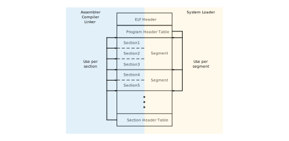

Introduction
Sorry, introdcution is currently available only in English
What is ToyVMM?
ToyVMM is a project being developed for the purpose of learning virtualization technology. ToyVMM aims to accomplish the following
Code-based understanding of KVM-based virtualization technologies Learn about the modern virtualization technology stack by using libraries managed by rust-vmm The rust-vmm libraries are also used as a base for well-known OSS such as firecracker and provides the functionality needed to create custom VMMs.
Disclaimer
While every effort has been made to provide correct information in this publication, the authors do not necessarily guarantee that all information is accurate. Therefore, the authors cannot be held responsible for the results of development, prototyping, or operation based on this information. If you find any errors in the contents of this document, please correct or report them as PR or Issue.
What's Next?
If you would like to try ToyVMM first, please refer to QuickStart. To learn more about KVM-based virtualization through ToyVMM, please refer to 01. Running Tiny Code in VM
QuickStart
Sorry, quickstart is currently available only in English
This quickstart documents are based on the commit ID of 58cf0f68a561ee34a28ae4e73481f397f2690b51.
Architecture & OS
ToyVMM only supports x86_64 Linux for Guest OS.
ToyVMM has been confirmed to work with Rocky Linux 8.6, 9.1 and Ubuntu 18.04, 22.04 as the Hypervisor OS.
Prerequisites
ToyVMM requires the KVM Linux kernel module.
Run Virtual Machine using ToyVMM
Following command builds toyvmm from source, downloads the kernel binary and rootfs needed to start the VM, and starts the VM.
# download and build toyvmm from source.
git clone https://github.com/aztecher/toyvmm.git
cd toyvmm
mkdir build
CARGO_TARGET_DIR=./build cargo build --release
# Download a linux kernel binary.
wget https://s3.amazonaws.com/spec.ccfc.min/img/quickstart_guide/x86_64/kernels/vmlinux.bin
# Download a rootfs.
wget https://s3.amazonaws.com/spec.ccfc.min/ci-artifacts/disks/x86_64/ubuntu-18.04.ext4
# Run virtual machine based on ToyVMM!
sudo ./build/release/toyvmm vm run --config examples/vm_config.json
After the guest OS startup sequence is output, the login screen is displayed, so enter both username and password as 'root' to login.
Disk I/O in Virtual Machine.
Since we have implemented virtio-blk, the virtual machine is capable of operating block devices.
Now it recognizes the ubuntu18.04.ext4 disk image as a block device and mounts it as the root filesystem.
lsblk
> NAME MAJ:MIN RM SIZE RO TYPE MOUNTPOINT
> vda 254:0 0 384M 0 disk /
Therefore, if you create a file in the VM and then recreate the VM using the same image, the file you created will be found. This behavior is significantly different from a initramfs (rootfs that is extracted on RAM).
# Create 'hello.txt' in VM.
echo "hello virtual machine" > hello.txt
cat hello.txt
> hello virtual machine
# Rebooting will cause the ToyVMM process to terminate.
reboot -f
# In the host, please restart VM and login again.
# Afterward, you can found the file you created in the VM during its previous run.
cat hello.txt
> hello virtual machine
Network I/O in Virtual Mahcine.
Since we have implemented virtio-net, the virtual machine is capable of operating network device.
Now, it recognizes the eth0 network interface.
ip link show eth0
> 2: eth0: <BROADCAST,MULTICAST,UP,LOWER_UP> mtu 1500 qdisc pfifo_fast state UP mode DEFAULT group default qlen 1000
> link/ether 52:5f:7f:b3:f8:81 brd ff:ff:ff:ff:ff:ff
And toyvmm creates the host-side tap device named vmtap0 that connect to the virtual machine interface.
ip link show vmtap0
> 334: vmtap0: <BROADCAST,UP,LOWER_UP> mtu 1500 qdisc fq_codel state UNKNOWN mode DEFAULT group default qlen 1000
> link/ether 26:e9:5c:02:3c:19 brd ff:ff:ff:ff:ff:ff
Therefore, by assigning appropriate IP addresses to the interfaces on both the VM side and the Host side, communication can be established between the HV and the VM.
# Assign ip address 192.168.0.10/24 to 'eth0' in vm.
ip addr add 192.168.0.10/24 dev eth0
# Assign ip address 192.168.0.1/24 to 'vmtap0' in host.
sudo ip addr add 192.168.0.1/24 dev vmtap0
# Host -> VM. ping to VM interface ip from host.
ping -c 1 192.168.0.10
# VM -> Host. Ping to Host interface ip from vm.
ping -c 1 192.168.0.1
Additionally, by setting the default route on the VM side, and configuring iptables and enabling IP forwarding on the host side, you can also allow the VM to access the Internet.
However, this will not be covered in detail here.
What's next?
If you are not familiar with KVM-based VMs, I suggest you start reading from 01. Running Tiny Code in VM. If not, please read the topics that interest you.
01. Running Tiny Code in VM
Sorry, this contents is currently available only in English
Tiny code execution is no longer supported in the current latest commit.
You may be able to verify it by checking out past commits, but please be aware that resolving package dependencies may be challenging.
This chapter is documented in a way that you can get a sense of its behavior without actually running it, so please feel reassured about that.
DeepDive ToyVMM instruction and how to run tiny code in VM
This main function is a program that starts a VM using the KVM mechanism and executes the following small code inside the VM
#![allow(unused)] fn main() { code = &[ 0xba, 0xf8, 0x03, /* mov $0x3f8, %dx */ 0x00, 0xd8, /* add %bl, %al */ 0x04, b'0', /* add $'0', %al */ 0xee, /* out %al, (%dx) */ 0xb0, '\n', /* mov $'\n', %al */ 0xee, /* out %al, (%dx) */ 0xf4, /* hlt */ ]; }
This code perform several register operations, but the initial state of the CPU regisers for this VM is set as follows.
#![allow(unused)] fn main() { regs.rip = 0x1000; regs.rax = 2; regs.rbx = 2; regs.rflags = 0x2; vcpu.set_sregs(&sregs).unwrap(); vcpu.set_regs(®s).unwrap(); }
This will output the result of calculations (2 + 2) inside the VM from the IO Port, followed by a newline code as well.
As you can see the result of running ToyVMM, hex value 0x34 (= '4') and 0xa (= New Line) are catched from I/O port
How's work above code with rust-vmm libraries
Now, the following crate provided by rust-vmm is used to run these codes.
# Please see Cargo.toml
kvm-bindings
kvm-ioctls
vmm-sys-util
vm-memory
I omit to describe about vmm-sys-util because it is only used to create temporary files at this point, so there is nothing special to mention about it.
I will go through the code in order and describe how each crate is related to that.
In this explanation, we will focus primary on the perspective of what ioctl is performed as a result of a function call (This is because the interface to manipulate KVM from the user space relies on the iocl system call)
Also, please note that explanations of unimportant variables may be omitted.
It should be noted that what is described here is not only the ToyVMM implementation, but also the firecracker implementation in a similaer form.
First, we need to open /dev/kvm and acquire the file descriptor. This can be done by Kvm::new() of kvm_ioctls crate. Following this process, the Kvm::open_with_cloexec function issues an open system call as follows, returns a file descriptor as Kvm structure
#![allow(unused)] fn main() { let ret = unsafe { open("/dev/kvm\0".as_ptr() as *const c_char, open_flags) }; }
The result obtained from above is used to call the method create_vm, which results in the following ioctl being issued
#![allow(unused)] fn main() { vmfd = ioctl(kvmfd, KVM_CREATE_VM, 0) where vmfd: from /dev/kvm }
Please keep in mind that the file descriptor returned from above function will be used later when preparing the CPU.
Anyway, we finish to crete a VM but it has no memory, cpu.
Now, the next step is to prepare memory!
In kvm_ioctls's example, memory is prepared as follows
#![allow(unused)] fn main() { // First, setup Guest Memory using mmap let load_addr: *mut u8 = unsafe { libc::mmap( null_mut(), mem_size, // 0x4000 libc::PROT_READ | libc::PROT_WRITE, libc::MAP_ANONYMOUS | libc::MAP_SHARED | libc::MAP_NORESERVE, -1, 0, ) as *mut u8 }; // Second, setup kvm_userspace_memory_region sructure using above memory // kvm_userspace_memory_region is defined in kvm_bindings crate let mem_region = kvm_userspace_memory_region { slot, guest_phys_addr: guest_addr, // 0x1000 memory_size: mem_size as u64, // 0x4000 userspace_addr: load_addr as u64, flags: KVM_MEM_LOG_DIRTY_PAGES, }; unsafe { vm.set_user_memory_region(mem_region).unwrap() }; // retrieve slice from pointer and length (slice::form_raw_parts_mut) // > https://doc.rust-lang.org/beta/std/slice/fn.from_raw_parts_mut.html // and write asm_code into this slice (&[u8], &mut [u8], Vec<u8> impmenent the Write trait!) // > https://doc.rust-lang.org/std/primitive.slice.html#impl-Write unsafe { let mut slice = slice::from_raw_parts_mut(load_addr, mem_size); slice.write(&asm_code).unwrap(); } }
Check set_user_memory_region. This function will issue the following ioctl as a result, attach the memory to VM
#![allow(unused)] fn main() { ioctl(vmfd, KVM_SET_USER_MEMORY_REGION, &mem_region) }
ToyVMM, on the other hand, provides a utility functions for memory preparation.
This difference is due to the fact that ToyVMM's implementation is similaer to firecracker's, but they are essentially doing the same thing.
Let's look at the whole implementation first
#![allow(unused)] fn main() { // The following `create_region` functions operate based on file descriptor, so first, create a temporary file and write asm_code to it. let mut file = TempFile::new().unwrap().into_file(); assert_eq!(unsafe { libc::ftruncate(file.as_raw_fd(), 4096 * 10) }, 0); let code: &[u8] = &[ 0xba, 0xf8, 0x03, /* mov $0x3f8, %dx */ 0x00, 0xd8, /* add %bl, %al */ 0x04, b'0', /* add $'0', %al */ 0xee, /* out %al, %dx */ 0xb0, b'\n', /* mov $'\n', %al */ 0xee, /* out %al, %dx */ 0xf4, /* hlt */ ]; file.write_all(code).expect("Failed to write code to tempfile"); // create_region funcion create GuestRegion (The details are described in the following) let mut mmap_regions = Vec::with_capacity(1); let region = create_region( Some(FileOffset::new(file, 0)), 0x1000, libc::PROT_READ | libc::PROT_WRITE, libc::MAP_NORESERVE | libc::MAP_PRIVATE, false, ).unwrap(); // Vec named 'mmap_regions' contains the entry of GuestRegionMmap mmap_regions.push(GuestRegionMmap::new(region, GuestAddress(0x1000)).unwrap()); // guest_memory represents as the vec of GuestRegion let guest_memory = GuestMemoryMmap::from_regions(mmap_regions).unwrap(); let track_dirty_page = false; // setup Guest Memory vm.memory_init(&guest_memory, kvm.get_nr_memslots(), track_dirty_page).unwrap(); }
The create_vm consequently performs a mmap in the following way and returns a part of the structure (GuestMmapRegion) representing the GuestMemory
#![allow(unused)] fn main() { pub fn create_region( maybe_file_offset: Option<FileOffset>, size: usize, prot: i32, flags: i32, track_dirty_pages: bool, ) -> Result<GuestMmapRegion, MmapRegionError> { ... let region_addr = unsafe { libc::mmap( region_start_addr as *mut libc::c_void, size, prot, flags | libc::MAP_FIXED, fd, offset as libc::off_t, ) }; let bitmap = match track_dirty_pages { true => Some(AtomicBitmap::with_len(size)), false => None, }; unsafe { MmapRegionBuilder::new_with_bitmap(size, bitmap) .with_raw_mmap_pointer(region_addr as *mut u8) .with_mmap_prot(prot) .with_mmap_flags(flags) .build() } }
Let's check the structure about Memory here.
In src/kvm/memory.rs, the following Memory structure is defined based on vm-memory crate
pub type GuestMemoryMmap = vm_memory::GuestMemoryMmap<Option<AtomicBitmap>>;
pub type GuestRegionMmap = vm_memory::GuestRegionMmap<Option<AtomicBitmap>>;
pub type GuestMmapRegion = vm_memory::MmapRegion<Option<AtomicBitmap>>;
The MmapRegionBuilder is also defined in the vm-memory crate, and this build method creates the MmapRegion.
This time, since we have performed the mmap myself in advance and passed that address to with_raw_mmap_pointer, use that area to initialize. Otherwise, mmap is performed in the build method. In any case, this build method will get the MmapRegion structure, but defines a synonym as described above, which is returned as the GuestMmapRegion. By calling the create_region function once, you can allocate and obtain one region of GuestMemory based on the information(size, flags, ...etc) specified in the argument.
The region allocated here is only mmapped from the virtual address space of the VMM process, and no further information is available. To use this area as Guest Memory, a GuestRegionMmap structure is created from this area. This is simple, specify the corresponding GuestAddress for this region and initialize GuestRegionMmap with a tuple of mmapped area and GuestAddress. In following code, the initialized GuestRegionMmap is pushed to Vec for subsequent processing.
#![allow(unused)] fn main() { map_regions.push(GuestRegionMmap::new(region, GuestAddress(0x1000)).unwrap()); }
Now, the mmap_regions: Vec<GuestRegionMmap> created as above represents the entire memory of the Guest VM, and each region that makes up the guest memory holds information on the area allocated by the VMM for the region and the top address of the Guest side.
The GuestMemoryMmap structure representing the Guest Memory is initialized from this Vec information and set to VM by the memory_init method.
#![allow(unused)] fn main() { let guest_memory = GuestMemoryMmap::from_regions(mmap_regions).unwrap(); vm.memory_init(&guest_memory, kvm.get_nr_memslots(), track_dirty_page).unwrap(); }
Next, let's check the operation of this memory_init. This calls set_kvm_memory_regions and the actual process is described there.
#![allow(unused)] fn main() { pub fn set_kvm_memory_regions( &self, guest_mem: &GuestMemoryMmap, track_dirty_pages: bool, ) -> Result<()> { let mut flags = 0u32; if track_dirty_pages { flags |= KVM_MEM_LOG_DIRTY_PAGES; } guest_mem .iter() .enumerate() .try_for_each(|(index, region)| { let memory_region = kvm_userspace_memory_region { slot: index as u32, guest_phys_addr: region.start_addr().raw_value() as u64, memory_size: region.len() as u64, userspace_addr: guest_mem.get_host_address(region.start_addr()).unwrap() as u64, flags, }; unsafe { self.fd.set_user_memory_region(memory_region) } }) .map_err(Error::SetUserMemoryRegion)?; Ok(()) } }
Here we can see that set_user_memory_region is called using the necessary information while iterating the region.
In other words, it is processing the same as the example code except that there may be more than one region.
Now that we've gone through the explanation of memory preparation, let's take a look at the vm-memory crate!
The information presented here is only the minimum required, so please refer to Design or other sources for more details.
This will also be related to the above iteration, where we were able to call methods such as sart_addr() and len() to construct the necessary information for set_user_memory_region.
#![allow(unused)] fn main() { GuestAddress (struct) : Represent Guest Physicall Address (GPA) FileOffset(struct) : Represents the start point within a 'File' that backs a 'GuestMemoryRegion' GuestMemoryRegion(trait) : Represents a continuous region of guest physical memory / trait GuestMemory(trait) : Represents a container for a immutable collection of GuestMemoryRegion object / trait MmapRegion(struct) : Helper structure for working with mmaped memory regions GuestRegionMmap(struct & implement GuestMemoryRegion trait) : Represents a continuous region of the guest's physical memory that is backed by a mapping in the virtual address space of the calling process GuestMemoryMmap(struct & implement GuestMemory trait) : Represents the entire physical memory of the guest by tracking all its memory regions }
Since GuestRegionMmap implements the GuestMemoryRegion trait, there are implementations of functions such as start_addr() and len(), which were used in the above interation.
The following figure briefly summarizes the relationship between these structures

As you can see, what is being done is essentially the same.
The final step is prepareing vCPU (vCPU is a CPU to be attached to a virtual machine).
Currently, a VM has been created and memory containing instructions has been inserted, but these is no CPU, so the instructions can't be executed. Therefore, let's create a vCPU, associate it with the VM, and execute the instruction by running the vCPU!
Using the file descriptor obtained during VM creaion (vmfd), the resulting ioctl will be issued as follows.
#![allow(unused)] fn main() { vcpufd = ioctl(vmfd, KVM_CREATE_VCPU, 0) }
The create_vm method that was just issued to obtain the vmfd is designed to return a kvm_ioctls::VmFd strucure as a result, and by execuing the create_vcpu method, which is a method of this structure, the above ioctl is consequently issued and returns the result as a kvm_ioctls::VcpuFd structure.
VcpuFd provides utilities for getting and setting various CPU states.
For example, if you want o get/set a register set from the vCPU, you would normally issue the following ioctl
#![allow(unused)] fn main() { ioctl(vcpufd, KVM_GET_SREGS, &sregs); ioctl(vcpufd, KVM_SET_SREGS, &sregs); }
For these, the following methods are available in kvm_ioctls::VcpuFd
#![allow(unused)] fn main() { get_sregs(&self) -> Result<kvm_sregs> set_sregs(&self, sregs: &kvm_sregs) -> Result<()> }
VcpuFd also provids a method called run, which issues the following insructions to actually run the vCPU.
#![allow(unused)] fn main() { ioctl(vcpufd, KVM_RUN, NULL) }
and then, we can aquire return values that has the type Result<VcpuExit> resulting this method.
When running vCPU, exit occurs for various reasons. This is an instruction that the CPU cannot handle, and the OS usually tries to deal with it by invoking the corresponding handler.
If this type of exit comes back from the VM's vCPU, as in the case, it will be necessary to write the appropriate code to handle the situation.
VcpuExit is defined in kvm_ioctls::VcpuExit as enum.
When Exit are occurred on several reasons in running vCPU, the exit reasons that are defined in kvm.h in linux kernel are wrapped to VcpuExit.
Therefore, it is sufficient to write a process that pattern matches this result and appropriately handles the error to be handled.
Now, there is a instruction that execute outputting values through I/O port and this will occur the KVM_EXIT_IO_OUT.
VcpuExit wrap this exit reason as IoOut.
Originally (in C programm as example), we require to calculate appropriate offset to get output data from I/O port, but now, this process are implemented in run method and returned as VcpuExit that contains necessary values.
So, we don't have to write these unsafe code (pointer offset calculation) and handle these exit as you will.
#![allow(unused)] fn main() { loop { match vcpu.run().expect("vcpu run failed") { kvm_ioctls::VcpuExit::IoOut(addr, data) => { println!( "Recieved I/O out exit. \ Address: {:#x}, Data(hex): {:#x}", addr, data[0], ); }, kvm_ioctls::VcpuExit::Hlt => { break; } exit => panic!("unexpected exit reason: {:?}", exit), } } }
In above, only handle KVM_EXIT_IO_OUT and KVM_EXIT_HLT, and the others will be processed as panic. (Although all exits should be handled, I want to focus on the description of KVM API example and keep it simply)
Since we are here, let's take a look at the processing of the run method in some detail.
Let's check the processing of KVM_EXIT_IO_OUT.
If you look at the LWN article, you will see that it calculates the offset and outputs the necessary information in the following way.
#![allow(unused)] fn main() { case KVM_EXIT_IO: if (run->io.direction == KVM_EXIT_IO_OUT && run->io.size == 1 && run->io.port == 0x3f8 && run->io.count == 1) putchar(*(((char *)run) + run->io.data_offset)); else errx(1, "unhandled KVM_EXIT_IO"); break; }
On the other hand, run method implemented in kvm_ioctl::VcpuFd is like bellow
#![allow(unused)] fn main() { ... let run = self.kvm_run_ptr.as_mut_ref(); match run.exit_reason { ... KVM_EXIT_IO => { let run_start = run as *mut kvm_run as *mut u8; // Safe because the exit_reason (which comes from the kernel) told us which // union field to use. let io = unsafe { run.__bindgen_anon_1.io }; let port = io.port; let data_size = io.count as usize * io.size as usize; // The data_offset is defined by the kernel to be some number of bytes into the // kvm_run stucture, which we have fully mmap'd. let data_ptr = unsafe { run_start.offset(io.data_offset as isize) }; // The slice's lifetime is limited to the lifetime of this vCPU, which is equal // to the mmap of the `kvm_run` struct that this is slicing from. let data_slice = unsafe { std::slice::from_raw_parts_mut::<u8>(data_ptr as *mut u8, data_size) }; match u32::from(io.direction) { KVM_EXIT_IO_IN => Ok(VcpuExit::IoIn(port, data_slice)), KVM_EXIT_IO_OUT => Ok(VcpuExit::IoOut(port, data_slice)), _ => Err(errno::Error::new(EINVAL)), } } ... }
Let me explain a little. The kvm_run is provided by the kvm-bindings crate, which is a structure automatically generated from a header file using bindgen, so it is a structure like the linux kernel's kvm_run converted directory to Rust.
First, kvm_run is obtained in the form of a pointer, a method of obtaining a pointer often used in Rust.
This correspoinds to the first address of the kvm_run structure which is bound to run_start variable.
And the information corresponding to run->io(.member) can be obtained from run.__bindgen_anon_1.io, although it is a bit tricky. The field named __bindgen_anon_1 is the effect of automatic generation by bindgen.
The data we want is at the first address of kvm_run plus io.data_offset. This process is performed in run_start.offset(io.data_offset as isize). And the data size can be calculated from io->size and io->count (in the LWN example, it is 1byte, so it's taken directory from the offset by putchar). This part is calculated and stored in the value data_size, and std::slice::from_raw_parts_mut actually retrieves the data using this size.
Finally, checking io.direction, we change the wrap type for KVM_EXIT_IO_IN or KVM_EXIT_IO_OUT respectively, and return the descired information such as port and data_slice together.
As can be seen from the above, what is being done is clear.
However, it still contains many unsafe operations because it involves pointer manipuration.
We can see that by using these libraries, we are able to implement VMM on a stable implementation.
Well, it's ben a long time comming, but let's take a look back at the rust-vmm crates we're using again.
#![allow(unused)] fn main() { kvm-bindings : Library that includes structures automatically generated from kvm.h by bindgen. kvm-ioctls : Library that hides ioctl and unsafe processes related to kvm operations and provides user-friendly sructures, functions and methods. vm-memory : Library that provides structures and operations to the Memory }
This knowledge will come up again and again in future discussion and is basic and important.
Load Linux Kernel
このセクションではVMMのファーストステップとしてGuest VMを起動するための実装について触れることとする。
VMMとしては必要最低限の機能である一方、Linux Kernelの起動にあたってさまざまな知識を要求される内容でもある。
このセクションではGuest VMを起動するための最低限の事項について説明し、ToyVMMでどのように実装しているかについても触れていく そのため、いくつかの細かいチャプターに分割しトピックごとに説明をしていくことにしよう
トピックとしては次のようになっている。
- 02-1. Overview of Booting Linux
- 02-2. ELF binary format and vmlinux structure
- 02-3. Loading initrd
- 02-4. Setup registers of vcpu
- 02-5. Serial Console implementation
- 02-6. ToyVMM implementation
また、本資料は以下のコミットナンバーをベースとしている
- ToyVMM :
27fdf196dfb31938f24785ca64e7233a6dc8fceb - Firecracker :
4bf121fc032cc2d94a20a3625f2af3918545154a
本資料をToyVMMのコードを参照しながら確認する場合は参考にされたい。
Overview of Booting Linux
一般的なブートの仕組み
Linuxでは大まかに以下のようにプログラムが順番に動作していくことでOSが起動していく
- BIOS
- ブートローダ (GRUB)
- Linuxカーネル（vmlinuz）
- init
BIOSはマザーボード上のROMにプログラムが格納されている。
我々が電源を投入すると、CPUはこの領域がマップされているアドレスから処理を実行するようになっている。
BIOSはハードウェアの検出、初期化を実行し、その後OSのブートドライブ（HHD/SSD、USBフラッシュメモリなど）を探索する。
この時、ブートドライブはMBR、もしくはGPTの形式でフォーマットされている必要があり、これらのフォーマットとBIOSの関係はそれぞれ以下のように対応する
| BIOS \ DISK Format | MBR | GPT |
|---|---|---|
| Legacy BIOS | ◯ | - |
| UEFI | ◯ * | ◯ |
* UEFIはLegacy Boot Modeのサポートがあるため、MBRをサポートしている
以降ではMBRを利用する場合のOS探索について説明する
詳しい説明に入る前に、MBRの構造について簡単に整理しておく。
以降で説明するMBRの構造はHDD／SSDやUSBフラッシュメモリなどの場合を想定し記載しており、後述するPartition Entryの存在を暗黙に仮定しているので注意されたい。
なお、本資料ではWikipediaで記載されている名称を引用しているので注意されたい。
MBRはブートドライブの先頭セクタに512byte書き込まれており、大きく分けて3つの領域が存在している。
- Bootstrap code are (446 byte)
- Partition Entry (64 byte = 16 byte * 4)
- Boot Signature (2 byte)
MBRについてここでは詳細に説明はしないが、Boot code areaにはOSをブートする機械語のプログラム（Boot Loader）が、Partition Entryにはそのディスクの論理パーティション情報が格納されている。
（余談だが、Boot code areaは446byteしかないため、Boot Loaderを直接実装するのではなく、Boot Loaderは別の場所に格納しておき、そのブートローダをメモリに読み込むために最小限のプログラムを配置することもあるようだ）
ここで重要なのは3つ目の「Boot Signature」であり、ここに格納されている2byteの値は、当該ドライブがブートドライブかどうかを担保するために利用される。
具体的には、BIOSがOSのブートドライブを探索する時、先頭1セクタ（512byte）を読み込み、最後の2byte（Boot Signature）がブートドライブであることを示すシグネチャ（0x55 0xaa）であることを確認する。
このシグネチャが亜確認できた場合、当該ディスクをブートディスクと判定し、先頭1セクタ(512byte)をメインメモリの0x7c00から0x7fffに読み込んで、0x7c00からプログラムを実行していく。
さて、これまでの議論の簡単な裏付けとして、手元のマシンでBoot Signatureを確認してみる。
仮想マシンなので、ブートディスクはvdaと表示されている。通常のマシンならsdaなどだろう。
このvdaから先頭1セクタ分の内容をファイルに書き出し、hexdumpで510byteオフセットした位置から2byte確認してみると、確かに0x55 0xaaの値が確認できる。
$ lsblk
NAME MAJ:MIN RM SIZE RO TYPE MOUNTPOINT
sr0 11:0 1 2M 0 rom
vda 252:0 0 300G 0 disk
├─vda1 252:1 0 1M 0 part
└─vda2 252:2 0 300G 0 part /
$ sudo dd if=/dev/vda of=mbr bs=512 count=1
1+0 records in
1+0 records out
512 bytes (512 B) copied, 0.000214802 s, 2.4 MB/s
$ hexdump -s 510 -C mbr
000001fe 55 aa |U.|
00000200
話を戻すと、BIOSによってMBRの情報を元にブートディスク上に格納されていたブートローダがメモリ上に展開され実行されていくことになる。ブートローダはカーネルとinitramfsをDISKからメモリに読み込み、カーネル起動する役目を持ったプログラムであり、近年では一般的にGRUBが利用されることが多い。ブートローダの詳細の処理内容についてもここでは省略とする。
重要な点としては、ブートローダはDISK上に格納されたカーネルなどを読み込む必要があるという点である。 これを達成する素朴な方法は我々がDISK上のカーネルファイルの位置をブートローダに対して教えることであろう。 しかしgrub.cfgの内容を見てみると、カーネルやinitrdの位置をファイルパスの形でしか指定していないことを確認できるだろう。 これはブートローダがファイルシステムを解釈する能力を有している必要があることを意味する。 実際に、Boot Loaderいくつかのファイルシステムを解釈でき、ファイルシステム上のディレクトリパス情報からカーネルを探し出すことができる。 ただし、当然ながらBoot Loaderは特定のファイルシステムのみのサポートに留まるため、それ以外のフォーマットのものを解釈することはできないので注意されたい。 ブートローダによってgrub.cfgで指定されたカーネルとRAMディスクをメモリ上にロードし、カーネルの先頭アドレスにジャンプすることで、処理をカーネルへと引き渡し自身の処理を終える
カーネルの処理の話に入る前に、カーネルファイルについて少し整理しておく。
カーネルファイルは一般にvmlinuz*という名前がついているファイルである
我々にとって馴染みのあるカーネルファイルは/boot/vmlinuz-*.imgと思われるが、このファイルはbzImage形式のファイルである。これはfileコマンドで簡単に確認することができる。
このbzImageはカーネル本体を含む圧縮バイナリファイルの他に、低レベルの初期化を行うためのファイルなどいくつかのファイルが含まれる形式になっている。
このbzImageを適切に解凍することでカーネルの実行バイナリを手に入れることもできる。
本資料ではbzImage形式のカーネルをvmlinuz、実行バイナリ形式のカーネルをvmlinux.binと表記する。
さてブートローダからvmlinuzに処理が引き渡されるとvmlinuzは低レベルの初期化処理を実施後、カーネル本体を解凍、メモリにロードし、カーネルのエントリールーチンに処理を移す。
カーネルは全ての初期化処理を終えると、tmpfsファイルシステムを作成し、ブートローダがRAM上に配置したinitramfsをそこに展開し、ディレクトリルートにあるinitスクリプトを起動する。
このinitスクリプトはDISK上に格納されている本命のファイルシステムをマウントするために必要な準備を整え、本命のファイルシステムやその他に重要なファイルシステムをマウントする。この時initramfsにはいくつかのデバイスドライバなども含まれているため、多様なフォーマットのルートファイルシステムをマウントすることが可能である。
さらにこれが完了すると、ルートを本命のルートファイルシステムに切り替え、そこに格納されている/sbin/init バイナリを起動する。
/sbin/initはシステムで最初に起動されるプロセス（PID=1が付与されるプロセス）であり、他のプロセスを起動させる役割を持っている全てのプロセスの親となるものである。
initにはさまざまな実装（SysVinit, Upstart）があるが、最近のCentOSやUbuntuなどで利用されているのはSystemdである。
initの最終的な責務は、システムの更なる準備とブートプロセスが終わった時点で必要なサービスが実行されておりユーザがログイン可能な状態まで持っていくことである。
以上が、非常に大雑把ではあるが電源投入からOSが起動するまでの流れである。
initrdとinitramfs
上記に記載したLinux起動処理の中に、メモリ上に展開するファイルシステムであるinitramfsを紹介したが、我々がよく目にするのは/boot/initrd.imgであろうと思う。ここではinitrdとinitramfsとの違いについて説明する
initrdは「initial RAM disk」、initramfs「initial RAM File System」であり両者は別物であるが、提供したい機能は同じで「本命のルートファイルシステムのマウントに必要なコマンド、ライブラリ、モジュール」を提供し、本命のルートファイルシステム上に存在する/sbin/initスクリプトを起動することである。
もともと本来起動したいシステムは何かしらの記憶装置に書き込まれているが、これを読み込むには適切なデバイスドライバの存在と、これをマウントするファイルシステムが存在していないといけないという問題がある。
initrd/initramfsは両方ともこの問題を解決する。
initrdとinitramfsは上記の機能を提供するための方式が異なっており、名前の通りであるがinitrdはブロックデバイス、initramfsは（tmpfsをもとにした）RAM filesystemの方式になっている。
従来はinitrdを利用していたが、Kernel 2.6以降でinitramfsが利用できるようになっており、現在はこちらの方式を利用することの方が一般的と思われる。
initrdからinitramfsに移りわってきたのにはもちろん、initrdには問題があり、initramfsはそれの解決が測られたからである。
initrdには概ね以下のような問題が存在していた
- RAM diskはRAM上に擬似的なブロックデバイスを作成し、これをあたかも二次記憶のように取り扱う仕組みであるため、通常のブロックデバイスと同様にメモリキャッシュ機構が働いてしまうために不必要にキャッシュメモリを消費する。さらにはページングのような機構が働いてしまうことで一層メモリを逼迫してしまう。
- RAM diskはそのデータをフォーマットし解釈するためのext2のようなファイルシステムドライバーが必要である。
- RAM diskのブロックデバイスは固定サイズになるため、あまりに小さいと必要なスクリプトを全て収めることができず、大きすぎると無駄にメモリを利用する
これを解決するために考案され、現在のデフォルトになっているのがinitramfsである。
initramfsはサイズを柔軟に設定できる軽量なメモリ内ファイルシステムであるtmpfsをベースとして作られたfilesystemである。
当然これはブロックデバイスではないので、キャッシュやページングでメモリを汚すこともなく、ブロックデバイスに対するファイルシステムドライバも不要で、さらに固定長という問題もうまく解決している。
initrd/initramfsいずれの方式にせよ、その中に格納されているツールを利用して本命のルートファイルシステムをマウントしそちらにルートを切り替えた上で、そのファイルシステム上に存在しているスタートアップスクリプトである/sbin/initを起動する。
initramfsの中身を確認する
initramfsの内容を展開し中身を確認してみる。Ubuntu 20.04.2 LTSのinitrdを展開してみる。
（注意: initrdという命名のファイルだが、このファイルはれっきとしたinitramfsである）。
initramfsはいくつかのファイルをCPIOの形式にしたものが連結されているため、そのままcpioコマンドで解凍しても以下のように冒頭のファイル（AuthenticAMD.bin）のみしか出てこない
$ mkdir initrd-work && cd initrd-work
$ sudo cp /boot/initrd.img ./
$ cat initrd.img| cpio -idvm
.
kernel
kernel/x86
kernel/x86/microcode
kernel/x86/microcode/AuthenticAMD.bin
62 blocks
dd/cpioの組み合わせで全てのファイルが展開できるが、unmkinitramfsという便利なコマンドがあるので今回はこちらを利用する
$ mkdir extract
$ unmkinitramfs initrd.img extract
$ ls extract
early early2 main
解凍した結果、early, early2, mainというディレクトリが作成されていることがわかる
例えばこのearlyは先ほどCPIOで解凍した際に出てきたファイルが確認できる
重要なのは、mainの配下で、その中のコンテンツとしてファイルシステムルートの内容が格納されている
$ ls extract/early/kernel/x86/microcode
AuthenticAMD.bin
$ ls extract/early2/kernel/x86/microcode
GenuineIntel.bin
$ ls extract/main
bin conf cryptroot etc init lib lib32 lib64 libx32 run sbin scripts usr var
ここで解凍した内容に対してchrootすると、Linux起動時のRAM filesystemの内容を擬似的に操作でき、どのような操作ができるか把握することができる。
$ sudo chroot extract/main /bin/sh
BusyBox v1.30.1 (Ubuntu 1:1.30.1-4ubuntu6.3) built-in shell (ash)
Enter 'help' for a list of built-in commands.
# ls
scripts init run etc var usr conf
lib64 bin lib libx32 lib32 sbin cryptroot
# pwd
/
# which mount
/usr/bin/mount
# exit
上記に示す通り、ルートにinitというスクリプトファイルが入っており、これがinitramfsを展開したのちに起動されるスクリプトである
このスクリプトを全て解説することはしないが、initスクリプトの中で/proc/cmdlineの中身を読んでおり、ここから本来のroot filesystemが格納しているディスク情報（root=/dev/sda1のような記載）を拾い、マウント処理を実施しているようであった。
一方、この辺りが空の場合、Ubuntu 20.04LTSのinitrdから抜き出したこのinitファイルではエラーになるようだった。
今回のToyVMMでは以降説明するfirecracker-initrdをベースとしたinitramfsを利用しているためこの辺りの挙動は少し異なる。
firecracker-initrdについて
ToyVMMでは、firecracker-initrdを利用させてもらっている。
firecracker-initrdはAlpineをベースとしてinitrd.img（initramfs）を作成してくれる。
上記でみたUbuntuのinitrdとは異なり、microcodeなど追加のCPIOファイルは含まれないため、単純に解凍するだけでroot filesystemが確認できる
$ cat initrd.img | cpio -idv
$ ls
bin dev etc home init initrd.img lib media mnt opt proc root run sbin srv sys tmp usr var
Alpine Linuxは通常起動時にRAM上にファイルシステムが展開された上でOSが起動する。その後ニーズに応じてsetup-alpineでDISKにOSを焼いたりするかなど決定する。
今回はこのAlpine Linuxのinitを使用しているため、このinitramfsを利用して起動したVMは、デフォルトでは本命のルートファイルシステムをマウントせず、単純にRAM上にファイルシステムを展開しAlpine Linuxが起動することになる。
これは、従来通りのOSのようにboot領域を二次記憶に置いた上で/proc/cmdlineでinitスクリプトに伝えるという流れとは異なるものであるということを理解しておきたい。
Boot sequence of linux kernel in ToyVMM
ここでこれまで議論してきた内容とToyVMMでのLinuxブートについての比較をしてみる
| Boot process (on Linux) | ToyVMM |
|---|---|
| BIOS | Not implemented yet |
| Boot Loader | Require: vmlinux/initrd.img loading, basic setup required |
| Linux Kernel | Processed by vmlinux.bin |
| init | Processed by init scripts (from firecracker-initrd's initrd.img) |
現在のToyVMMの実装ではbzImageの読み込みについてはサポートしておらず、ELFバイナリであるvmlinux.binを利用することとする。
現時点の実装ではBIOS関係については実装を省略している。
BootLoaderが行う処理のうち、vmlinux.binやinitrd.imgをメモリにロードするなどの処理を実装する必要がある。
Linux Kernel自体はvmlinux.binが、initの処理はinitrd.img内部のinitスクリプトが担当するため、上記の処理を実装することで既存のLinux Kernelを起動すること自体は可能である。
より詳細の実装については02-6_minimal_vmm_implementationで説明する。
References
- MBR(Master Boot Records)の構造
- Initrd(4) - Linux man page
- Initramfsのしくみ
- Initramfs/ガイド
- Kernel Boot Process
- What's the Difference Between initrd and initramfs
- bzImage
- Initデーモンを理解する
- Linuxがブートするまで
- filesystems/ramfs-rootfs-initramfs.txt
ELF binary format and vmlinux structure
本稿執筆時、ToyVMMでVMを起動する際に利用するカーネルはELF形式のvmlinux.binを前提としている。
そのため、VMMの内部ではELF形式を解釈し、適切にカーネルをVM用に用意したメモリ領域にロードする必要がある。
この処理は rust-vmm/linux-loader crateで実装されており、ToyVMMではこのcrateを利用するため実装としては隠蔽されてしまうが、このcrateの中でどのように処理されているかを知ることは重要だと判断したため、本章を設けELFバイナリのロードに関する解説を記載することとした。
ELF Binary Format
ELFのファイルフォーマットは以下のようになっている
上記の通り、ELFファイルフォーマットは基本的にELF Header、Program Header Table、Segument(Sections)、Section Header Tableからなる。
ELFファイルはシステムローダが利用する場合はProgram Header Tableに記述されたSegmentの集合として取り扱われ、コンパイラ・アセンブラ・リンカはSection Header Tableに記述されたSectionの集合として扱われる。
ELF HeaderはこのELFファイルの全体的な情報を保持している。
Program Header Tableの各エントリであるProgram Headerは、それぞれが対応するSegumentについてのHeader情報を保持している。つまり、Program Headerの数だけ、Segmentが存在していることになる。
また、このSegumentはさらに複数のSecitonという単位に分割でき、このSection単位でヘッダ情報を保持しているのがSection Header Tableである。
ELF Headerは常にファイルオフセットの先頭から始まっており、ELFデータを読み込むために必要となる情報を保持している。
以下にELF Headerの内容を一部抜粋する。全体の構成を知りたい場合はMan page of ELFを参考にされたい
| Attribute | Meaning |
|---|---|
e_entry | このELFプロセスを開始する際のエントリポイントとなる仮想アドレス |
e_phoff | Program Header Tableが存在する場所のファイルオフセット値 |
e_shoff | Section Header Tableが存在する場所のファイルオフセット値 |
e_phentsize | Program Header Tableにある1エントリのサイズ |
e_phnum | Program Header Table中のエントリの個数 |
e_shentsize | Section Header Tableにある1エントリのサイズ |
e_shnum | Section Header Table中のエントリの個数 |
上記で抜粋した内容から、Program HeaderやSection Headerの各エントリの情報を取り出すことが可能であると分かるであろう。
ここで、Program Headerの内容を一部抜粋する。
| Attribute | Meaning |
|---|---|
p_type | このProgram Headerが指すSegmentの種類を表現しており、解釈の方法についてのヒントを与える |
p_offset | このProgram Headerが指すSegmentのファイルオフセット値 |
p_paddr | 物理アドレスが意味を持つシステムでは、この値はProgram Headerが指すSegmentの物理アドレスを指す |
p_filesz | このProgram Headerが指すSegmentのファイルイメージのバイト数 |
p_memsz | このProgram Headerが指すSegmentのメモリイメージのバイト数 |
p_flags | このProgram Headerが指すSegmentの情報を示すフラグで、実行可能、書き込み可能、読み取り可能を表現している |
上述の通り、Program Headerの中身を解釈することで、当該セグメントの位置やサイズ、どの様に解釈すべきかの情報を手に入れることができる。
今回の内容はこのProgram Headerの構造まで把握できていれば十分であるため、Section Headerやそのほかの詳細については省略する。
興味がある方は、Man page of ELF等を参考に確認されたい。
さて、後述するが今回取り扱うvmlinux.binはProgram Headerの数が5個で、内4つのp_typeの値がPT_LOAD、最後の一つだけPT_NOTEになっているという大変簡単な構造になっている。
ここで、PT_LOAD、PT_NOTEについてのみ、Man page of ELFからその詳細内容を部分的に抜粋する。一部情報を削っているため、必要に応じて参考資料を確認されたい。
p_type | Meaning |
|---|---|
PT_LOAD | この要素はp_fileszとp_memszで記述される読み込み可能なSegmentである。 |
PT_NOTE | この要素はロケーションとサイズのための補助情報が書き込まれている |
PT_LOADでは、ファイルのバイト列はメモリセグメントの先頭に対応づけされているため、p_offsetを利用して得られる、セグメントのメモリアドレスからサイズ分（基本的にはp_memszを利用する）をCOPYすることでセグメントの内容を読み込むことができる。
以上で必要最低限なELFの知識を身につけることができたので、次は実際にvmlinux.binをダンプしてみて中身を確認してみる。
vmlinxの解析
それではここでvmlinuxの内容を少し解析してみよう。
この解析内容の一部は今後重要な要素になってくるため是非把握してもらいたい。
readelfコマンドはELFフォーマットのファイルを理解しやすい形でダンプしてくれる非常に心強いツールである。
ここではvmlinuxのELF Header(-h)、Program Header（-l）をそれぞれ表示してみる
$ readelf -h -l vmlinux.bin
ELF Header:
Magic: 7f 45 4c 46 02 01 01 00 00 00 00 00 00 00 00 00
Class: ELF64
Data: 2's complement, little endian
Version: 1 (current)
OS/ABI: UNIX - System V
ABI Version: 0
Type: EXEC (Executable file)
Machine: Advanced Micro Devices X86-64
Version: 0x1
Entry point address: 0x1000000
Start of program headers: 64 (bytes into file)
Start of section headers: 21439000 (bytes into file)
Flags: 0x0
Size of this header: 64 (bytes)
Size of program headers: 56 (bytes)
Number of program headers: 5
Size of section headers: 64 (bytes)
Number of section headers: 36
Section header string table index: 35
Program Headers:
Type Offset VirtAddr PhysAddr
FileSiz MemSiz Flags Align
LOAD 0x0000000000200000 0xffffffff81000000 0x0000000001000000
0x0000000000b72000 0x0000000000b72000 R E 0x200000
LOAD 0x0000000000e00000 0xffffffff81c00000 0x0000000001c00000
0x00000000000b0000 0x00000000000b0000 RW 0x200000
LOAD 0x0000000001000000 0x0000000000000000 0x0000000001cb0000
0x000000000001f658 0x000000000001f658 RW 0x200000
LOAD 0x00000000010d0000 0xffffffff81cd0000 0x0000000001cd0000
0x0000000000133000 0x0000000000413000 RWE 0x200000
NOTE 0x0000000000a031d4 0xffffffff818031d4 0x00000000018031d4
0x0000000000000024 0x0000000000000024 0x4
Section to Segment mapping:
Segment Sections...
00 .text .notes __ex_table .rodata .pci_fixup __ksymtab __ksymtab_gpl __kcrctab __kcrctab_gpl __ksymtab_strings __param __modver
01 .data __bug_table .vvar
02 .data..percpu
03 .init.text .altinstr_aux .init.data .x86_cpu_dev.init .parainstructions .altinstructions .altinstr_replacement .iommu_table .apicdrivers .exit.text .smp_locks .data_nosave .bss .brk
04 .notes
ELF Headerをみてみると、Entry point address (e_entry)の値としてProgram Headerの最初のセグメントの物理アドレスの値である(0x0100_0000)が格納されていることが分かる。この値はrust-vmm/linux-loaderの実装としてkernelをロードした際の返り値として返却される値であり、かつvCPUのeip（命令アドレスレジスタ）に設定する値でもあるため重要である。
また、ELF HeaderのNumber of program headers(e_phnum)の値である5と同じ数のProgram Headerが確認でき、Program Headerを出力をみると先頭4つはTypeがLOAD、最後はNOTEとなっていることが確認できる。
また、1つ目、および4つ目のLOADセグメントはFlagを確認するとE(xecutable)がマークされており、この辺りに実行可能コードが存在していることも分かる。
特に1つめのエントリは実際にカーネルの実行バイナリのエントリポイントに該当する内容が配置されていることが期待される。
今回はこれ以上の深追いは控えておくが、興味がある人はELFのSpecificationをもとにさらに解析をしてみるのも面白いかもしれない。
ToyVMMでの実装
ToyVMMでは、src/builder.rsの中のload_kernel関数の中でvmlinuxの読み込みを実施している。
この関数には、カーネルファイルへのパス情報などが含まれているboot_configとVM向けに確保したメモリ(guest_memory)を渡している。
load_kernelが実施していることは単純で、boot_configからカーネルファイルへのパスを取得し、linux-loaderのElfという構造体をLoaderという名前で取り扱い、この構造体に実装されているELF形式のLinuxのローディング処理を適切な引数を伴って実行しているだけである。
use linux_loader::elf::Elf as Loader;
let entry_addr = Loader::load::<File, memory::GuestMemoryMmap>(
guest_memory,
None,
&mut kernel_file,
Some(GuestAddress(arch::x86_64::get_kernel_start())),
).map_err(StartVmError::KernelLoader)?;
さて、ここからlinux-loaderの実装について深掘りしてみよう。
linux-loaderでは、KernelLoader traitが定義されており、その定義は以下のようになっている
/// Trait that specifies kernel image loading support.
pub trait KernelLoader {
/// How to load a specific kernel image format into the guest memory.
///
/// # Arguments
///
/// * `guest_mem`: [`GuestMemory`] to load the kernel in.
/// * `kernel_offset`: Usage varies between implementations.
/// * `kernel_image`: Kernel image to be loaded.
/// * `highmem_start_address`: Address where high memory starts.
///
/// [`GuestMemory`]: https://docs.rs/vm-memory/latest/vm_memory/guest_memory/trait.GuestMemory .html
fn load<F, M: GuestMemory>(
guest_mem: &M,
kernel_offset: Option<GuestAddress>,
kernel_image: &mut F,
highmem_start_address: Option<GuestAddress>,
) -> Result<KernelLoaderResult>
where
F: Read + Seek;
}
コメントから推測できるように、このtraitが実装しているべきload関数は、特定のカーネルイメージフォーマットをGuestMemoryに読み込むような実装になっていることを要求している。
linux-loaderではx86_64向けの実装として、ELF形式の他にbzImage形式のカーネルの読み込みについても実装が存在しているようであるが、ひとまず今回はELF向けの実装を利用する。
さて、先のToyVMM側のコードで利用していたElf構造体（Loaderと名前を変えてimportした構造体）はこのKernelLoader traitを実装しており、そのload関数がELFファイルをロードする実装になっていることが期待できる。
そのため、このload関数を見てみると以下のような処理になっていることがわかる。処理内容がすこし長いためコードの転載は控える。
- ELFファイルの先頭から、ELFヘッダー分のデータを抜き出す
loader_resultという変数名のKernelLoaderResult構造体のインスタンスを作成し、kernel_loadメンバにELFヘッダのe_entryの値を格納しておく。この値はシステムが最初に制御を渡すアドレス、つまりプロセスを開始する仮想アドレスに該当する。- ELFファイルを先頭からプログラムヘッダテーブルが存在するアドレスまで（
e_phoff分）シークし、プログラムヘッダテーブル数分（e_phnum分）ループしながら、ELFファイルに含まれているプログラムヘッダを全て抜き出す。 - 上記のプログラムヘッダをループしつつ以下の内容を行う
- ELFファイルの先頭から今確認しているプログラムヘッダに対応するセグメントまで（
p_offset分）シーク - Guestのメモリに対して、
mem_offsetから算出したmemory regionのアドレス位置を先頭に、kernel_image（p_offset分シーク済みなので、プログラムヘッダに対応するセグメントのデータの先頭）から、セグメントのサイズ分(p_filesz分)だけを書き込む kernel_end（GuestMemory上での読み込んだセグメントの末尾のアドレス）の値を更新し、loader_result.kernel_end（2回目以降のループでは前回の値が記録されている）と比較して大きい方の値をloader_result.kernel_endに格納しておく
- ELFファイルの先頭から今確認しているプログラムヘッダに対応するセグメントまで（
- 全てのプログラムヘッダをループ後、返り値として最終的な
loader_resultを返却する。
これはまさに上記でみたELFフォーマットを解釈し読み込むコードになっていることがわかる。
また当該関数呼び出しの結果返却されるKernelLoaderResultの値には、最終的なGuestMemory上でのカーネルの開始位置、終了位置の情報が含まれており、特にこの開始位置の情報はSetup registers of vCPUで利用する値になるため重要である。
References
Loading initrd
本稿では、VMを起動するにあたりinitrd(initramfs)のロードやこれにまつわる設定について記載する。
以降の記載では、initrdと書いたときも暗黙にinitramfsを指しているとする。
initramfs自体の説明はOverview of booting linuxで既におこなっているのでそちらを確認されたい
Loading initrd and setup some parameters of kernel header
initrdをロードする関数はload_initrdに実装している。
引数としてはGuest用に確保したメモリと、initrdのファイルをOpenしたFile構造体(Read, Seekを実装している)の可変参照を渡している
#![allow(unused)] fn main() { fn load_initrd<F>( vm_memory: &memory::GuestMemoryMmap, image: &mut F, ) -> std::result::Result<InitrdConfig, StartVmError> where F: Read + Seek { let size: usize; // Get image size match image.seek(SeekFrom::End(0)) { Err(e) => return Err(StartVmError::InitrdRead(e)), Ok(0) => { return Err(StartVmError::InitrdRead(io::Error::new( io::ErrorKind::InvalidData, "Initrd image seek returned a size of zero", ))) } Ok(s) => size = s as usize, }; // Go back to the image start image.seek(SeekFrom::Start(0)).map_err(StartVmError::InitrdRead)?; // Get the target address let address = arch::initrd_load_addr(vm_memory, size) .map_err(|_| StartVmError::InitrdLoad)?; // Load the image into memory // - read_from is defined as trait methods of Bytes<A> // and GuestMemoryMmap implements this trait. vm_memory .read_from(GuestAddress(address), image, size) .map_err(|_| StartVmError::InitrdLoad)?; Ok(InitrdConfig{ address: GuestAddress(address), size, }) } }
上記の処理でおこなっていること関数名の通りGuest用メモリへのinitrdのロードであるが、内容としては以下の通り単純である
- initrdのサイズの取得する（SeekFrom::End(0)としてファイルの末尾にカーソルを指定することでoffset=size取得をしている）
- 1でサイズを取得するために動かしたカーソルを先頭に戻す
- initrdをロードするべきGuestメモリのaddressを取得する
- 上記Guestメモリのaddress位置にinitrdの中身を読み込む
InitrdConfigという構造体にGuestメモリのinitrd開始位置のアドレスとinitrdの値を詰めて返却する)
さて、上記でGuestメモリ上にinitrdをロードすることはできたが、実際にこの領域をカーネルがどのように把握するのかという疑問が残っている
ブートローダの責務の一つにカーネルのセットアップヘッダを読み込み、いくつかのフィールドを埋めるというものがある。
このセットアップヘッダの内容はBoot Protocolとして定義されており、上記のinitrdに関係する内容はこの値として格納されるべき値の一つになっている.
今回、ToyVMMではこれらの内容を主にconfigure_system関数で以下の通り設定している。
以下の内容についてはBoot Protocolを参照している。
ここでは下記以外の設定項目については設定をしていないため説明を省略する。
| Offset/Size | Name | Meaning | ToyVMM value |
|---|---|---|---|
| 01FE/2 | boot_flag | 0xAA55 magic number | 0xaa55 |
| 0202/4 | header | Magic signature "HdrS" (0x53726448) | 0x5372_6448 |
| 0210/1 | type_of_loader | Boot loader identifier | 0xff (undefined) |
| 0218/4 | ramdisk_image | initrd load address (set by boot loader) | GUEST ADDRESS OF INITRD |
| 021C/4 | ramdisk_size | initrd size (set by boot loader) | SIZE OF INITRD |
| 0228/4 | cmd_line_ptr | 32-bit pointer to the kernel command line | 0x20000 |
| 0230/4 | kernel_alignment | Physical addr alignment required for kernel | 0x0100_0000 |
| 0238/4 | cmdline_size | Maximum size of the kernel command line | SIZE OF CMDLINE STRING |
上記の内容をGuestMemoryの0x7000に書き込むコードになっている。
この0x7000のアドレスは後述するvCPUのRSIの値として書き込んでおく値になる。
vCPUのレジスタ設定関係についてはSetup registers of vCPUに記載しているので、本稿読了後に参照されたい。
Setup E820
Guest OSのE820のセットアップを行うことで、OSやBootLoaderに対して利用可能なメモリ領域の報告できるようにしたい。 この辺りの処理は基本的にFirecrackerの実装に合わせて実装している。
#![allow(unused)] fn main() { add_e820_entry(&mut params, 0, EBDA_START, E820_RAM)?; let first_addr_past_32bits = GuestAddress(FIRST_ADDR_PAST_32BITS); let end_32bit_gap_start = GuestAddress(MMIO_MEM_START); let himem_start = GuestAddress(HIGH_MEMORY_START); let last_addr = guest_mem.last_addr(); if last_addr < end_32bit_gap_start { add_e820_entry( &mut params, himem_start.raw_value() as u64, last_addr.unchecked_offset_from(himem_start) as u64 + 1, E820_RAM)?; } else { add_e820_entry( &mut params, himem_start.raw_value(), end_32bit_gap_start.unchecked_offset_from(himem_start), E820_RAM)?; if last_addr > first_addr_past_32bits { add_e820_entry( &mut params, first_addr_past_32bits.raw_value(), last_addr.unchecked_offset_from(first_addr_past_32bits) + 1, E820_RAM)?; } } }
上記のコードはToyVMMで起動するGuest VMのアドレス全体の設計を見ながら理解した方が良いだろう。そのため以下に、現状の実装におけるGuestのメモリ設計を以下の通り一覧にしておく。 この内容は今後変更される可能性があるため注意されたい。
| Guest Address | Contents | Note |
|---|---|---|
| 0x0 - 0x9FBFF | E820 | |
| 0x7000 - 0x7FFF | Boot Params (Header) | ZERO_PAGE_START(=0x7000) |
| 0x9000 - 0x9FFF | PML4 | Now only 1 entry (8byte), maybe expand later |
| 0xA000 - 0xAFFF | PDPTE | Now only 1 entry (8byte), maybe expand later |
| 0xB000 - 0xBFFF | PDE | Now 512 entry (4096byte) |
| 0x20000 - | CMDLINE | Size depends on cmdline parameter len |
| 0x100000 | HIGH_MEMORY_START | |
| 0x100000 - 0x7FFFFFF | E820 | |
| 0x100000 - 0x20E3000 | vmlinux.bin | Size depends on vmlinux.bin's size |
| 0x6612000 - 0x7FFF834 | initrd.img | Size depends on initrd.img's size |
| 0x7FFFFFF | GuestMemory last address | based on (128 << 20 = 128MB = 0x8000000) - 1 |
| 0xD0000000 | MMIO_MEM_START（4GB - 768MB） | |
| 0xD0000000 - 0xFFFFFFFF | MMIO_MEM_START - FIRST_ADDR_PAST_32BIT | |
| 0x100000000 | FIRST_ADDR_PAST_32BIT (4GB~) |
コードを確認すると、GuestMemoryのサイズに非依存で設計しているアドレス帯（大まかに0x0 ~ HIGH_MEMORY_STARTのレンジ）は0~EBDA_START(0x9FBFF)の領域を共通でE820にUsableで登録している。
その後、GuestMemoryをどの程度確保しているかに従ってE820に登録している範囲が変化する。
現在の実装では、GuestのMemoryはデフォルトで128MBのメモリを確保するように実装しているためGuest Memoryは全体で0x0 ~ 0x7FF_FFFFになる。今回はこのレンジにvmlnux.binの内容やinitrd.imgがマップされている。
つまりguest_mem.last_addr() = 0x7FF_FFFF < 0xD000_0000 = end_32bit_gap_startのロジックに該当するので、HIGH_MEMORY_START ~ guest_mem.last_addr()のレンジを追加で登録している。
今後拡張していく中で、GuestMemoryのサイズが4GB超える場合は、0x10_0000 ~ 0xD000_0000と0x1_000_0000 ~ guest_mem.last_addr()のレンジを登録することになる。
後ほどVM起動時のコンソール出力を確認できるようになるが、ここでは確認のために先取ってVM起動時の一部の出力を添付する。 以下のように上記で設定したE820エントリが登録できている。
[ 0.000000] e820: BIOS-provided physical RAM map:
[ 0.000000] BIOS-e820: [mem 0x0000000000000000-0x000000000009fbff] usable
[ 0.000000] BIOS-e820: [mem 0x0000000000100000-0x0000000007ffffff] usable
References
- Linuxのブートシーケンスの基礎まとめ
- Linuxカーネルユーザ・管理者ガイド - 初期RAMdディスクを使用する
- initrd
- initramfs(initrd)のinitをbusyboxだけで書いてみた
- initramfsとinitrdについて
- initramfsについて
- filesystem/ramfs-rootfs-initramfs.txt
Setup registers of vCPU
本稿では、vCPUのレジスタの設定について記載する。
一口にレジスタと言ってもその種類は多岐に渡るため、それぞれどのレジスタをどう設定すると良いかを判断するのはかなり煩雑である。
本稿で説明するRegisterに関わる内容はVMを起動するという側面にのみ焦点を置いた内容になっているので注意されたい。
また、64-bit modeでGuest OSを起動したいので、64-bit modeに移行するためのいくつかの設定やその設定にまつわるPagingについても簡単に解説する。
Setup vCPU general purpose registers
vCPUのgeneral purose registersは、KVMのset_regs APIを通してセットアップが可能である。
今回は以下のようにレジスタの値を設定する。（レジスタ自体の詳細な説明は省く)
| Register | Value | Meaning |
|---|---|---|
| RFLAGS | 2 | 0x02のbitは予約ビットで立てておかないといけない |
| RIP | KERNEL START ADDRESS (0x0100_0000) | ELFから取得したkernelのentry pointのアドレス |
| RSP | BOOT STACK POINTER (0x8ff0) | BOOT時に利用するStack Pointerのアドレス |
| RBP | BOOT STACK POINTER (0x8ff0) | BOOT処理実施前なのでRSPの値に合わせておく |
| RSI | boot_params ADDRESS (0x7000) | boot_paramの情報が格納されているアドレス |
RIPはvCPU起動時の命令開始アドレスを格納する必要があり、今回はKernelのEntry Pointのアドレスを記載する。
後述するが、x64 Long Modeを設定したCPUで実行するため、RIPのアドレスも仮想メモリアドレスとして扱われることになるが、Paging機構をIdentity Mappingで実装するため、仮想メモリアドレス = 物理メモリアドレスとなり辻褄が合うことになる。
RSP、RBPにはBootに必要なStackを格納するためのアドレスを入れておく。この辺りの値は空いている領域を使えば良い
RSIには64-bit Boot Protocolにも記載がある通り、boot_params構造体が格納されているアドレスを渡しておく必要がある。
ToyVMMはFirecrackerの値を模倣して作成しているため、RSP、RBP、RSIに格納するaddress値はFirecrackerのものを模倣している。
Setup vCPU special registers
vCPUのspecial registersは、KVMのset_sregs APIを通してセットアップが可能である。
ここでは実際にセットアップをしているレジスタにのみ焦点を当てつつ、その背景についても簡単にではあるが触れながら確認していく。
ここからの説明では、これまで話題に上げてこなかった単語なども出てくることになるだろう。これらを一つ一つ説明していてはキリがないため、知らない単語に遭遇したらご自身で確認してほしい。
IDT(Interrupt Descriptor Table)
IDT(Interrupt Descriptor Table)とは、Protected modeとLong Modeにおける割り込み、例外に関する情報を保持するデータ構造である。
もともとReal ModeではIVT（Interrupt Vector Table）というものが存在しており、これはISR(Interrupt Service Routine)がどこにあるかをCPUに対して教える役割を持っていた。
要するに各割り込みや例外に対するハンドラを保持しており、それらが発生したとき、どのハンドラを起動すればいいか決定できるテーブルであった。
Protected modeやLong modeになるとRead Modeとは異なるアドレス表現になるため、それに対応した同様の能力をもつ機構がIDTである。
IDTは最大255 Entryのテーブルであり、IDTのアドレスをIDTRレジスタに設定する必要がある。割り込みが発生した際、CPUはIDTRの値からIDTを参照し、指定された割り込みハンドラを実行する。
64-bit Boot Protocolでの要求を確認すると、Interruptの設定はDisabledでなくてはならないという。 それに伴い、IDTに関する設定はToyVMM(Firecracker)の実装の中では省略されている、IDTについての説明もここまでにとどめておく。
Segumentation, GDT(Global Descriptor Table), LDT(Local Descriptor Table)
GDTの話を始める前に、まずはSegumentationについて軽く導入しておく。
メモリセグメンテーションはメモリ管理方式の一つであり、プログラムやデータをセグメントと呼ばれる可変なまとまりで管理する方式である。
セグメントはメモリ空間上で情報の属性などによって分類されたグループであり、仮想記憶やメモリ保護機能を実現する方式の一つである。
Linuxではフラットメモリを前提としたセグメンテーションとPagingを併用しているため、以降ではそれを前提として話を進める。
GDT(Global Descriptor Table)は、メモリセグメントを管理するためのデータ構造である。
このデータ構造はIDTのものと非常によく似通っている。
GDTはSegment Descriptorと呼ばれる複数のEntryを持つテーブルであり、GDTのアドレスをGDTRレジスタに設定する必要がある。
このTableのエントリは、Segment Selectorによってアクセスされ、該当するアドレス領域はどこかという情報や、その領域ではどの様な操作が許可されているかなどの情報を得ることができる。
Segument SelectorはSegumentation RegistersやIDTの各EntryのフォーマットであるGate Descriptor、Task State Segumentなどの中に現れるものである。
詳細については本稿では説明を省略しているため、気になった場合は調べてみてほしい
LDT(Local Descriptor Table)は、GDTと同様にメモリにアクセスするためのセグメントを管理するデータ構造であるが、タスクやスレッド毎にLDTを保有できるという点で違いがある。
タスク毎にGDTに相当するディスクリプタを持たせることは、自身のプログラム、タスク間ではセグメントを共有しつつ、異なるタスクとはセグメントを分離することができるため、タスク間のセキュリティを高めることに寄与する。
LDTも今回の実装では関わってこない話なので、この詳細についてもここでは省略する。
GDT setup for 64-bit mode
64-bit Boot Protocolにも記載がある通り、64-bit modeの場合はそれぞれのSegment descriptorは4G flat segmentとしてセットアップする必要があり、Code Segument、Data Segumentはそれぞれ適切な権限を付与する必要がある。
その一方Gloabl Descriptor Tableを確認すると、64-bit modeの場合は基本的にbase, limitが無視され、各Descriptorは全体のリニアアドレススペースをカバーするという記載があるため、Flag以外についてはどの様な値を書いていてもよさそうではある。今回は念の為、明示的にflat segumentとしてセットアップを行った。
また、DS、ES、SSの値はDSと同一にする必要がある旨についても記載があるため、これに習って実装する。
以降では、ToyVMM(Firecrackerと読み替えていただいても差し支えない）の実装を参考にこれらがどの様に設定されているかを確認してみる。
この設定はconfigure_seguments_and_sregs関数で実施されている。説明をしやすくするために、一部コメントを追記している
#![allow(unused)] fn main() { fn configure_segments_and_sregs(sregs: &mut kvm_sregs, mem: &GuestMemoryMmap) -> Result<(), RegError> { let gdt_table: [u64; BOOT_GDT_MAX as usize] = [ gdt::gdt_entry(0, 0, 0), // NULL gdt::gdt_entry(0xa09b, 0, 0xfffff), // CODE gdt::gdt_entry(0xc093, 0, 0xfffff), // DATA gdt::gdt_entry(0x808b, 0, 0xfffff), // TSS ]; // > https://wiki.osdev.org/Global_Descriptor_Table // // 55 52 47 40 39 31 16 15 0 // CODE: 0b0..._1010_1111_1001_1011_0000_0000_0000_0000_0000_0000_1111_1111_1111_1111 // <-f-> <-Access-><---------------------------> <----- limit -----> // - Flags : 1010 => G(limit is in 4KiB), L(Long mode) // - Access : 1001_1011 => P(must 1), S(code/data type), E(executable), RW(readable/writable), A(CPU access allowed) // - 0xa09b of A,9,B represents above values // // DATA: 0b0..._1100_1111_1001_0011_0000_0000_0000_0000_0000_0000_1111_1111_1111_1111 // - Flags : 1100 => G(limit is in 4KiB), DB(32-bit protected mode) // - Access : 1001_0011 => P(must 1), S(code/data type), RW(readable/writable), A(CPU access allowed) // // TSS // - Flags : 1000 => G(limit is in 4KiB) // - Access : 1000_1011 => P(must 1), E(executable), RW(readable/writable), A(CPU access allowed) // - TSS requires to support Intel VT let code_seg = gdt::kvm_segment_from_gdt(gdt_table[1], 1); let data_seg = gdt::kvm_segment_from_gdt(gdt_table[2], 2); let tss_seg = gdt::kvm_segment_from_gdt(gdt_table[3], 3); // Write seguments write_gdt_table(&gdt_table[..], mem)?; sregs.gdt.base = BOOT_GDT_OFFSET as u64; sregs.gdt.limit = mem::size_of_val(&gdt_table) as u16 - 1; write_idt_value(0, mem)?; sregs.idt.base = BOOT_IDT_OFFSET as u64; sregs.idt.limit = mem::size_of::<u64>() as u16 - 1; sregs.cs = code_seg; sregs.ds = data_seg; sregs.es = data_seg; sregs.fs = data_seg; sregs.gs = data_seg; sregs.ss = data_seg; sregs.tr = tss_seg; // 64-bit protected mode sregs.cr0 |= X86_CR0_PE; sregs.efer |= EFER_LME | EFER_LMA; Ok(()) } }
上記ではセットアップするGDTとして4 Entryを持つテーブルを作成している。
最初のEntryはGDTの要求としてNullでなければならないため、そのようなエントリを作成している。
それ以外は全体のメモリ領域に対して、CODE Segment、DATA Segment、TSS Segmentの設定を行なっていることが分かるだろう。
TSSの設定はIntel VTの要求を満たすために設定されており、本資料の範疇では実質使用しない内容である。
さて、このGDTを作成する際に各エントリを作成する関数gdt_entryを呼び出しているが、この内容を以下に転載する。
#![allow(unused)] fn main() { pub fn gdt_entry(flags: u16, base: u32, limit: u32) -> u64 { ((u64::from(base) & 0xff00_0000u64) << (56 - 24)) | ((u64::from(flags) & 0x0000_f0ffu64) << 40) | ((u64::from(limit) & 0x000f_0000u64) << (48 - 16)) | ((u64::from(base) & 0x00ff_ffffu64) << 16) | (u64::from(limit) & 0x0000_ffffu64) } }
この関数の引数として、全てのエントリがbaseに0x0、limitに0xFFFFF (2^5 = 32bit = 4GB)を指定しているためフラットなセグメンテーションになっている。第一引数であるflagsについてはEntry毎に設定を行なっており、これが翻ってGDTのFlagsやAccessByteの値に対応するようになる。
実際にそれぞれのEntryをgdt_entryに与えた結果返却される値と、その値を解析した内容が上記コード上のコメントになっている。
コメントを確認すると、64-bit Boot Protocolで要求されていた通り、CODE SegumentにはExecute / Read permissionと、さらにlong mode (64-bit code segment)のフラグが、DATA SegumentにはRead / Write permissionが付与されていることが分かる。
上記の通り作成したGDTを、write_gdt_table関数でGuestMemory上に書き込み、その先頭アドレスをsregs.gdt.baseに残している。
後続するIDTの設定だが、上述した通りここはdisabledとなるようだ。そのためか、特に何もメモリ上に書き込んでない。ただしGuestMemory上のどの位置を利用するかについては決めてあり、そのアドレスをsregs.idt.baseに残している。
引き続き、そのほかのレジスタ値を設定する。
上述した通りCSにはCODE segumentの情報を、DS, ES, SSにはData Segumentの情報を、TRにはTSS Segumentの情報を格納しておく。
上記のコードではFS, GSにもDATA Segumentの情報を書いているが、これらのセグメントの値はおそらく設定しなくても良い。
最後に、CR0やEFERレジスタの設定をしているがこの説明は後述する。
64-bit protected mode
Long modeとはx86_64プロセッサ用のネイティブモードであり、従来（x86）に比べていくつかの追加機能がサポートされているが、ここではこれらについて詳細には記載しない
Long modeはさらに64-bit modeと互換モードの2つのサブモードから構成される。
64-bitモードに切り替えるには、以下の処理が必要になる
- CR4.PAEを設定し、物理アドレス拡張機構を有効化する
- Page Tableの作成、CR3レジスタへトップレベルページテーブルのアドレスを読み込む
- CR0.PGを設定し、Pagingの有効化する
- EFER.LMEを設定し、Long Modeの有効化する
レジスタ値の設定はkvm_sregs構造体のうち対応するものを更新しset_sregsで設定するだけであり、既に説明済みであるため同様に実施すれば良い。
それ以外に重要な作業としてPage Tableの作成がある。
特に64-bit modeに移行するためには、4-Level Page Tableを構築する必要があるため、これに焦点をしぼって以降簡単にPagingについて説明をする。
4-Level Page Table for entering 64-bit mode
これまで特に言及をしてこなかったが、Linux Kernelの起動に関わる処理は、利用できるメモリアドレス空間の違いによって何段階かに名称分けされている。
起動直後、物理メモリアドレスを直接触ってセットアップを進める処理は、x16 Real-Modeと呼ばれ、その名の通り16bitのメモリアラインメントで処理が進んでいく。
一方、読者もよく知っている通り、我々の馴染みがあるOSは32bitであったり、64bitである。
これらはCPUのモード切り替えと呼ばれる機能により、x32 Protected Mode、x64 Long Modeと呼ばれるモードに切り替えられるが、これらのモードに切り替えられた途端、CPUは仮想メモリアドレスしか利用できない状態になる。
また、特にx64 CPUアーキテクチャでは基本的に4-level page tableによって、64bit 仮想アドレスが物理アドレスに変換されることが期待される.
つまり、x64 Long Modeに切り替える前に4-level page tableを構成してCPUに伝える必要があり、この処理はBootLoaderの機能の一部として実装される。
さてもう一つ重要な点としては、今RIPの値にはカーネルのエントリーポイントを示す物理アドレスの値が格納されているが、x64 Long Modeで取り扱う際にこのアドレスが仮想アドレスの値として利用されるため、別の物理アドレスに変換されてしまうとOSが起動できなくなってしまう。
したがって、ここではまず仮想メモリアドレスが同じ物理メモリアドレスにマッピングされる簡単なページテーブル（これは特にIdentity Mappingと呼ばれる）を作成すること上記の問題に対応する
Note
ここでBootLoaderが作成するPage Tableはx64でカーネルを実行するために一時的に必要な処理であることに注意されたい。
通常我々が仮想メモリアドレスやPage Tableと聞いた時に多くの場合に思い浮かべるのは、ユーザスペースのプロセスに対してのアドレスの話であるが、このユーザプロセスに対するPagingの仕組みはカーネル内部に実装があり、カーネルの起動とともに構成されるものであるため、今回の話とは切り離して考えるべきである。
つまり、このBootLoaderのpage tableの変換の仕組みがIdentity Mappingであろうがなかろうが、OS起動後の各プロセスに対するPagingの仕組みには影響がないということである。
Page Table implementation in ToyVMM
ここではToyVMMの実装を具体的に見ていきながら、Page Tableの構成について理解を深める。
この実装はFirecrackerの実装を模倣しているため、実質的にFirecrackerの実装と読み替えていただいて問題ない。
まずは、簡単に4-Level Page Tableの構造について議論しておく。基本的には以下の名称でLevel毎にTableが存在しそれぞれ名称分けされている。
- Level 4: Page Map Level 4 (PML4)
- Level 3: Page Directory Pointer Table (PDPT)
- Level 2: Page Directory Table (PDT)
- Level 1: Page Tables (PT)
また、各Tableはそれぞれ512個のEntityを格納可能であり、一つのEntityは8byte（64bit）からなるため、Table全体としては512(entity) * 8(byte/entity) = 4096(byte)となる。これは1つのPage（4KB）にちょうど収まるサイズになっている。
それぞれのLevelのEntiryは以下のような構造になっている
（引用元: x86 Initial Boot Sequence、OSdev/Paging。64bitのうちHigh bitについては今回あまり重要ではないので紙面の都合上省略している）

上記から、以下の内容を満たしながらセットアップすればよさそうである。
- CR3のなかで、PML4のアドレスとして利用されるデータは12~32+bitになるため、これを考慮してPML4のアドレスを設計する
- PML4は有効化のために0bit目は1にセットし、12~32+bitにPDPTのアドレスを設計する
- PDPTE page directoryのレイアウトを利用するために、PDPTEの7bit目は立てず、12~32+bitのレンジにPDのアドレスを設計する
- PDEでは2MB pageを許可するため7bit目を立て、21~32+bitのレンジにPhysical Addressを設計する
- Firecrackerでは、Level1 Page Tableを利用せず(= 4KiB pageを利用せず)、2MiB Pagingで実装しているようである。ToyVMMの実装もこれに倣う（2MiBページングは基本的に多くのCPUでサポートされている上、4KiBページングによるPage Tableの肥大化を伏せるためかと思われる）
さて、上記をもとに実際の実装部分のコードを抜粋する
#![allow(unused)] fn main() { fn setup_page_tables(sregs: &mut kvm_sregs, mem: &GuestMemoryMmap) -> Result<(), RegError> { let boot_pml4_addr = GuestAddress(PML4_START); let boot_pdpte_addr = GuestAddress(PDPTE_START); let boot_pde_addr = GuestAddress(PDE_START); // Entry converting VA [0..512GB) mem.write_obj(boot_pdpte_addr.raw_value() as u64 | 0x03, boot_pml4_addr) .map_err(|_| RegError::WritePdpteAddress)?; // Entry covering VA [0..1GB) mem.write_obj(boot_pde_addr.raw_value() as u64 | 0x03, boot_pdpte_addr) .map_err(|_| RegError::WritePdpteAddress)?; // 512 MB entries together covering VA [0..1GB). // Note we are assuming CPU support 2MB pages (/proc/cpuinfo has 'pse'). for i in 0..512 { mem.write_obj((i << 21) + 0x83u64, boot_pde_addr.unchecked_add(i * 8)) .map_err(|_| RegError::WritePdeAddress)?; } sregs.cr3 = boot_pml4_addr.raw_value() as u64; sregs.cr4 |= X86_CR4_PAE; sregs.cr0 |= X86_CR0_PG; Ok(()) } }
見た通り実装はかなりシンプルである。
PML4_START、PDPTE_START、PDE_STARTにはそれぞれアドレス値がハードコードされており、それぞれPML4_START=0x9000、PDPTE_START=0xa000、PDE_START=0xb000となっていて、これは上記したそれぞれのアドレス設計の要求を満たしている。
上記を見ると分かる通り、PML4及びPDPT Table自体は1つずつであり、Entryとしても最初のものしかセットアップしていない。これはこのページテーブルで変換されるカーネルのアドレスが、0x0100_0000であり、これを仮想アドレスとして扱った場合、詳しくは後述するが、PML4、PDPTは必ず最初のEntryを見ることになるためこの実装で十分である。
PML4には、PDPTの先頭アドレス情報に0x03の論理和を取ったものを書き込み、PDPTにも同様にPDの先頭アドレス情報に0x03の論理和を取ったものを書き込む。
ここで0x03で論理和を取っている理由は、PML4E、PDPTEの0, 1bit目のフラグを立てるためであり、1bit目は共にR/W許可に関するフラグ、0bitは共に当該Entryの存在性に関してのフラグに該当するため今回のケースでは必須の処理である。
PDは512 Entry分作成するためにループし、ループのindexの値を21bit shiftさせたものと0x83の論理和を取ったものを、PDの先頭アドレスから8byte毎(=1 Entry size毎）に書き込んでいる。
ここで0x83で論理和を取っている理由は、前述しているR/W許可フラグ、存在性確認のフラグに加えて、2MBのpage frameとして扱うかどうかに関わるフラグを立てるためである。このフラグを立てることによって、21bit目からの値をアドレスとして取り扱う（図の「PDE 2MB page」のレイアウトを利用することになる）。したがって、上述したループで格納したindex値を21bitオフセット（2^21 = 2MB）させた値がそのまま変換後の物理アドレス値に対応するとになるため、PDEとしてはindex=0のEntryは0を21bit offsetした値(= 0x0000_0000)、index=1のEntryは1を21bit offsetした値(= 0x0010_0000)というように変換されることになる。
さて、以降では上記で作成したPage Tableで、EIPに格納したkernelのアドレス（0x0100_0000）は正しく変換されるのか実際に計算して確かめてみよう！
前述した通り、x64 Long Modeへ移行すると、このカーネルのアドレスは64bit仮想アドレスとして取り扱われることになる。今、ToyVMM（およびFirecracker）ではカーネルを物理アドレスの0x0100_0000に読み込んでおり、その値がeipレジスタに格納されている。
したがって、0x0100_0000を仮想アドレスとして扱い、上述した変換テーブルを用いてアドレス変換を行った結果、0x0100_0000になることを期待したい。
では具体的に計算してみよう。64bit仮想アドレスを4-Level Page Tableで変換する場合は以下の図の様に仮想アドレスの下位48bitを9 + 9 + 9 + 9 + 12bit毎に分割し、4つの9bitを先頭からそれぞれ各Page tableのEntryのindex値として利用する。この方法で特定したEntryのレイアウトを確認して、次のPage Tableの物理アドレスを確認し、同様にその物理アドレスと仮想アドレスから得たEntryのindex値を元に次のPage Tableの対象のEntryを割り出す。これを続けると最終的に目的の物理アドレスを得ることができる。Pageは少なくとも4KB毎のサイズになっているため、アドレス値としても4KB毎の値になるため、仮想アドレスの最後の12bitはそのオフセット(2^12 = 4KB)として利用される。
今回はPDEで2MB page frameとして取り扱うフラグを立てていることを思い出してほしい。この場合はPDEから得られる結果をそのまま物理アドレスへのマッピングとして利用する。この時使われないPTEの9bit分はオフセットとして取り扱われ、元々の12bitと合わせて合計21bit分のoffsetを加えることになる。この21bitオフセットが2MBに対応していることになる。同様にPDPTEでフラグを立てていると1GB page frameとして扱われるという仕組みになっている。
上記の話をもとに、0x0100_0000を変換してみる。この値はわかりやすさのためにbitで表現すると0b0..._0000_0001_0000_0000_0000_0000_0000_0000である。これを仮想アドレス変換の方式に倣いbitを分解すると、以下の通りになる。
| Entry index for | Range of Virtual Address | Value |
|---|---|---|
| Page Map Level4 (PML4) | 47 ~ 39 bit | 0b0_0000_0000 |
| Page Directory Pointer Table (PTPT) | 38 ~ 30 bit | 0b0_0000_0000 |
| Page Directory Table (PDT) | 29 ~ 21 bit | 0b0_0000_1000 |
| Page Tables (PT) | 20 ~ 12 bit | 0b0_0000_0000 |
| - | 11 ~ 0 bit (offset) | 0b0_0000_0000 |
これを見ると分かる通り、PML4E、PDPTE用のindex値は0になるため、それぞれのTableの先頭アドレスから64bit確認することになる。
実装で確認した通り、index=0のPML4EにはPDPTのアドレスが書かれており、index=0のPDPTEにはPDTのアドレスが書かれているため、PDTまでは順当に辿り着く。
さて、今回PDEのIndex値は上記の仮想メモリアドレスから0b0_0000_1000なのでPDTの中で8番目のEntryを確認することになるが、当該Entryの2MB Page frameの領域に書かれている値は実装から0b0...0000_1000であることが分かる。
したがって、この値に21bit offsetを加えた値である0b1_0000_0000_0000_0000_0000_0000 = 0x100_0000が変換により得られる物理アドレスであり、これは入力した仮想アドレスと一致している。
したがって、変換後もカーネルのエントリーポイントを指すことになり、64-bit long modeにシフトしてもカーネルを起動から処理が開始されることになる
Note
今回作成したPage Tableを再考してみると、PML4、PDPT用のEntryは1つしか作っていないので、そもそも対象となる仮想メモリアドレス範囲はMaxでも2^31 - 1までの範囲になる(この領域を超える場合、PML4E、PDPTEとしてindexが0以外を指す場合が存在してしまう)
加えて、PDのEntryでは2MB page frameを有効化しているため、仮想メモリアドレスの下位21bitはOffsetとして取り扱われる。
その上で、PDEのアドレス設計をindexに対応付けているため、このPage Tableは 2^21 ~ 2^30-1の範囲でIdentity Mapping になっている。
What to do next?
実はここまでの話を組み合わせるだけで、Guest VMを起動すること自体は可能である。
しかし、この状態ではGuest VMは起動できてもそれを操作することはできないという何とも片手落ちな状態になってしまう。
起動したGuest VMが我々の想定した通りの設定になっているかなどを確認するためにも、Guest VMを操作するようなインターフェイスを作りたいところである。
次の章ではこれを達成するためにSerialについて議論し、ToyVMMの中に実装することでGuest VMを起動後にキーボード操作できるようにする！
References
- The Linux/x86 Boot Protocol - 64-bit Boot Protocol
- Linux Insides: カーネル起動プロセス part4
- Global Descriptor Table (wiki)
- Interrupt Descriptor Tabke (wiki)
- Segmentation (wiki)
- Control register (wiki)
- Long mode (wiki)
- x86 initial boot sequence
- Virtual Memory - Intro to Paging Tables
- Writing an OS in Rust - Introduction to Paging
- Intel 64 and IA-32 Architectures Software Developer's Manual
Serial Console implementation
About Serial UART and ttyS0
UART（Universal Asynchronous Receiver/Transmitter）はコンピュータやマイコンと周辺機器を繋ぐ非同期式シリアル通信規格である。 UARTによってシリアル・パラレル信号の相互変換を行えるため、入力されるパラレルデータをシリアルデータへ変換し通信回線越しに相手に送信することができる。 これを実装するために設計された集積回路として8250 UARTと呼ばれるデバイスが製造され、その後さまざまなファミリが登場してきた。
さて、今回Guest OS（Linux）を起動させようとしているわけであるが、デバッグ等の用途としてシリアルコンソールが存在すると便利なケースが多い。
シリアルコンソールはGuestの全てのコンソール出力をシリアルポートに送付するため、シリアルターミナルが適切に設定されていればリモートターミナルとしてシステムの起動状況を確認したり、シリアルポート経由でシステムにログオンしたりすることができる。
今回は、ToyVMM上で起動したGuest VMの状態確認やGuestの操作をするためにこの方式を利用することにする。
コンソールメッセージをシリアルポートに出力させるために、カーネルの起動時パラメータとしてconsole=ttyS0を設定する必要がある。
現在のToyVMMの実装ではこの値をデフォルト値として与えている。
問題はこれを受け取るシリアルターミナル側である。
シリアルポートに該当するIO Portのアドレスは決まっているため、ToyVMMのレイヤからは当該アドレス付近に対してKVM_EXIT_IOの命令を受けることになる。
つまりGuest OS側から発行されるシリアルコンソールへの出力情報、またそれ以外にも必要なセットアップ要求などを適切に処理する必要があり、これはUARTデバイスをエミュレートすることで成立させる必要がある。
その上で、デバイスをエミュレートした結果として、標準出力に対してコンソール出力を出力したり、逆に我々の標準入力をGuest VM側に反映させることができれば、ToyVMMからVMを起動した際に、その起動情報の確認やGuestの操作を手元のターミナルから実施することが可能になる。
以上をまとめると、大まかに下記のような概念図のものを作成することになる。

以降では順を追って説明していく。
Serial UART
Serial UARTについては、以下のLammet Biesの資料とWikibooksに大変詳細な情報が記載されているため基本的にはこれを確認すれば良い。
以下の図は、Lammetの資料に記載のある図を引用しつつそれぞれのRegisterの各bitに関して簡単に説明を加えた図である。本資料の執筆において個人的に作成した図であるが、読者の理解の手助けになることを期待して添付しておく。 ただし、それぞれのregisterやbitの意味については本資料では説明はしないため、上記の資料を参考に確認してもらいたい。

基本的には上記のregisters/bitsを操作することで必要な処理を行うのがUARTの仕組みになっている。
今回はこれをSoftwareでエミュレートする必要があるが、この実装に関しては rust-vmm/vm-superioを利用することで代替とする。
以降でこの rust-vmm/vm-superio の実装と上記のSpecificationとを比較しながら簡単にではあるが確認していこうと思う。
rust-vmm/vm-superioによるSerial DeviceのSoftware実装
初期値設定／RWの実装
ここからはrust-vmm/vm-superioを利用したserial deviceの実装を、上記のSpecificationと比較しながら確認していく。
是非、上記からコードを取得して自分で確認してみてほしい。
なお、以下の内容は vm-superio-0.6.0 に準拠しているので、最新のコードでは変更されているかもしれないため留意されたい。
まず、いくつかの値の初期値について以下の通りに整理する。
rust-vmm/vm-superioはもともとVMMでの利用を前提にしているため、いくつかのレジスタの値を初期設定していたり、書き換え想定をしていなかったりする。
| Variable | DEFAULT VALUE | Meaning | REGISTER |
|---|---|---|---|
| baud_divisor_low | 0x0c | baud rate 9600 bps | |
| baud_divisor_high | 0x00 | baud rate 9600 bps | |
| interrupt_enable | 0x00 | No interrupts enabled | IER |
| interrupt_identification | 0b0000_0001 | No pending interrupt | IIR |
| line_control | 0b0000_0011 | 8 bit word length | LCR |
| line_status | 0b0110_0000 | (1) | LSR |
| modem_control | 0b0000_1000 | (2) | MCR |
| modem_status | 0b1011_0000 | (3) | MSR |
| scratch | 0b0000_0000 | SCR | |
| in_buffer | Vec::new() | vector values (buffer) | - |
- THR empty関係のbitを立てている。このbitを立てているといつでもデータを受信可能であることを表現していることになるが、これは仮想デバイスとしての利用が前提の設定になっている。
- 多くのUARTはAuxiliary Output 2の値を1に設定し、interruptを有効にするたデフォルトで有効にしている
- Connectedの状態、かつハードウェアデータフローの初期化
さて、次にwriteのリクエストが来た場合の処理内容について簡単に記載する。
KVM_EXIT_IOの結果として、IOが発生したaddressと、書き込むべきデータが渡される。
ToyVMM側ではこれらの値から適切なデバイス（今回はSerial UART device）とそのベースアドレスからのOffsetを計算し、vm-superioで定義されているwrite関数を呼び出す。
以下の内容は、Serial::writeの処理を簡単に表に起こしたものである。基本的には素直にレジスタ値の書き換えになるが一部ちょっとロジックが入る。
| Variable | OFFSET(u8) | Additional Conditions | write |
|---|---|---|---|
| DLAB_LOW_OFFSET | 0 | is_dlab_set = true | self.baud_divisor_lowを書き換え |
| DLAB_HIGH_OFFSET | 1 | is_dlab_set = true | self.baud_divisor_highを書き換え |
| DATA_OFFSET | 0 | - (is_dlab_set = false) | (1) |
| IER_OFFSET | 1 | - (is_dlab_set = false) | (2) |
| LCR_OFFSET | 3 | - | self.line_controlを書き換え |
| MCR_OFFSET | 4 | - | self.modem_controlを書き換え |
| SCR_OFFSET | 7 | - | self.scratchを書き換え |
- 現在のSerialの状態として、LOOP_BACK_MODE（MCR bit 4）が有効になっている場合とそうでない場合で場合分け
- 有効の場合、送信レジスタに書かれたものをそのまま受信レジスタに書き込まれる(loopbackする）ようにシミュレート（今回は重要ではない）
- 有効でない場合、書き込むべきデータをそのまま出力に書き出し、既存の設定状態に依存して割り込みを入れる。
- 上記の表をみてわかる通り、外部からのwriteによるIIRの変更はサポートしておらず、デフォルト値が
0b0000_0001で設定されている。 - もし、IER_OFFSETに対してIERのTHR empty bitのフラグが立っている場合は、IIRのTHR emptyに対応するフラグを立てて割り込みをトリガする。
- 上記の表をみてわかる通り、外部からのwriteによるIIRの変更はサポートしておらず、デフォルト値が
- IERのbitのうち0-3bit以外はMaskした結果（Interruptに関連するbitのみそのままにして）で
self.interrupt_enableを書き換え
次に、readのリクエストが来た場合の処理内容について簡単に記載する
同様に Serial::readの処理を表に起こしたものが下記である。readの場合はwriteと異なり基本的には返り値としてデータを返すロジックになっている
| Variable | OFFSET(u8) | Additional Conditions | write |
|---|---|---|---|
| DLAB_LOW_OFFSET | 0 | is_dlab_set = true | self.baud_divisor_lowを読み込み |
| DLAB_HIGH_OFFSET | 1 | is_dlab_set = true | self.baud_divisor_highを読み込み |
| DATA_OFFSET | 0 | - (is_dlab_set = false) | (1) |
| IER_OFFSET | 1 | - (is_dlab_set = false) | self.inerrupt_enableを読み込み |
| IIR_OFFSET | 2 | - | (2) |
| LCR_OFFSET | 3 | - | self.line_controlを読み込み |
| MCR_OFFSET | 4 | - | self.modem_controlを読み込み |
| LSR_OFFSET | 5 | - | self.line_statusを読み込み |
| MSR_OFFSET | 6 | - | (3) |
| SCR_OFFSET | 7 | - | self.scratchを読み込み |
- Serial構造体が持つbufferのデータを読み出したりするが、現実装ではこのbufferはloopback modeでのwriteでしかデータが積まれない実装になっているため、今回の内容では省略。OSの起動シーケンスでもこの領域に関する
readは発行されていなかった。 self.interrupt_identification|0b1100_0000(FIFO enabled)の結果を返却しデフォルト値に戻す- 現在の状態がloopback modeかどうかで場合分けを行う
- loopbackの場合は適切に調整する（今回は重要ではないので省略）
- loopbackで無い場合は素直に
self.modem_statusの値を返却する
ToyVMMでのrust-vmm/vm-superioの利用
ToyVMMでは上記のrust-vmm/vm-superioを利用しKVM_EXIT_IOの内容をハンドルする。
加えて考えなければならないのは以下の2点である。
- Guestからシリアルポートに当てたコンソール出力を標準出力に書き出すことで、起動シーケンスやGuest内部の状態を確認できるようにする。
- 標準入力の内容をGuest VMに引き渡す
以降、それぞれ順番に確認していく。
シリアルポート当てのコンソール出力を標準出力に書き出す
起動シーケンスやGuest VMの内部状態を確認するために、シリアルポート宛のコンソール出力を標準出力に書き出すようにしてみよう。
「シリアルポート当てのコンソール出力」はまさに、KVM_EXIT_IOでSerial向けのIO Portアドレスに対してのKVM_EXIT_IO_OUTのケースに該当する。
以下のコード部が該当処理になる。
#![allow(unused)] fn main() { ... loop { match vcpu.run() { Ok(run) => match run { ... VcpuExit::IoOut(addr, data) => { io_bus.write(addr as u64, data); } ... } } } ... }
さて、ここではKVM_EXIT_IO_OUTで受け取ったアドレスと書き込むべきデータを伴って、io_bus.writeを呼び出すのみになっている。
このio_busは以下のような形で設定を行ったものである。
#![allow(unused)] fn main() { let mut io_bus = IoBus::new(); let com_evt_1_3 = EventFdTrigger::new(EventFd::new(libc::EFD_NONBLOCK).unwrap()); let stdio_serial = Arc::new(Mutex::new(SerialDevice { serial: serial::Serial::with_events( com_evt_1_3.try_clone().unwrap(), SerialEventsWrapper { buffer_read_event_fd: None, }, Box::new(std::io::stdout()), ), })); io_bus.insert(stdio_serial.clone(), 0x3f8, 0x8).unwrap(); vm.fd().register_irqfd(&com_evt_1_3, 4).unwrap(); }
上記のセットアップについては少し説明が必要なため以降に順を追って話していくが、大まかに押さえておくと以下のようなことをおこなっている。
- I/O Busを表現している
IoBus構造体、割り込みを表現するeventfdを初期化する。 - Serial Deviceの初期化をおこなう。その際にGuestへ割り込みを発生させるための
eventfdと標準出力のためのFD（std::io::stdout）を渡している。 - 初期化した
IoBusに上記のSerial Deviceを登録している。この時、0x3f8をベースアドレス、0x8をレンジとして登録している。- これにより、
0x3f8を基底として0x8のレンジはこのSerial Deviceが利用するアドレス領域ということを表現している。
- これにより、
I/O Busの取り回し
KVM_EXIT_IOで渡されるアドレス値は、アドレス空間全体におけるアドレスの値になる。
一方で、rust-vmm/vm-superioのread/writeの実装は、Serial Deviceのベースアドレスからのオフセット値をとって処理を実施するような実装になっているため、このギャップを埋めるための処理が必要になる。
単純にオフセットを計算するだけでも良いが、Firecrackerではその後の拡張性（Serialデバイス以外のIO Portを利用するデバイス）も考慮してか、I/O Busを表現する構造体であるBusという構造体が存在する。
これはBusRange（バスにおけるデバイスのベースアドレスと利用するアドレスレンジを表現している構造体）とともにデバイスを登録できるようなものになっている。
さらに、あるアドレスへのIOが発生しときに、そのアドレスを確認し、対応するアドレスレンジに登録されているデバイスを取り出して、そのデバイスに対して、ベースアドレスからのオフセット値でIOを実行するような仕組みが提供されている。
例えばwrite関数は以下のような実装になっており、get_deviceでアドレス情報から対応する登録済みデバイスと、そのデバイスのベースアドレスからのオフセットを取得し、それを利用してデバイスに実装されているwrite関数を呼び出している。
#![allow(unused)] fn main() { pub fn write(&self, addr: u64, data: &[u8]) -> bool { if let Some((offset, dev)) = self.get_device(addr) { : u64 : &Mutex<dyn BusDevice> // OK to unwrap as lock() failing is a serious error condition and should panic. dev.lock() Result<MutexGuard<dyn BusDevice>, …> .expect("Failed to acquire device lock") MutexGuard<dyn BusDevice> msg: .write(offset, data); true } else { false } } }
具体的にSerialデバイスの話を例に挙げて考えてみる。
前述した通りGuest VMからのserialに対するKVM_EXIT_IO_OUTは0x3f8をベースとして8 byteのアドレスレンジで発生する。
ToyVMMのIoBusでも同様のアドレスベース、レンジ情報でSerial Deviceの登録をしているため、例えばKVM_EXIT_IO_OUTとして0x3fbへ0b1001_0011を書き込むという命令をトラップした場合、登録したSerial Deviceに対して、ベースアドレス(0x3f8)からのオフセット(0x3)の位置、つまりLCRに0b1001_0011を書く、という命令に解釈される。
eventfd/irqfdによるGuest VMへの割り込み通知
ここからは少しKVMと割り込みに関する話をしたい。
いくつかLinuxのソースコードを引用することになるが以降ではv4.18のコードから引用する。
:warning: 以降の話は基本的にソースコードを元に記載しているが、詳細な状態遷移を逐一確認して記載したものではないため多少間違っている可能性があります。もし間違いを発見した場合はコメントをいただけると幸いです。
rust-vmm/vm-superioでは、Serialの初期化時に第一引数にEventFdを要求する。
これはLinuxにおけるeventfdのWrapperになっているものである。
eventfdの詳細はmanを確認してほしいが、簡単にいうとプロセス間やプロセスとカーネルの間などでのイベントの通知を実現することができる仕組みである。
次にirqfdである。irqfdはeventfdをベースとしたVMに対して割り込みを入れることのできる仕組みである。
イメージとしてはeventfdの一端をKVMが保持し、もう片方からの通知をGuest VMへの割り込みとして解釈するというものである。
このirqfdによる割り込みは、Guest VMの外の世界からGuest VMへの割り込み、つまり通常のシステムで言うところの周辺デバイスからの割り込みをエミュレートするものである。逆方向の割り込みはioeventfdの仕組みを利用するがここでは一旦省略する。
実際にソースコードを見ながら、このirqfdがどのようにGuestへの割り込みにつながっていくかを確認してみよう。
KVMに対してKVM_IRQFDを伴ってioctlを実施すると、渡されたデータを元にkvm_irqfd、kvm_irqfd_assignの流れでKVMの処理が実行され、このkvm_irqfd_assign関数でkvm_kernel_irqfd構造体のインスタンスが作成される。
この時、ioctl時に渡した追加情報を元に設定を行うが、特にkvm_kernel_irqfd構造体はgsiというフィールドを持っており、これがioctlで渡した引数の値によって設定される。
このgsiは、irqfdに対応するGuestの割り込みテーブルのインデックスに該当するものになるため、ioctlを呼ぶ際にはeventfdに加えて、Guestのどの割り込みテーブルのエントリに対して割り込みを入れるかということも指定する。
ToyVMMではこの設定を行なっているのが以下の一行である。
#![allow(unused)] fn main() { vm.fd().register_irqfd(&com_evt_1_3, 4).unwrap(); }
これはkvm_ioctl::VmFd構造体のメソッドとして定義されている
#![allow(unused)] fn main() { pub fn register_irqfd(&self, fd: &EventFd, gsi: u32) -> Result<()> { let irqfd = kvm_irqfd { fd: fd.as_raw_fd() as u32, gsi, ..Default::default() }; // Safe because we know that our file is a VM fd, we know the kernel will only read the // correct amount of memory from our pointer, and we verify the return result. let ret = unsafe { ioctl_with_ref(self, KVM_IRQFD(), &irqfd) }; : i32 fd: req: arg: if ret == 0 { Ok(()) } else { Err(errno::Error::last()) } } }
つまり上記では、これまで話してきたSerial deviceに利用しているeventfd（com_evt_1_3）をGSI=4（Guest VM上のCOM1ポートへの割り込みテーブルインデックス）を伴って設定しているため、このcom_evt_1_3に対して実行したwriteは、COM1からの割り込みとしてGuest VMに渡り（つまり、Guestから見るとCOM1の先のserial deviceから割り込みが発生したことになり）、Guest VMのCOM1の割り込みハンドラを起動することになる。
さて、今Guest側の割り込みテーブル（GSI: Global System Interrupt）の話が出たが、これらはいつ、どのようにセットアップされるかいついて以降で説明していくこととする。
端的に言えばこれらはKVM_CREATE_IRQCHIPを伴ってKVMにioctlを発行することで設定される。これを実施すると割り込みコントローラであるPICとIOAPICの２種類が作成される（内部的にはkvm_pic_initでPICの初期化とread/write opsの登録などを行い、kvm->arch.vpicに設定。kvm_ioapic_initでIOAPICの初期化とread/write opsの登録などを行い、kvm->arch.vioapicに設定している）
このPICやIOAPICなどのハードウェアは高速化の目的でKVMに実装があるため、独自にエミュレートする必要がない。もちろんqemuなどに任せることができるが、ここでは利用しないため省略する。
さらにその後、kvm_setup_default_irq_routing関数の中でデフォルトのIRQ Routingの設定がなされている。
この処理によって、どのGSIに対する割り込みによってどのハンドラが起動するか、という部分がセットアップされる。
さて、もう少しkvm_setup_default_irq_routingの中身を見てみよう。この関数の中ではさらにkvm_set_irq_routing関数を呼びだしており、本質的な処理はそこに記載がある。
ここではkvm_irq_routing_tableを作成し、これに対してGSIからIRQへの対応を表現しているkvm_kernel_irq_routing_entryを設定していく形になる。
このkvm_kernel_irq_routing_entryはデフォルトのエントリ（default_routing）が存在しており、これをループしながら登録していくような形の実装が存在する。
このdefault_routingは以下のような定義になっている。関係するマクロの実装も記しておく。
#define SELECT_PIC(irq) \
((irq) < 8 ? KVM_IRQCHIP_PIC_MASTER : KVM_IRQCHIP_PIC_SLAVE)
#define IOAPIC_ROUTING_ENTRY(irq) \
{ .gsi = irq, .type = KVM_IRQ_ROUTING_IRQCHIP, \
.u.irqchip = { .irqchip = KVM_IRQCHIP_IOAPIC, .pin = (irq) } }
#define ROUTING_ENTRY1(irq) IOAPIC_ROUTING_ENTRY(irq)
#define PIC_ROUTING_ENTRY(irq) \
{ .gsi = irq, .type = KVM_IRQ_ROUTING_IRQCHIP, \
.u.irqchip = { .irqchip = SELECT_PIC(irq), .pin = (irq) % 8 } }
#define ROUTING_ENTRY2(irq) \
IOAPIC_ROUTING_ENTRY(irq), PIC_ROUTING_ENTRY(irq)
static const struct kvm_irq_routing_entry default_routing[] = {
ROUTING_ENTRY2(0), ROUTING_ENTRY2(1),
ROUTING_ENTRY2(2), ROUTING_ENTRY2(3),
ROUTING_ENTRY2(4), ROUTING_ENTRY2(5),
ROUTING_ENTRY2(6), ROUTING_ENTRY2(7),
ROUTING_ENTRY2(8), ROUTING_ENTRY2(9),
ROUTING_ENTRY2(10), ROUTING_ENTRY2(11),
ROUTING_ENTRY2(12), ROUTING_ENTRY2(13),
ROUTING_ENTRY2(14), ROUTING_ENTRY2(15),
ROUTING_ENTRY1(16), ROUTING_ENTRY1(17),
ROUTING_ENTRY1(18), ROUTING_ENTRY1(19),
ROUTING_ENTRY1(20), ROUTING_ENTRY1(21),
ROUTING_ENTRY1(22), ROUTING_ENTRY1(23),
};
見ての通り、0-15までのIRQ番号はROUTING_ENTRY2に、16-23までのをIRQ番号はROUTING_ENTRY1に引き渡しており、ROUTING_ENTRY2はIOAPIC_ROUTING_ENTRYとPIC_ROUTING_ENTRYを、ROUTING_ENTRY1はIOAPIC_ROUTING_ENTRYのみを呼び出して、必要な情報を埋めた構造体を作っている。
この構造体の情報を使いながら後続するkvm_set_routing_entry関数で以下の通りそれぞれの.u.irqchip.irqchipの値(KVM_IRQCHIP_PIC_SLAVE、KVM_IRQCHIP_PIC_MASTER、KVM_IRQCHIP_IOAPIC)ごとにコールバック（kvm_set_pic_irq、kvm_set_ioapic_irq）や必要な設定をおこなっている。このコールバックは割り込み発生時に呼ばれる関数に該当し、後ほど触れるため少し覚えておいてほしい。
int kvm_set_routing_entry(struct kvm *kvm,
struct kvm_kernel_irq_routing_entry *e,
const struct kvm_irq_routing_entry *ue)
{
/* We can't check irqchip_in_kernel() here as some callers are
* currently inititalizing the irqchip. Other callers should therefore
* check kvm_arch_can_set_irq_routing() before calling this function.
*/
switch (ue->type) {
case KVM_IRQ_ROUTING_IRQCHIP:
if (irqchip_split(kvm))
return -EINVAL;
e->irqchip.pin = ue->u.irqchip.pin;
switch (ue->u.irqchip.irqchip) {
case KVM_IRQCHIP_PIC_SLAVE:
e->irqchip.pin += PIC_NUM_PINS / 2;
/* fall through */
case KVM_IRQCHIP_PIC_MASTER:
if (ue->u.irqchip.pin >= PIC_NUM_PINS / 2)
return -EINVAL;
e->set = kvm_set_pic_irq;
break;
case KVM_IRQCHIP_IOAPIC:
if (ue->u.irqchip.pin >= KVM_IOAPIC_NUM_PINS)
return -EINVAL;
e->set = kvm_set_ioapic_irq;
break;
default:
return -EINVAL;
}
e->irqchip.irqchip = ue->u.irqchip.irqchip;
break;
...
さて、ここまで見てきたところで再度irqfdの話に立ち戻ろう。
先ほどは説明していなかったが、実はkvm_irqfd_assign関数の中では、init_waitqueue_func_entry(&irqfd->wait, irqfd_wakeup)という処理が呼び出され、&irqfd->wait->funcにirqfd_wakeupを登録している。
割り込みが発生した際にこの関数が呼び出され、この中でschedule_work(&irqfd->inject)が呼ばれる。
このinjectフィールドもkvm_irqfd_assign関数の中で初期化されており、結果としてirqfd_inject関数が呼び出されることになり、さらにこの関数の中でkvm_set_irq関数が呼び出される。
kvm_set_irqの処理の中では、割り込みがきたIRQ番号を持つエントリをリストアップし、そのsetコールバックを呼び出していく。これはつまり上記で説明したkvm_set_pic_irqやkvm_set_ioapic_irqなどの関数が呼ばれることを意味する。
以上の流れが割り込みとGSI、IRQ間Routingの実際の処理の部分である。
ここからの話は割り込み処理に対してもう少し深掘りした内容になるが、ToyVMMを理解する上で必ずしも必要ではない内容なので、ToyVMM serial consoleまで読み飛ばしてもらっても構わない。
折角なので、割り込みハンドラであるkvm_set_pic_irqの処理についてもう少し見てみることにしよう。やや話が脱線してきたが、せっかくなのでキリのいいところまで深掘りして確認してみる。
kvm_set_pic_irqは、KVM_CREATE_IRQCHIPで初期化したkvm->arch.vpicを利用して、kvm_pic_set_irqを呼び出しているのみである。
static int kvm_set_pic_irq(struct kvm_kernel_irq_routing_entry *e,
struct kvm *kvm, int irq_source_id, int level,
bool line_status)
{
struct kvm_pic *pic = kvm->arch.vpic;
return kvm_pic_set_irq(pic, e->irqchip.pin, irq_source_id, level);
}
さて、kvm_pic_set_irqの実装を見にいくと以下のようになっている。
int kvm_pic_set_irq(struct kvm_pic *s, int irq, int irq_source_id, int level)
{
int ret, irq_level;
BUG_ON(irq < 0 || irq >= PIC_NUM_PINS);
pic_lock(s);
irq_level = __kvm_irq_line_state(&s->irq_states[irq],
irq_source_id, level);
ret = pic_set_irq1(&s->pics[irq >> 3], irq & 7, irq_level);
pic_update_irq(s);
trace_kvm_pic_set_irq(irq >> 3, irq & 7, s->pics[irq >> 3].elcr,
s->pics[irq >> 3].imr, ret == 0);
pic_unlock(s);
return ret;
}
pic_set_irq1関数でIRQ Levelの設定を行い、pic_update_irq関数でpic_irq_request関数を呼び出し、kvm->arch.vpicに格納されているkvm_pic構造体の中を以下のように書き換えている。
/*
* raise irq to CPU if necessary. must be called every time the active
* irq may change
*/
static void pic_update_irq(struct kvm_pic *s)
{
int irq2, irq;
irq2 = pic_get_irq(&s->pics[1]);
if (irq2 >= 0) {
/*
* if irq request by slave pic, signal master PIC
*/
pic_set_irq1(&s->pics[0], 2, 1);
pic_set_irq1(&s->pics[0], 2, 0);
}
irq = pic_get_irq(&s->pics[0]);
pic_irq_request(s->kvm, irq >= 0);
}
/*
* callback when PIC0 irq status changed
*/
static void pic_irq_request(struct kvm *kvm, int level)
{
struct kvm_pic *s = kvm->arch.vpic;
if (!s->output)
s->wakeup_needed = true;
s->output = level;
}
さらにこの上でpic_unlock関数を呼び出しているが、この関数の中身が地味に重要である。
wakeup_neededがtrueの場合、vCPUに対してkvm_vcpu_kickを実行している。
static void pic_unlock(struct kvm_pic *s)
__releases(&s->lock)
{
bool wakeup = s->wakeup_needed;
struct kvm_vcpu *vcpu;
int i;
s->wakeup_needed = false;
spin_unlock(&s->lock);
if (wakeup) {
kvm_for_each_vcpu(i, vcpu, s->kvm) {
if (kvm_apic_accept_pic_intr(vcpu)) {
kvm_make_request(KVM_REQ_EVENT, vcpu);
kvm_vcpu_kick(vcpu);
return;
}
}
}
}
/*
* Kick a sleeping VCPU, or a guest VCPU in guest mode, into host kernel mode.
*/
void kvm_vcpu_kick(struct kvm_vcpu *vcpu)
{
int me;
int cpu = vcpu->cpu;
if (kvm_vcpu_wake_up(vcpu))
return;
me = get_cpu();
if (cpu != me && (unsigned)cpu < nr_cpu_ids && cpu_online(cpu))
if (kvm_arch_vcpu_should_kick(vcpu))
smp_send_reschedule(cpu);
put_cpu();
}
smp_send_rescheduleを呼び出した結果として、native_smp_send_reschedule関数が呼ばれる。
/*
* this function sends a 'reschedule' IPI to another CPU.
* it goes straight through and wastes no time serializing
* anything. Worst case is that we lose a reschedule ...
*/
static void native_smp_send_reschedule(int cpu)
{
if (unlikely(cpu_is_offline(cpu))) {
WARN_ON(1);
return;
}
apic->send_IPI(cpu, RESCHEDULE_VECTOR);
}
コメントにもある通り、この関数を呼び出すと別のCPUに対してIPI（Inter Process Interrupt）を発行し再スケジュールを促す。
vCPUに対して割り込みを送り、仮想マシンから強制的にVMExitする。そしてvCPUにスケジュールする際に割り込みが挿入されることになる。
さて、では実際に割り込みが挿入される処理も簡単に確認して割り込みの話を一旦終えることにしよう。
KVM_RUNが実行されると、以下のような処理が実行されていくようである（あくまで割り込みの挿入のみに着目しているため、そのほか膨大な処理は省略している）
kvm_arch_vcpu_ioctl_run
-> vcpu_run
-> vcpu_enter_guest
-> inject_pending_event
-> kvm_cpu_has_injectable_intr
kvm_cpu_has_injectable_intrの中でkvm_cpu_has_extint関数が呼ばれる。この処理は今回の場合はおそらくpic_irq_requestで設定したs->outputの値でreturnするため、この関数は全体としてreturn 1を返す。
そのため、inject_pending_event関数の以下の処理に差し掛かる。
} else if (kvm_cpu_has_injectable_intr(vcpu)) {
/*
* Because interrupts can be injected asynchronously, we are
* calling check_nested_events again here to avoid a race condition.
* See https://lkml.org/lkml/2014/7/2/60 for discussion about this
* proposal and current concerns. Perhaps we should be setting
* KVM_REQ_EVENT only on certain events and not unconditionally?
*/
if (is_guest_mode(vcpu) && kvm_x86_ops->check_nested_events) {
r = kvm_x86_ops->check_nested_events(vcpu, req_int_win);
if (r != 0)
return r;
}
if (kvm_x86_ops->interrupt_allowed(vcpu)) {
kvm_queue_interrupt(vcpu, kvm_cpu_get_interrupt(vcpu),
false);
kvm_x86_ops->set_irq(vcpu);
}
}
結果的にkvm_x86_ops->set_irq(vcpu)が呼ばれる。これはコールバック関数としてvmx_inject_irqが実行されることになる。
この処理で、VMCS（Virtual Machine Control Structure）にVMX_ENTRY_INTR_INFO_FIELDを設定することで割り込みを挿入している。
VMCSについての説明を行なっていないが、この話を始めるとハイパーバイザーの実装についての話が必要になってくるのでここでは省略する。
将来的に、補足情報としてドキュメントに追記するかもしれない。
長くなったが以上がPICを例にとった割り込み処理の流れである。
ToyVMM serial console
さて、この辺りで割り込みに関する探索を一旦切り上げて、ToyVMMの実装の話に戻ろう。
これまでの話を踏まえながら、ToyVMM側ではどのような処理を実行しており、それが裏ではどのような処理として実行されているかを整理する。
ToyVMMの中で、先に紹介したregister_irqfdを実施する前に実は以下のような処理を行なっていた。
#![allow(unused)] fn main() { vm.setup_irqchip().unwrap(); }
この関数は薄いwrapperになっており、内部的にはcreate_irq_chipの呼び出しとcreate_pit2の呼び出しを行う処理になっている。
#![allow(unused)] fn main() { #[cfg(target_arch = "x86_64")] pub fn setup_irqchip(&self) -> Result<()> { self.fd.create_irq_chip().map_err(Error::VmSetup)?; let pit_config = kvm_pit_config { flags: KVM_PIT_SPEAKER_DUMMY, ..Default::default() }; self.fd.create_pit2(pit_config).map_err(Error::VmSetup) } }
ここで重要なのは、create_irq_chip関数である。これは内部的にはKVM_CREATE_IRQCHIPのAPIを叩いており、これによって先に話した通り、割り込みコントローラの初期化、IRQ Routingの初期化などを実施する。
上記セットアップ済みのGuest VMに対して、先に説明したregister_irqfd(&com_evt_1_3, 4)を実行することでKVM_IRQFD APIを叩き、先に説明したkvm_irqfd_assignなどの処理が実施されるため、割り込みハンドラの設定などが行われる。
これで、ToyVMMからKVM APIを利用した割り込み関係のセットアップは完了である。
さて、改めてcom_evt_1_3のからの割り込みについて確認してみよう。割り込みの一端は上記で見た通りregister_irqfdによってGSI=4とともにKVM側に受け渡しているため、もう一端から発行されたwriteをGuest VMへのCOM1ポートへのinterruptとして取り扱うことになる。一方、問題のcom_evt_1_3のもう一端はSerial Deviceに渡してあるためSerial Device側で実行されるeventfdへのwrite（Serial::writeによる書き込み処理後や、後述するSerial::enqueue_raw_byteによる呼び出しで発生する）が具体的な割り込みのトリガである。
つまり、通常のサーバとSerial Deviceが行うやりとりと同じような形で、Guest VMとSoftware実装のSerial Deviceがやりとりをするような構成を構築できる。
また、Serial Consoleを表現するために、今回はSerial Deviceのoutputに該当する書き込み先はstdoutに設定している。そのため、KVM_EXIT_IO_OUTをハンドルした際のTHRへの書き込みがstdoutへの書き込みへと渡っていき、結果として標準出力にコンソールメッセージが出力され、目的のSerial Consoleとしての機能が実現される。
標準入力でGuest VMを操作する。
最後に標準入力の内容をGuest VMに反映させてGuest VMを操作できるようにしたい。
rust-vmm/vm-superioが提供するSerial構造体には、enqueue_raw_bytesというヘルパー関数が存在し、これを利用するとあまり細かいレジスタ操作や割り込みを考えずにGuest VMに対してデータを送信することができる（関数の実装がこれらの処理をうまく実施してくれる）
あとはこれを標準入力から受け取った入力をプログラムで読み取って、このメソッドにそのまま引き渡してあげるようにすると目的の操作が達成できる。
標準入力をraw modeへと切り替えて、メインスレッドでpollingしながら標準入力を受け取ったらenqueue_raw_bytesでGuest VMに対してその入力内容を送信する。
Guest VMはvCPUごとに別スレッドを起動して処理させているため、メインスレッドで標準入力をpollingすることによるGuest VMの処理への影響はない。
#![allow(unused)] fn main() { let stdin_handle = io::stdin(); let stdin_lock = stdin_handle.lock(); stdin_lock .set_raw_mode() .expect("failed to set terminal raw mode"); let ctx: PollContext<Token> = PollContext::new().unwrap(); ctx.add(&exit_evt, Token::Exit).unwrap(); ctx.add(&stdin_lock, Token::Stdin).unwrap(); 'poll: loop { let pollevents: PollEvents<Token> = ctx.wait().unwrap(); let tokens: Vec<Token> = pollevents.iter_readable().map(|e| e.token()).collect(); for &token in tokens.iter() { match token { Token::Exit => { println!("vcpu requested shutdown"); break 'poll; } Token::Stdin => { let mut out = [0u8; 64]; tx.send(true).unwrap(); match stdin_lock.read_raw(&mut out[..]) { Ok(0) => { println!("eof!"); } Ok(count) => { stdio_serial .lock() .unwrap() .serial .enqueue_raw_bytes(&out[..count]) .expect("failed to enqueue bytes"); } Err(e) => { println!("error while reading stdin: {:?}", e); } } } _ => {} } } } }
ナイーブな実装でありあまり特別なことは行っていないので特に説明すべきことはない。
単純だが以上で目的の動作が達成できる。
Check UART request in booting linux kernel.
これまでSerial UARTのソフトウェア実装の内容とToyVMM内部での利用方法について記載した。
これは実際にうまく動作するが、やはりLinux Kernel起動時のUARTのやりとりを確認してみたいところである。
幸い、VMMの仕組み上、KVM_EXIT_IOをハンドルする必要があるため、このハンドリング処理にデバッグコードを仕込むことでシリアルポートに送付された全てのリクエストを盗み見ることができる。
ただし全ての内容を確認するのは現実的ではないので、一部だけ簡単に確認してみようと思う。
デバッグするために差し込んだコードの説明はここでは行わない。適切な処理箇所にデバッグコードを入れるだけのため非常に単純である。
以降では、シリアルポートへのリクエストに対して、分かりやすいように以下のような3種類の書式に従って注釈をつけている。
[書式1 - Read]
r($register) = $data
- Description
・ r = Read operation
・ $register = デバイスのアドレス(0x3f8)を利用して計算したoffsetに対応するレジスタ
・ $data = $registerから読み出したデータ
・ Description = 説明文
[書式2 - Write]
w($register = $data)
- Description
・ w = Write operation
・ $register = デバイスのアドレス(0x3f8)を利用して計算したoffsetに対応するレジスタ
・ $data = $registerの値に書き込むデータ
・ Description = 説明文
[書式3 - Write (character)]
w(THR = $data = 0xYY) -> 'CHAR'
・ w(THR ...) = Write operation to THR
・ $data = $registerの値に書き込むbinaryデータ
・ 0xYY = $dataをhexに変換したもの
・ 'CHAR' = 0xYYをASCIIコード表に基づきcharacterに変換したもの
さて、以下は少し長いがOS起動時の0x3f8 (COM1)のレジスタに対してのリクエストを上記の書式に従ってわかりやすく書き表したものである。
# 最初はbaud lateなどの初期設定を行なっている
w(IER = 0)
w(LCR = 10010011)
- DLAB = 1 (DLAB: DLL and DLM accessible)
- Break signal = 0 (Break signal disabled)
- Parity = 010 (No parity)
- Stop bits = 0 (1 stop bit)
- Data bits = 11 (8 data bit)
w(DLL = 00001100)
w(DLM = 0)
- DLL = 0x0C, DLM = 0x00 (Speed = 9600 bps)
w(LCR = 00010011)
- DLAB = 0 (DLAB : RBR, THR, and IER accessible)
- Break signal = 0 (Break signal disabled)
- Parity = 010 (No parity)
- Stop bits = 0 (1 stop bit)
- Data bits = 11 (8 data bit)
w(FCR = 0)
w(MCR = 00000001)
- Reserved = 00
- Autoflow control = 0
- Loopback mode = 0
- Auxiliary output 2 = 0
- Auxiliary output 1 = 0
- Request to send = 0
- Data terminal ready = 1
r(IER) = 0
w(IER = 0)
# この辺りから実際にコンソール出力をシリアルで受け取り、write（今回の場合はstdoutへのwrite）をしている様子である
# r(LSR)の内容をみて、次の文字を書いていいか判別していると思われる
r(LSR) = 01100000
- Errornous data in FIFO = 0
- THR is empty, and line is idle = 1
- THR is empty = 1
- Break signal received = 0
- Framing error = 0
- Parity error = 0
- Overrun error = 0
- Data available = 0
- 5, 6 bitはcharacter transmitterに関わるもので、UARTが次のcharacterを受付可能かの識別に利用する
- 5, 6 bitが立っていれば、新たなcharacterを受け付けることができる
- Bit 6 = '1' means that all characters have been transmitted
- Bit 5 = '1' means that UARTs is capable of receiving more characters
# 上記で、次の文字のwriteを受け付けているので、outputしたい文字を書く。
w(THR = 01011011 = 0x5b) -> '['
# 以降、これの繰り返しを行っている
r(LSR) = 01100000
w(THR = 00100000 = 0x20) -> ' '
# 上記の処理があと3回続く
r(LSR) = 01100000
w(THR = 00110000 = 0x30) -> '0'
r(LSR) = 01100000
w(THR = 00101110 = 0x2e) -> '.'
r(LSR) = 01100000
w(THR = 00110000 = 0x30) -> '0'
# 上記の処理があと5回続く
r(LSR) = 01100000
w(THR = 01011101 = 0x5d) -> ']'
r(LSR) = 01100000
w(THR = 00100000 = 0x20) -> ' '
r(LSR) = 01100000
w(THR = 01001100 = 0x4c) -> 'L'
r(LSR) = 01100000
w(THR = 01101001 = 0x69) -> 'i'
r(LSR) = 01100000
w(THR = 01101110 = 0x6e) -> 'n'
r(LSR) = 01100000
w(THR = 01110101 = 0x75) -> 'u'
r(LSR) = 01100000
w(THR = 01111000 = 0x78) -> 'x'
r(LSR) = 01100000
w(THR = 00100000 = 0x20) -> ' '
r(LSR) = 01100000
w(THR = 01110110 = 0x76) -> 'v'
r(LSR) = 01100000
w(THR = 01100101 = 0x65) -> 'e'
r(LSR) = 01100000
w(THR = 01110010 = 0x72) -> 'r'
r(LSR) = 01100000
w(THR = 01110011 = 0x73) -> 's'
r(LSR) = 01100000
w(THR = 01101001 = 0x69) -> 'i'
r(LSR) = 01100000
w(THR = 01101111 = 0x6f) -> 'o'
r(LSR) = 01100000
w(THR = 01101110 = 0x6e) -> 'n'
r(LSR) = 01100000
w(THR = 00100000 = 0x20) -> ' '
r(LSR) = 01100000
w(THR = 00110100 = 0x34) -> '4'
r(LSR) = 01100000
w(THR = 00101110 = 0x2e)-> '.'
r(LSR) = 01100000
w(THR = 00110001 = 0x31) -> '1'
r(LSR) = 01100000
w(THR = 00110100 = 0x34) -> '4'
r(LSR) = 01100000
w(THR = 00101110 = 0x2e) -> '.'
r(LSR) = 01100000
w(THR = 00110001 = 0x31) -> '1'
r(LSR) = 01100000
w(THR = 00110111 = 0x37) -> '7'
r(LSR) = 01100000
w(THR = 00110100 = 0x34) -> '4'
r(LSR) = 01100000
w(THR = 00100000 = 0x20) -> ' '
r(LSR) = 01100000
w(THR = 00101000 = 0x28) -> '('
r(LSR) = 01100000
w(THR = 01000000 = 0x40) -> '@'
w(LSR) = 01100000
r(THR = 00110101 = 0x35) -> '5'
r(LSR) = 01100000
w(THR = 00110111 = 0x37) -> '7'
r(LSR) = 01100000
w(THR = 01100101 = 0x65) -> 'e'
r(LSR) = 01100000
w(THR = 01100100 = 0x64) -> 'd'
r(LSR) = 01100000
w(THR = 01100101 = 0x65) -> 'e'
r(LSR) = 01100000
w(THR = 01100010 = 0x62) -> 'b'
r(LSR) = 01100000
w(THR = 01100010 = 0x62) -> 'b'
r(LSR) = 01100000
w(THR = 00111001 = 0x39) -> '9'
r(LSR) = 01100000
w(THR = 00111001 = 0x39) -> '9'
r(LSR) = 01100000
w(THR = 01100100 = 0x64) -> 'd'
r(LSR) = 01100000
w(THR = 01100010 = 0x62) -> 'b'
r(LSR) = 01100000
w(THR = 00110111 = 0x37) -> '7'
r(LSR) = 01100000
w(THR = 00101001 = 0x29) -> ')'
# 上記の出力を並べると以下のようになる。
[ 0.000000] Linux version 4.14.174 (@57edebb99db7)
# これはOSブート時に出力される一行目の内容と一致していることがわかる
当然ながらLinux起動時のUART requestはまだまだ続き、かつ上記に示すような単純な出力以外の処理も行われるが、ここではこれ以上の確認は行わないので気になる方は各々確認してほしい。
Reference
- Serial UART information
- Wikibooks : Serial Programming / 8250 UART Programming
- rust-vmm/vm-superio
- Interrupt request(PC architecture)
- Linux Serial Console
- KVM IRQFD Implementation
- KVMのなかみ（KVM internals）
- ハイパーバイザーの作り方~ちゃんと理解する仮想化技術~ 第2回 intel VT-xの概要とメモリ仮想化
- External Interrupts in the x86 system. Part1. Interrupt controller evolution
ToyVMM implememtation
これまでの話を合わせると、必要最低限の機能を保有したVMMが作成できる。
このToyVMMは以下の機能を持っているシンプルなVMMである
- vmlinuz, initrdを利用して、Guest OSを起動できる
- Guest OS起動後はSerial Terminalとして入出力を受け、Guestの状態確認や操作を実施することができる。
Run linux kernel !
実際にLinux Kernelを起動する
まずは、vmlinux.binとinitrd.imgを用意します。いずれもtoyvmmのリポジトリルートに配置する。
vmlinux.binは以下を参考にダウンロードする
# Download vmlinux.bin
wget https://s3.amazonaws.com/spec.ccfc.min/img/quickstart_guide/x86_64/kernels/vmlinux.bin
cp vmlinux.bin <TOYVMM WORKING DIRECTORY>
initrd.imgは、marcov/firecracker-initrdを利用し、alpineのrootfsを含むinitrd.imgを作成する。
# Create initrd.img
# Using marcov/firecracker-initrd (https://github.com/marcov/firecracker-initrd)
git clone https://github.com/marcov/firecracker-initrd.git
cd firecracker-initrd
bash ./build.sh
# After above commands, initrd.img file wil be located on build/initrd.img.
# So, please move it to the working directory of toyvmm.
cp build/initrd.img <TOYVMM WORKING DIRECTORY>
以上で準備完了ある。以下のコマンドを実行しGuest VMを起動してみよう！
$ make run_linux
ここではブートシーケンスの出力については省略する。Guest VMの起動シーケンスが標準出力に表示されていくだろう。 起動が完了すると、以下のようにAlpine Linuxの画面とともにloginが要求されるため、root/rootでログインしよう.
Welcome to Alpine Linux 3.15
Kernel 4.14.174 on an x86_64 (ttyS0)
(none) login: root
Password:
Welcome to Alpine!
The Alpine Wiki contains a large amount of how-to guides and general
information about administrating Alpine systems.
See <http://wiki.alpinelinux.org/>.
You can setup the system with the command: setup-alpine
You may change this message by editing /etc/motd.
login[1058]: root login on 'ttyS0'
(none):~#
素晴らしい！確かにGuest VMを起動し操作できています！
もちろん、Guest VM内部でコマンドを実行することもできます。
例えば最も基本的なlsコマンドを実行した結果は以下のようになります。
(none):~# ls -lat /
total 0
drwx------ 3 root root 80 Sep 23 06:44 root
drwxr-xr-x 5 root root 200 Sep 23 06:44 run
drwxr-xr-x 19 root root 400 Sep 23 06:44 .
drwxr-xr-x 19 root root 400 Sep 23 06:44 ..
drwxr-xr-x 7 root root 2120 Sep 23 06:44 dev
dr-xr-xr-x 12 root root 0 Sep 23 06:44 sys
dr-xr-xr-x 55 root root 0 Sep 23 06:44 proc
drwxr-xr-x 2 root root 1780 May 7 00:55 bin
drwxr-xr-x 26 root root 1040 May 7 00:55 etc
lrwxrwxrwx 1 root root 10 May 7 00:55 init -> /sbin/init
drwxr-xr-x 2 root root 3460 May 7 00:55 sbin
drwxr-xr-x 10 root root 700 May 7 00:55 lib
drwxr-xr-x 9 root root 180 May 7 00:54 usr
drwxr-xr-x 2 root root 40 May 7 00:54 home
drwxr-xr-x 5 root root 100 May 7 00:54 media
drwxr-xr-x 2 root root 40 May 7 00:54 mnt
drwxr-xr-x 2 root root 40 May 7 00:54 opt
drwxr-xr-x 2 root root 40 May 7 00:54 srv
drwxr-xr-x 12 root root 260 May 7 00:54 var
drwxrwxrwt 2 root root 40 May 7 00:54 tmp
お疲れ様でした。ひとまずここまで来ればminimal VMMと言って良いものではないかと思います。 とはいえ現状以下のような問題点があります
- serialコンソール経由でしか操作できない -> virtio-netを実装したい
- virtio-blkを実装したい
- PCIデバイスを扱えていない
実は、ToyVMMを作成し始めた個人的な目的の一つとしては以下のような目標がありました。
- virtualizationの理解を深める
- virtioについて理解を深める
- pci passthroughについて理解を深める
- vfioなどの技術について詳細を知る
- mdev/libvfio/vdpaなどの周辺技術について知る
MinimalなVMMの作成は完了しましたが、この先VMMとしてどのように成長させていくかというのは人それぞれで多くの選択肢があると思います。
ToyVMMでは今後上記のようなtopicについて扱っていきたいと考えています！
ToyVMMをベースにして別の方向に拡張するというのも面白いでしょう。もしこれを読んでくれているGeekがいればぜひ挑戦してください。そしてもしよければToyVMMにもfeedbackしてくれると大変嬉しく思います。
Virtual I/O Device (Virtio)
このセクションではVMMのセカンドステップとして、Virtioの実装について触れることにする。
VirtioについてはOASISが仕様の策定とメンテナンスを行なっている。
現在は2022/07/01に公開されたversion 1.2が最新のようである。
本資料におけるVirtioに関する用語はversion 1.2の記載に則っているため、用語の意味を確認する際はOASISのページを参照されたい。
このセクションではVirtioに関する基礎的な知識の習得とその実装について触れる。
また、Virtioをベースとした具体的なデバイスの実装として、virtio-net、virtio-blkについても実装していく。
virtio-netが実装できると、起動したGuest VMにたいしてネットワーク経由で疎通することになるため、sshログインできたり、インターネットと繋いだりすることができるようになる。
また、virtio-blkが実装できると、仮想マシン上でブロックデバイス、つまりDISK I/Oを取り扱うことができるようになる。
この二つの機能により、一般的に想定される「仮想マシン」の要件が概ね揃うことになるため、Virtioの実装は極めて重要である。
本セクションの各トピックは次のようになっている
また、本資料は以下のコミットナンバーをベースとしている
- ToyVMM: 58cf0f68a561ee34a28ae4e73481f397f2690b51
- Firecracker: cfd4063620cfde8ab6be87ad0212ea1e05344f5c
以降では実装されているソースコードをファイル名を用いて説明することになる。 説明の中で出てくるファイル名が指している実際のファイルパスをまとめておく。
| 説明の中で触れるファイル名 | ファイルパス |
|---|---|
mod.rs | src/devices/virtio/mod.rs |
queue.rs | src/devices/virtio/queue.rs |
mmio.rs | src/devices/virtio/mmio.rs |
status.rs | src/devices/virtio/status.rs |
virtio_device.rs | src/devices/virtio/virtio_device.rs |
net.rs | src/devices/virtio/net.rs |
block.rs | src/devices/virtio/block.rs |
なお、今後ソースコードに修正がかかることが想定されるため上記のファイルパスは変更される可能性がある。
あくまでこのファイルパスは上記のコミット番号におけるファイルパスだと認識してほしい
Virtio
Virtual I/O Device (Virtio) とは
Virtioは、OASIS によって標準化されている仮想デバイスに関する仕様であり、ホストシステムとゲストシステム（仮想マシン）間で効率的なデータ転送や通信を行うための仮想デバイスインターフェイスを提供している。
Virtioをベースとした実装にvirtio-net（仮想ネットワークデバイス）、virtio-blk（仮想ブロックデバイス）などが存在し、その名の通りそれぞれがネットワークデバイス／ブロックデバイスとしての振る舞いを実装している。
これによりゲストOSはあたかも実際のネットワークデバイスやブロックデバイスを利用するかのようにI/Oを実施することができるようになっている。
Virtioは、KVMをはじめとする主要な仮想化技術と互換性があり、Linux、Windows、FreeBSDなど多くのゲストOSに対応しているため、仮想化環境において広く採用されており、業界標準の仕様となっている。
なぜVirtioが必要か?
そもそもVM上でI/Oを発生させたい時、Hypervisorの観点からはどう処理すればいいだろうか？
何よりもまず、VM起動時にデバイスを認識させなければならず、素朴には各種PCIデバイスのエミュレーションを行う必要があるだろう。
それ以外にも、そのデバイスに対してI/Oを発生させた際に、そのデバイスの振る舞いを模倣する必要がある。
この類のハードウェアエミュレータとして有名で広く利用されるソフトウェアとしてQEMUが存在する。
実ハードウェアを完全にソフトウェアでエミュレーションできれば、ゲストOSに付属している実ハードウェア向けのデバイスドライバをそのまま利用できるというメリットがある。
しかしこの方式は、VM内部でのI/O要求が発生する度にVMExitが発生し、Hypervisor側でエミュレーション処理を実施した後、VMに処理を戻す必要があるため、大きなオーバーヘッドを伴うことになる。
上記のようなデバイスI/Oにおける仮想化のオーバーヘッドを低減する方法の一つとして提案され標準化されているフレームワークが「Virtio」である。 VirtioではHypervisorとVMの間で共有されたメモリ上にVirtqueueと呼ばれるキュー構造を作成し、これを用いてデータの入出力を行う方式を採用することで、VMExitによるモード遷移回数を抑制するような仕組みになっている。 一方で、Virtio向けのデバイスドライバは別途必要になり、これはカーネルビルド時の設定に依存することになるが、現在の多くのOSではデフォルトでVirtioデバイスドライバはデフォルトでインストールされている。
Virtioの構成要素
Virtioは概ね以下の構成要素からなる
- Virtqueue : ホスト・ゲスト間で共有されたメモリ領域上に構築されるキュー。これを介してデータの入出力を実施する。
- Virtio driver : Virtioをベースとしたデバイスに対するゲスト側のドライバ。
- Virtio device : ホスト側でエミュレーションするデバイスの実装。

図にもある通り、ゲストから発行されたI/OリクエストはVirtqueueを仲介してホストに渡り、ホストからの返答も同様にVirtqueueを仲介してゲストに戻ってくる。 より詳細な挙動や実装についての解説は次節で行う。
また、Virtioデバイスをゲストに対してさらす際、特定のTransport methodを選択して提供することが可能である。
代表的なものとしてはPCI（Peripheral Component Interconnect）を利用した「Virtio Over PCI Bus」方式と、MMIO（Memory Mapped I/O）を利用した「Virtio Over MMIO Bus」である。
ゲストには、特定のTransportに紐づくドライバであるvirtio-pciやvirtio-mmioなどが存在し、更に特定のデバイスタイプ向けのvirtioドライバ（virtio-net, virtio-blk）が存在する。
ToyVMMではひとまずvirtio-mmioをTransportとして採用し、その上でvirtio-net向けのNetworkデバイス、及びvirtio-blk向けのBlockデバイスを実装していくこととする。
References
- OASIS
- Virtio: An I/O virtualization framework for Linux
- virtio: Towards a De-Facto Standard For Virtual I/O Devices
- Introduction to VirtIO
- Virtio on Linux
Implement virtio in ToyVMM
本節では、ToyVMMにおけるVirtioの具体的な実装について記載する。
以下の3項目が本説における主要なトピックである
- Virtqueueの実装
- irqfd, ioeventfdによるゲスト・ホスト間の軽量な通知の実装
- MMIO Transportの実装
前節でも述べた通りToyVMMではTransportとしてひとまずMMIOを利用する。
具体的な説明に入る前に、以下に今回実装したVirtioの実装の全体像を図示する。

この図を適宜見返しつつ、以降の説明とコードを読み進めることで理解が深まるはずである。
実装方針
実装においては、VirtioDevice自体は抽象概念 (Trait) として実装し、これを満たす構造体として具体的にNetやBlockといったデバイスを作成していく。
また、TransportについてもPCIとMMIOで選択肢があるためこれも抽象概念とし、それぞれの実体（今回はMMIO）に合わせて実装する形にする。
最後にVirtqueueの実装が必要になるが、これは実装するVirtioデバイスによって個数や利用方法は異なるが、その構造自体は変化しないことを前提に素直に実装する。詳細は後述する。
Virtqueueの実装
Virtqueue Deep-Dive
Virtqueueの実装に入る前、一般的なVirtQueueの構造についてより詳細に把握しておく。
Virtqueueは以下のように、Descriptor Table、Available Ring、Used Ringの3つの要素で構成される。
それぞれの役割は以下のようなものである。
Descriptor Table: ホストとゲストの間で共有したいデータの位置やサイズなどの情報を格納しているエントリ（Descriptor）を保持しているテーブルAvailable Ring: ゲストからホストに対して通知したい情報を格納したDescriptorについて管理している構造Used Ring: ホストからゲストに対して通知したい情報を格納したDescriptorについて管理している構造
以降、それぞれの要素について詳細に確認していきつつ、どのように協調動作するかを把握していく。
まず、Descriptor Tableは具体的には以下のようなデータ構造（図中にはDescriptorと記載したエントリ）を集めたものになっている。
struct virtq_desc { /* Address (guest-physical). */ le64 addr; /* Length. */ le32 len; /* This marks a buffer as continuing via the next field. */ #define VIRTQ_DESC_F_NEXT 1 /* This marks a buffer as device write-only (otherwise device read-only). */ #define VIRTQ_DESC_F_WRITE 2 /* This means the buffer contains a list of buffer descriptors. */ #define VIRTQ_DESC_F_INDIRECT 4 /* The flags as indicated above. */ le16 flags; /* Next field if flags & NEXT */ le16 next; };
Descriptorは転送するデータについてと、次のデータのありかについて表現されている構造になっている。
addrが実際のデータのアドレス（ゲストの物理アドレス）であり、そのデータ長の情報はlenから取得できる。flagsは、次のdescriptorがあるかどうかや、write onlyかどうかなどの情報を提供するフラグである。nextは次のdescriptor番号を示しており、この値を元にDescriptor Tableを順番に処理していけるようになっている。
基本的には、1つのデータを送信するために一つのDescriptorが利用されるが、データのアドレスがゲスト上の物理アドレスであり、連続している範囲に限られることに注意されたい。もし仮想アドレス上で連続する領域を確保していてたとしても、物理アドレス上で連続していない場合は、物理ページ毎にDescriptorが1つ必要になり複数のDescriptorを連続して送信することになる。
次にAvaialble Ring である。Available Ringは以下のようなデータ構造になっている。
struct virtq_avail { #define VIRTQ_AVAIL_F_NO_INTERRUPT 1 le16 flags; le16 idx; le16 ring[ /* Queue Size */ ]; le16 used_event; /* Only if VIRTIO_F_EVENT_IDX */ }
Avaiable Ringは「ゲストからホストへ」通知したいDescriptorを指定するために利用する。
flagsは割り込みの一時的な抑制などに利用されるフラグidxはringで一番新しいエントリのインデックスringはRingの本体。Descriptorの番号を保持しているused_eventも割り込みの抑制に利用されるデータであるが、こちらは後述するUsed Ringのエントリがこの値で指定したindexに書き込まれるまで通知が不要であることをデバイスに通知するできるというもの
ゲストは実際のデータのありかについてはDescriptorに書き込み、Descriptorのindex情報をこのAvailable Ring（実際にはそのフィールドであるring）に書き込む。
一つ重要な事実として、ホストは最後に処理したringのエントリ番号を記憶しておく必要がある。
ゲストから与えられ得る情報はあくまで、現在のringの状態、及びringの最新index情報（idxフィールド）であるため、ホストは最後に処理したエントリの番号と最新のindex情報を比較し、差分がある(=新しいエントリがある)場合に、ringを参照してDescriptorのindexを取得し、Descriptorから対応するデータを取得する。そして取得したデータをもとにどのような処理をするかは、実際のDeviceの実装に依存する。
最後にUsed Ringである。Userd Ringは以下のようなデータ構造になっている。
struct virtq_used { #define VIRTQ_USED_F_NO_NOTIFY 1 le16 flags; le16 idx; struct virtq_used_elem ring[ /* Queue Size */]; le16 avail_event; /* Only if VIRTIO_F_EVENT_IDX */ }; /* le32 is used here for ids for padding reasons. */ struct virtq_used_elem { /* Index of start of used descriptor chain. */ le32 id; /* * The number of bytes written into the device writable portion of * the buffer described by the descriptor chain. */ le32 len; };Source: 2.7.8 The Virtqueue Used Ring
Used RingはAvaialble Ringの逆、つまり「ホストからゲストへ」通知したいDescriptorを指定するために利用する。
flagsは割り込みの一時的な抑制などに利用されるフラグidxはringで一番新しいエントリのインデックスringはRingの本体。Descriptorの番号を保持しているused_eventも割り込みの抑制に利用されるデータであるが、こちらは後述するUsed Ringのエントリがこの値で指定したindexに書き込まれるまで通知が不要であることをデバイスに通知するできるというもの
ホストからゲストに通知を返す場合も、リプライに対応するデータをゲストに返却すべく、Descriptorを利用してデータの在処をゲストに伝える。
そして、Used RingのringにDescriptorのindexを格納し、idxの値はringの最新のindexを指すように更新した上でゲストに処理を戻す。
ただし、Avaiable Ringとは少し異なりringの要素が構造（virtq_used_elem）を伴っている
idはDescriptorチェーンの先頭エントリ (virtq_avail.idxと同じ)lenはidで指すDescriptorチェーンに対して、ホスト側で行われたI/Oの総量などを格納する。
これまで説明してきた内容を一枚の図にまとめると以下のようになる。

以上が、Virtqueueの実装に必要な知識である
Virtqueue implementation on ToyVMM
ToyVMMではqueue.rsにVirtqueueの実装を行っている。
Descriptor Table、Available Ring、Used RingのGuest Memory上の具体的なアドレスなどは、Guest VM起動時のGuest側のDevice Driverとのやりとりによって設定されることになる。
この一連のやり取りについては後ほど実際にゲストからのIO要求を覗き見ながら確認するが、ここではこの事実だけ把握されたい。
ToyVMM側はそれぞれの先頭アドレスの位置とVirtioの仕様を元にアドレスアクセスを行っていく必要がある。
基本的にはDescriptorのエントリ単位で処理を行うことが想定される（このエントリの先に具体的なデータのアドレスが格納されている）
このデータ処理に伴ってAvailable RingやUsed Ringを更新する形になる。
さて具体的にコードを参照しながら解説を勧めていく。
Queueという構造体がToyVMMにおけるVirtqueueを表現する構造体である。定義としては以下のようになっている。
#[derive(Clone)]
/// A virtio queue's parameters
pub struct Queue {
/// The maximal size in elements offered by the device
max_size: u16,
/// The queue size in elements the driver selected
pub size: u16,
/// Indicates if the queue is finished with configuration
pub ready: bool,
/// Guest physical address of descriptor table
pub desc_table: GuestAddress,
/// Guest physical address of the available ring
pub avail_ring: GuestAddress,
/// Guest physical address of the used ring
pub used_ring: GuestAddress,
next_avail: Wrapping<u16>,
next_used: Wrapping<u16>,
}
Virtqueuesに必要な、Descriptor Table, Available Ring, Used Ringの定義が確認できるだろう。それぞれゲストメモリ上のアドレス値を指し示しており、このはゲストのDevice Driverとのやり取りで初期化される部分である。
前述したとおりToyVMMからみるとそれぞれのデータはあくまでゲストの物理メモリでしかなく、これに対してVirtioの仕様に基づいたアドレスアクセスを伴っていく。
では具体的なアドレスアクセスについて見ていく。
ToyVMMではAvail Ringの状態からDescriptorを取得する一連の流れを"VirtqueueのIteration"として隠蔽しており、Virtqueueを利用した実際のデバイスの実装においては以下のようなコードを記載する形になっている。
#![allow(unused)] fn main() { // queue : 'Queue' struct // desc_chain: 'DescriptorChain' struct for desc_chain in queue.iter(mem) { // 'desc_chain' contrains the 'addr', 'len', 'flags' and 'next' values of the descriptor // behind the iteration, the data related to 'queue.avail_ring' is adjusted. } }
iterationの裏で何が起きているかを説明していこう。
まず、Queue構造体は以下のようなiter関数を実装しておりAvailIter構造体を作成している。AvailIterの作成にあたり、GuestMemoryとavail_ringの先頭アドレスからAvailable Ringの最新のidxを取得している。
/// A consuming iterator over all available descriptor chain heads offered by the driver
pub fn iter<'a, 'b>(&'b mut self, mem: &'a GuestMemoryMmap) -> AvailIter<'a, 'b> {
... // validation codes
let queue_size = self.actual_size();
let avail_ring = self.avail_ring;
// Access the 'idx' fields of available ring
// skip 2byte (= u16 / 'flags' member) from avail_ring address
// and get 2byte (= u16 / 'idx' member that represents the newest index of avail_ring) from that address.
let index_addr = mem.checked_offset(avail_ring, 2).unwrap();
let last_index: u16 = mem.read_obj(index_addr).unwrap();
AvailIter {
mem,
desc_table: self.desc_table,
avail_ring: self.avail_ring,
next_index: self.next_avail,
last_index: Wrapping(last_index),
queue_size,
next_avail: &mut self.next_avail,
}
}
上記の通りiter関数を呼び出すことでAvailIterが返却されるが、イテレーション処理ではこのAvailIterが実装しているnext関数が呼び出される。
next関数はOption<T>を返却するように実装し、値がある場合はその値がイテレーション時の要素になり、Noneを返すとイテレーション終了になる。
さて、ではAvailIterのnext関数の実装をみてみる。
#![allow(unused)] fn main() { impl<'a, 'b> Iterator for AvailIter<'a, 'b> { type Item = DescriptorChain<'a>; fn next(&mut self) -> Option<Self::Item> { if self.next_index == self.last_index { return None; } // Access the avail_ring element indicated by self.next_index // skip 4byte (=u16 x 2 / 'flags' member and 'idx' member from avail_ring) // Because of the Ring, calculate modulo (= self.next_index % self.queue_size) // and the result of modulo calculation, convert to 2bytes order // (because the unit of avail_ring's element is 2byte) let offset = (4 + (self.next_index.0 % self.queue_size) * 2) as usize; // Calculate the next desc_index address from avail_ring address. let avail_addr = match self.mem.checked_offset(self.avail_ring, offset) { Some(a) => a, None => return None, }; // Get the next desc_index value from avail_ring. let desc_index: u16 = self.mem.read_obj(avail_addr).unwrap(); self.next_index += Wrapping(1); let ret = DescriptorChain::checked_new(self.mem, self.desc_table, self.queue_size, desc_index); if ret.is_some() { *self.next_avail += Wrapping(1); } ret } } }
self.last_indexがiter関数で取得した「現在のavail_ringにおける最新要素のindex（= ここまで処理したい、という値）」であり、self.next_indexが「これまで処理してきたindexの値」になる。
このnextの中でself.next_indexの値をインクリメントしていくため、Iterationをしていく中でいずれself.next_indexとself.last_indexの値が一致する（= 必要なところまで処理しきる）ところまで進みNoneが帰ることで繰り返しが終了する、というのが大枠である。
さらにこの関数のなかで、self.next_indexが指すavail_ring上の要素（= descriptorのindexを指している）を取り出し、それを利用してDescriptorChain::checked_newを呼び出し、その値を返却している。
このchecked_new関数では関数に渡した上記のindex値から具体的にその要素のアドレスを割り出してアドレスアクセスを行い、desciptorが指しているデータのアドレス(addr)やデータ長(len)、フラグ(flags)、次のdesciptorの番号(next)を取り出したうえで、DescriptorChain構造体を構成する。
fn checked_new(
mem: &GuestMemoryMmap,
desc_table: GuestAddress,
queue_size: u16,
index: u16,
) -> Option<DescriptorChain> {
if index >= queue_size {
return None;
}
// The size of each element of descriptor table is 16 bytes
// - le64 addr = 8byte
// - le32 len = 4byte
// - le16 flags = 2byte
// - le16 next = 2byte
// So, the calculation of the offset of the address
// indicated by desc_index is 'index * 16'
let desc_head = match mem.checked_offset(desc_table, (index as usize) * 16) {
Some(a) => a,
None => return None,
};
// These reads can't fail unless Guest memory is hopelessly broken
let addr = GuestAddress(mem.read_obj(desc_head).unwrap());
mem.checked_offset(desc_head, 16)?;
let len = mem.read_obj(desc_head.unchecked_add(8)).unwrap();
let flags: u16 = mem.read_obj(desc_head.unchecked_add(12)).unwrap();
let next: u16 = mem.read_obj(desc_head.unchecked_add(14)).unwrap();
let chain = DescriptorChain {
mem,
desc_table,
queue_size,
ttl: queue_size,
index,
addr,
len,
flags,
next,
};
if chain.is_valid() {
Some(chain)
} else {
None
}
}
next関数の帰り値として上記で作成したDesciptorChainを返却しているので、ループ内部ではDescriptorの情報にアクセスする際はIteration処理で取得できるDescriptorChain構造体の該当するメンバにアクセスするだけで良い形になっている。
なお、ここでは説明を省略するが、Iteration処理の中でnextが指すDescriptorの取得が必要になるケースが想定される。
これに対応するためにDescriptorChain構造体はnext_descriptor関数を実装しており、この関数を呼び出すだけで良い。
ここまであまり触れてこなかったが、Used RingについてもHost側で更新する必要がある。
ただしこちらについては難しい処理はほとんど不要で、以下のような関数を定義しておき必要に応じて呼び出しているだけの実装で基本的に事足りている。
#![allow(unused)] fn main() { /// Puts an available descriptor head into the used ring for use by the guest pub fn add_used(&mut self, mem: &GuestMemoryMmap, desc_index: u16, len: u32) { if desc_index >= self.actual_size() { // TODO error return; } let used_ring = self.used_ring; let next_used = (self.next_used.0 % self.actual_size()) as u64; // virtq_used structure has 4 byte entry before `ring` fields, so skip 4 byte. // And each ring entry has 8 bytes, so skip 8 * index. let used_elem = used_ring.unchecked_add(4 + next_used * 8); // write the descriptor index to virtq_used_elem.id mem.write_obj(desc_index, used_elem).unwrap(); // write the data length to the virtq_used_elem.len mem.write_obj(len, used_elem.unchecked_add(4)).unwrap(); // increment the used index that is the last processed in host side. self.next_used += Wrapping(1); // This fence ensures all descriptor writes are visible before the index update is. fence(Ordering::Release); mem.write_obj(self.next_used.0, used_ring.unchecked_add(2)) .unwrap(); }
次節で説明するvirtio-net device、及びその次に説明するvirtio-blk deviceの実装において、上記で示したqueueのiterationを利用して具体的なIOの実装を行っているのでこの前提を覚えておいてほしい。
irqfd, ioeventfdによるゲスト・ホスト間の軽量な通知の実装
Virtqueueの実装についてここまで話してきたが、ここではもう一つVirtqueueに関係する重要な話をしよう。 それはVirtqueueを利用したホストとゲスト間のやり取りに必要になる「通知」の機能である。 VirtioではVirtqueueにデータを詰めたのち、ゲストからホスト、またはホストからゲストに通知を行う仕組みが必要になる。 この通知はどのように実現されているのか、という話を抑えておく必要がある。
端的にいえば、GuestとHostの間での通知はioeventfdとirqfdの仕組みを利用することで実現している。
これはともにKVM APIによって提供される仕組みである。
まずGuestからHostに対する通知であるが、これはioeventfdを利用して実装する。
ioeventfdはGuest VMで発生したPIO/MMIOによるメモリへの書き込みをeventfdの通知に変化する仕組みである。
KVM APIとしてはKVM_IOEVENTFDを利用し、引数に通知を受けるeventfdやMMIOのアドレスを渡すことで、この引数のMMIOアドレスへの書き込みが、同じく引数のeventfdへの通知に変換される。
これによってKVM APIを呼び出したソフトウェア（= ToyVMM）側で、eventfdからゲストからの通知を受け取ることができる。
この仕組みはイベント通知の効率を向上させるための仕組みであり、従来のポーリングや割り込みハンドラによる方式に比べ軽量な実装になっている。

次にHostからGuestに対する通知だが、これはirqfdの仕組みを利用する。
irqfdはこれまでの実装でも既に利用しているが、KVM_IRQFDを利用し、引数に通知に利用するeventfdと対応して発火させたいGuestのirq番号を渡すことで、ToyVMM側でのeventfdへのwriteが、Guestのirqへのハードウェア割り込みに変換される。
上記のようなKVM APIをベースとする通知機能を利用し、ゲストとホストの間での通知を実現している。具体的な使い方は次の「MMIO Transportの実装」の説明で触れることとする。
MMIO Transportの実装
ここからはMMIO Transportの実装について説明していく。 Virtio Over MMIOが公式の仕様なので必要に応じてこちらを参照されたい。
MMIO TransportはPCIサポートのない仮想環境などで簡単に利用できる方式である。Firecrackerでは基本的にMMIO Transportのみサポートしているようである。MMIO Transportは特定のメモリ領域へのRead/Writeを通してデバイス操作を行う方式である。
MMIO TransportはPCIのような汎用のDevice discovery仕組みを利用できない。 そのため、MMIOにおけるDevice discoveryはMMIO Device Discoveryで説明のある通り、ゲストOSに対してそのメモリマップされたデバイスの位置と割り込み位置について提供する必要がある。 具体的にはDevice Treeに記載する方式が公式では書かれているが、それ以外にカーネル起動時のコマンドライン引数に埋め込む方法が存在している。Guest VM起動時にこのコマンドライン引数はToyVMMから動的に調整できるため今回は後者の方式をとることとした。
この方式では以下のような書式に従って記述することでMMIO deviceのdiscoveryを行うようにGuest VMに情報を提供することができる。
(format)
virtio_mmio.device=<size>@<baseaddr>:<irq>
(example)
virtio_mmio.device=4K@0xd0000000:5
この場合、Guest VMは0xd0000000のアドレスを起点として、決まったオフセット（Register位置）にRead/Writeを実施することでデバイスの初期化や設定を実施する。 MMIO Device Register Layoutに記載してあるのがその全てである。
ToyVMMの観点からみると、それぞれのRegisterに対してRead/Writeが発生した際に、上記のSpecに従った処理が実施されることを保証しなければならず、これを実装するというのがMMIO Transportの実装の中核である。
基本的には上記のMMIOの領域に対するIOはKVM_EXIT_MMIOとして処理が渡ってくるので、これをうまくハンドルすれば良く、デバイスの初期化などは基本的にこの流れで処理する。
一方で、これまで議論してきたVirtqueueを通したI/Oのための通知については、ioeventfd, irqfdを使って取り回すことにしたい。
MMIO Transportではベースアドレスからのoffsetが0x050の位置にWriteすることが、デバイスに対して「処理すべきデータがバッファに存在する」ということを通知する処理に該当する。
つまり、このアドレスと、EventfdをKVM_IOEVENTFDによって紐づけ、更に実装したいVirtio Deviceの処理をこのEventfdをハンドルする形で記述すれば、eGuestで発生したNotify（MMIOへの書き込み）が、直接Eventfdへの割り込みとして通知され、それに従いデバイスを処理するコードがかける。
さらに、コマンドライン経由でゲストに渡す情報としてIRQの情報を提示しているため、ゲストは指定されたIRQに対して割り込みが入った場合に、対応するデバイスのハンドラを起動するようにセットアップを進めることになる。
逆にGuest VMに対して見せたVirtioデバイスに割り込みをかけたい時（Guest VMに処理を移譲したい場合）には、このIRQに対して割り込みをかけることができれば良いということになる。
つまり、Eventfdを作成して上記のIRQ番号とともにKVM_IRQFDで登録し、以降はToyVMM側でこのEventfdに対してwriteすることで割り込みがかけられる。
以上の話をまとめたのが以下の図でありToyVMMはこの実装を行っている。
MMIO Transport - MMIO Device Register Layoutに対応する実装
MMIO Transportの実装はmmio.rsに存在している。
MmioTransportはSerial Console implementationで触れたI/O Busを表現する構造体と同様に、BusDevice Traitを実装しており、これはBus構造体に登録される。KVM_EXIT_MMIOに対応するVcpuExit::MmioRead、VcpuExit::MmioWriteといったMMIO領域へのI/Oを、従来のVcpuExit::IoIn、VcpuExit::IoOutと同じように処理できるようにしている。
従ってMmioTransportがBusDeviceを満たすために実装しているread、write関数に具体的なレジスタアクセスに対する処理、つまりデバイスのエミュレーション処理が記載してある。当然ながらこれはMMIO Device Register Layoutの仕様に従って処理するような実装がなされている。参考程度にreadの実装の一部を以下に掲載する
impl BusDevice for MmioTransport {
// OASIS: MMIO Device Register Layout
#[allow(clippy::bool_to_int_with_if)]
fn read(&mut self, offset: u64, data: &mut [u8]) {
match offset {
0x00..=0xff if data.len() == 4 => {
let v = match offset {
0x0 => MMIO_MAGIC_VALUE,
0x04 => MMIO_VERSION,
0x08 => self.device.device_type(),
0x0c => VENDOR_ID,
0x10 => {
self.device.features(self.features_select)
| if self.features_select == 1 { 0x1 } else { 0x0 }
}
0x34 => self.with_queue(0, |q| q.get_max_size() as u32),
0x44 => self.with_queue(0, |q| q.ready as u32),
0x60 => self.interrupt_status.load(Ordering::SeqCst) as u32,
0x70 => self.driver_status,
0xfc => self.config_generation,
_ => {
println!("unknown virtio mmio register read: 0x{:x}", offset);
return;
}
};
LittleEndian::write_u32(data, v);
}
0x100..=0xfff => self.device.read_config(offset - 0x100, data),
_ => {
// WARN!
println!(
"invalid virtio mmio read: 0x{:x}:0x{:x}",
offset,
data.len()
);
}
}
}
read, writeをそれぞれ詳細に説明すると膨大な量になるためここでは説明を割愛するが、見たとおり素直な実装になっているため、仕様を見ながらソースコードを確認すれば容易に理解できるだろう。
この部分の処理はGuest VMの起動時に生じるVirtio deviceに対するDevice Driverからの初期化シーケンスで実施される初期化や設定などで呼び出されることになるため、ここにデバッグコードを仕込むことで、ゲストから発生するデバイス初期化シーケンスを観察することができる。 以降では、実際にGuest VMが起動するタイミングで実施されるやり取りを観察しつつ、OASISの仕様と照らし合わせることで理解の助けとする。
Guest VMの起動シーケンスでのMMIO Device初期化処理の観察
Guest OSにはVirtioのデバイスドライバ（ゲスト側のドライバ）が存在しており、これが仕様通りにVirtioデバイスの初期化をすることを期待する。 今回のMMIOベースの実装では起動時のカーネルコマンドラインで指定したvirtioデバイスのMMIOレンジの情報をもとに、Guest VMがR/Wをかけるはずであり、Hypervisor側としてはVMExitが発生して適切にトラップする必要があるコード部に該当するため、デバッグコードを仕込むことは容易である。 実際にデバッグコードを仕込んで、ゲストOSの起動シーケンス中にMMIOの領域に対して発生したR/Wを観測してみる。
具体的な処理の流れをみる前に、仕様上での初期化処理について整理しておく。
以降の議論ではvirtio-netがネットワークデバイスの初期化しようとする処理を題材としている。
デバイスの初期化の仕様は、MMIO Transportにおけるデバイスの初期化（MMIO-specific Initialization And Device Operation）、汎用的なデバイスの初期化（General Initialization And Device Operation）、デバイス特有の初期化に分かれる。
これらを合わせると仕様上は概ね以下のような流れになる。
- Magic Numberの読み出し。Device ID、Device Type、Vendor ID等の読み出し
- Deviceのリセット
- ACKNOWLEDGEステータスビットを設定
- Device feature bitsを読み出し、OSとドライバが解釈できるfeature bitsをデバイスに設定。
- FEATURES_OKステータスビットを設定
- デバイス固有の設定を実施する（Virtqueueの検出や設定の書き込みなど）
- DRIVER_OKステータスビットを設定し、この時点でデバイスはLiveの状態になる。
さて、上記を念頭においてでは実際のGuest VM起動時の処理について確認してみよう。 以下では、デバッグコードを仕込んだ上でゲストOSを起動した際に、デバッグコードにより出力された情報に対して、私が説明のためにコメントを付け加えたものである。
# offset 0x00 からmagic numberを読み出し
# Little Endianなので元の値は 116,114,105,118
# 116(10) = 74(16)
# 114(10) = 72(16)
# 105(10) = 69(16)
# 118(10) = 76(16)
# 従って、0x74726976 (magic number)
MmioRead: addr = 0xd0000000, data = [118, 105, 114, 116]
# offset 0x04 から device id(0x02)を読み出し
MmioRead: addr = 0xd0000004, data = [2, 0, 0, 0]
# offset 0x08 から device typeを(net = 0x01)読み出し
MmioRead: addr = 0xd0000008, data = [1, 0, 0, 0]
# offset 0x0c から vendor id (virtio vendor id = 0x00) を読み出し
MmioRead: addr = 0xd000000c, data = [0, 0, 0, 0]
# この辺りはDevice Initializationのフェーズ(3.1.1 Driver Requirements: Device Initialization)
# offset 0x70(= Status) に0を書き込み -> デバイスステータスをリセット
MmioWrite: addr = 0xd0000070, data = [0, 0, 0, 0]
# offset 0x70 から読み込み。今デバイスはリセットされている
MmioRead: addr = 0xd0000070, data = [0, 0, 0, 0]
# offset 0x70 に0x01 = ACKNOWLEDGE をセット。
MmioWrite: addr = 0xd0000070, data = [1, 0, 0, 0]
# offset 0x70 から読み込み。確認か?
MmioRead: addr = 0xd0000070, data = [1, 0, 0, 0]
# offset 0x70(= Status)に0x02 = Device(2)を'加算した値'(1 + 2 = 3)を書き込み
MmioWrite: addr = 0xd0000070, data = [3, 0, 0, 0]
# Device/DriverのFeature bitsに関する処理。
# Deviceは自身が持つ機能セット(feature bits)を提供し、デバイスの初期化時にドライバはこれを読んだ上で、受け入れる機能サブセットをデバイスに指示する。
#
# まずは、Guest OS上のvirtio device driverがfeature bitsを読みだす処理
# offset 0x14(=DeviceFeatureSel) に0x01をSet(次の処理に関わる)
MmioWrite: addr = 0xd0000014, data = [1, 0, 0, 0]
# offset 0x10(=DeviceFeatures)にたいしてRead.
# 読みだすのはDeviceFeatures bitだが、(DeviceFeatureSel * 32) + 31 bitsを返却する
# 今DeviceFeatureSel=1なので、DeviceFeatures bitsのうち、64~32 bitsを返却する。
# virtio-netだと、DeviceFeatureSel=0x0000_0001_0000_4c83 (64bit)なので、
# 先頭0x0000_0001がLittle Endiandで取り出される。
MmioRead: addr = 0xd0000010, data = [1, 0, 0, 0]
# offset 0x14(=DeviceFeatureSel)に0x00をSet(次の処理に関わる)
MmioWrite: addr = 0xd0000014, data = [0, 0, 0, 0]
# offset 0x10(=DeviceFeatures)にたいしてRead.
# 今DeviceFeatureSel=0なので、DeviceFeatures bitsのうち、31~0 bitsを返却する。
# virtio-netだと、DeviceFeatureSel=0x0000_0001_0000_4c83 (64bit)なので、
# 0x0000_4c83がLittle Endiandで取り出される。以下、値の確認
# Little Endianを戻す: 0,0,76,131
# 76(10) = 4c
# 131(10) = 83
# 0x00004c83 -> avail_features(0x100004c83)のうち、VIRTIO_F_VERSION_1で立てているbit(0x100000000)を無視したbit
# つまり、
# * virtio_net_sys::VIRTIO_NET_F_GUEST_CSUM
# * virtio_net_sys::VIRTIO_NET_F_CSUM
# * virtio_net_sys::VIRTIO_NET_F_GUEST_TSO4
# * virtio_net_sys::VIRTIO_NET_F_GUEST_UFO
# * virtio_net_sys::VIRTIO_NET_F_HOST_TSO4
# * virtio_net_sys::VIRTIO_NET_F_HOST_UFO
# のfeature bitの情報を返却している
MmioRead: addr = 0xd0000010, data = [131, 76, 0, 0]
# feature bitsの読み出しはここまでで、ここからは受け入れる機能サブセットをデバイスに指示する処理
# 処理としては読み出し時と似たような感じで、DriverFeatureSel bitに0x00/0x01を書き込んだ上で、DriverFeatureに設定したいfeature bitsを書き込んでいく
# まず、offset 0x24(DriverFeatureSel/activate guest feature) に対して、0x01をSet(= acked_featuresに0x01を設定)
MmioWrite: addr = 0xd0000024, data = [1, 0, 0, 0]
# offset 0x20(DriverFeatures)に対して0x01(= 0x0000_0001, 先に読み出した値の片方)をSet（DriverFeatureSelに0x01が設定されているので、
# 32bit shiftが起きて、0x0000_0001_0000_0000 が実際は設定される）
MmioWrite: addr = 0xd0000020, data = [1, 0, 0, 0]
# offset 0x24(DeviceFeatureSel/activate guest feature)に対して、0x00をSet(= acked_featuresに0x00を設定)
MmioWrite: addr = 0xd0000024, data = [0, 0, 0, 0]
# offset 0x20(DeviceFeatures)に対して、0x0000_4c83（先に読み出した値の片方）をSet（DriverFeatureSelに0x00が設定されているので、そのまま加算する形で書き込む）
MmioWrite: addr = 0xd0000020, data = [131, 76, 0, 0]
# ここまでで、Feature bitsの処理が完了する。
# offset 0x70(= Status)を読み込み -> 直近で0x03が指定されているので、0x03が返却されるのはよい。
MmioRead: addr = 0xd0000070, data = [3, 0, 0, 0]
# offset 0x70(= Status)に0x08 = FEATURES_OK(8)を'加算した値'(3 + 8 = 11)を書き込み
MmioWrite: addr = 0xd0000070, data = [11, 0, 0, 0]
# offset 0x70(= Status)から読み込み。当然11が返る
MmioRead: addr = 0xd0000070, data = [11, 0, 0, 0]
# device-specific setupはここからになる(4.2.3.2 Virtqueue Configuration)
# offset 0x30(=QueueSel)に 0x00 をSet(self.queue_select)
MmioWrite: addr = 0xd0000030, data = [0, 0, 0, 0]
# offset 0x44(QueueReady)を読み込んで、まだreadyではないので0x0が返却され、これは期待通り。
MmioRead: addr = 0xd0000044, data = [0, 0, 0, 0]
# offset 0x34(QueueNumMax)を読み込んで、queueのサイズを確認。
MmioRead: addr = 0xd0000034, data = [0, 1, 0, 0]
# offset 0x38(QueueNum)に先ほど読み込んだQueueNumをセット(q.size)
MmioWrite: addr = 0xd0000038, data = [0, 1, 0, 0]
# Virtual queue's 'descriptor' area 64bit long physical address
# offset 0x80(QueueDescLow = lo(q.desc_table) / lower 32bits of the address)に、
# QueueSelレジスタで選択したqueue（0）のdiscriptor領域の位置をSet -> 122,209,64,0 -> 0x7ad14000
MmioWrite: addr = 0xd0000080, data = [0, 64, 209, 122]
# 同上。但し0x84(QueueDescHigh = hi(q.desc_table) / higher 32 bits of the address)の残りの部分をSet.
MmioWrite: addr = 0xd0000084, data = [0, 0, 0, 0]
# 二つ合わせると、0x0000_0000_7ad1_4000 (q.desc_table) が先頭アドレス
# Virtual queue's 'driver' area 64bit log physical address
# offset 0x90(QueueDeviceLow = lo(q.avail_ring) / lower 32bits of the address)に、
# QueueSelレジスタで選択したqueue(0)のdriver領域(avail_ring)の位置をSet -> 122,209,80,0 -> 0x7ad15000
MmioWrite: addr = 0xd0000090, data = [0, 80, 209, 122]
# 同上。但し0x94(QueueDeviceHigh = hi(q.avail_ring) / higher 32 bits of the address)の残りの部分をSet.
MmioWrite: addr = 0xd0000094, data = [0, 0, 0, 0]
# 二つ合わせると、0x0000_0000_7ad1_5000 (q.avail_ring)
# q.desc_tableのアドレスレンジ: q.avail_ring - q.desc_table = 0x1000 = 512(10)
# Virtual queue's 'device' area 64bit long physical address
# offset 0xa0(QueueDeviceLow = lo(q.used_ring) / lower 32bits of the address)に、
# QueueSelレジスタで選択したqueue(0)のdevice領域 (q.used_ring) の位置をSet -> 122,209,96.0 -> 0x7ad16000
MmioWrite: addr = 0xd00000a0, data = [0, 96, 209, 122]
# 同上。但し0xa4（QueueDeviceHigh = hi(q.used_ring) / higher 32bits of the address）の残り部分をSet.
MmioWrite: addr = 0xd00000a4, data = [0, 0, 0, 0]
# 二つ合わせると、0x0000_0000_7ad1_6000 (q.used_ring)
# q.avail_ringのアドレスレンジ: q.used_ring - q.avail_ring = 0x1000 = 512(10)
# offset 0x44 (QueueReady = q.ready) に対して0x1を書き込んでReadyにしている
MmioWrite: addr = 0xd0000044, data = [1, 0, 0, 0]
# 上記と同じ流れをもう片方のqueue(1)でも実施している
MmioWrite: addr = 0xd0000030, data = [1, 0, 0, 0]
MmioRead: addr = 0xd0000044, data = [0, 0, 0, 0]
MmioRead: addr = 0xd0000034, data = [0, 1, 0, 0]
MmioWrite: addr = 0xd0000038, data = [0, 1, 0, 0]
MmioWrite: addr = 0xd0000080, data = [0, 128, 196, 122]
MmioWrite: addr = 0xd0000084, data = [0, 0, 0, 0] # q.desc_table = 0x0000_0000_7ad1_8000
MmioWrite: addr = 0xd0000090, data = [0, 144, 196, 122]
MmioWrite: addr = 0xd0000094, data = [0, 0, 0, 0] # q.avail_ring = 0x0000_0000_7ad1_9000
MmioWrite: addr = 0xd00000a0, data = [0, 160, 196, 122]
MmioWrite: addr = 0xd00000a4, data = [0, 0, 0, 0] # q.used_ring = 0x0000_0000_7ad1_a000
MmioWrite: addr = 0xd0000044, data = [1, 0, 0, 0]
# ここまでで、device-specificなセットアップ（virtio-net向けの2つのqueueのセットアップ）が完了
# offset 0x70(= Status)を読み込み -> 0x11が書いてあるのでそれが返却される
MmioRead: addr = 0xd0000070, data = [11, 0, 0, 0]
# offset 0x70(= Status)に0x04 = DRIVER_OK(4)を'加算した値'(11 + 4 = 15)を書き込み
MmioWrite: addr = 0xd0000070, data = [15, 0, 0, 0]
# offset 0x70(= Status) を読み込んで値確認かな?
MmioRead: addr = 0xd0000070, data = [15, 0, 0, 0]
# ここまでで、Device Initializationのフェーズ(3.1.1 Driver Requirements: Device Initialization)は完了する
冷静に一つ一つ解釈していくと、仕様通りの挙動になっていることがわかる。
デバイス固有の設定読み出しや書き込みについては、MmioTransport初期化時に紐付けているVirtioDeviceの実装から取り出している。逆にいうとVirtioDevice Traitはこのような処理に対し必要な情報の提供を行うための実装を要求しているわけである。
また、初期化の流れでoffset=0x70へのMMIO Writeが何度か登場するが、これは初期化シーケンスが進む毎に更新されるステータスの書き込みに該当する。このステータス更新が完了する（ACKNOWLEDGE-> DRIVER-> FEATURES_OK-> DRIVER_OKの遷移）ことをToyVMM側で確認できると、DRIVER_OKのステータス更新後にactivate関数を呼び出し、具体的なDeviceのアクティベーション処理（epollやそのhandlerの設定など）を実施する。このアクティベーション処理も実際には各Deviceの実装に委ねられている。
Summary
本節ではToyVMMにおけるVirtioの仕組みについて詳細に解説してきた。
以降の節では、本節で述べていない実際のデバイスの実装について、具体的にNetwork Device、及びBlock Deviceの実装を紹介する。
更には、このVirtioの仕組みに則って実装したコードで実際に特定のI/Oが実行できることも合わせて確認していく。
Reference
- OASIS
- ハイパーバイザの作り方
- The Definitive KVM (Kernel-based Virtual Machine) API Documentation
- QEMU
- Introduction to VirtIO
- Virtqueues and virtio ring: How the data travels
Implement virtio-net device
本節では具体的なVirtio Deviceの実装としてNetwork Deviceの実装を行っていくことにする。 仕様はVirtioと同様OASISの公式で公開されているNetwork Deviceに記載があるが、本実装はこの仕様に完全に一致している訳ではないので注意されたい。 本節はこれまでに出てきた概念は特に説明なしに利用するため、これまでの節を読んでいない場合は本節の内容を読み進める前に必ず確認されたい。
virtio-netの仕組み
virtio-net`では本来3種類のVirtqueueを利用する。それぞれ、送信キュー、受信キュー、コントロールキューと呼ばれる。 送信キューはゲストからホストに対してのデータ送信、受信キューはホストからゲストへのデータ送信に利用される。 コントロールキューはゲストからホストに対してNICの設定などを行うためのキューであり、NICのプロミスキャスモードの設定、ブロードキャスト受信やマルチキャスト受信の有効・無効化設定などを行うことに利用できる。 今回は説明と実装を最低限に留めるため、コントロールキューについてはひとまず実装を省略しているので注意されたい。 また、Virtqueuesの数は仕様上スケールさせることが認められているが、実装の単純化のためそれも行っていない。
以降では、より詳細な仕組みについて実装ベースで説明していく。
Network Deviceの実装詳細
virtio-netの実装はnet.rsに存在している。
以降では、初期化処理段階、初期化後の段階に分けて図示、解説を行っていく。
以下の図は、主に初期化処理にフォーカスしたNetwork Deviceの詳細図である。

Net構造体はVirtioDevice Traitを実装しており、MmioTransportに紐づけられるような仕組みになっている。
前節で述べた通り、MMIO Transportの初期化処理におけるデバイス特有の処理に関してはこのNet構造体の実装に依存する。
例えば、初期化時にDevice Typeの問い合わせが発生するが、これに対してNetデバイスの場合は0x01を返すことが仕様によって決まっており、Net構造体では以下のような実装を行っている。
impl VirtioDevice for Net {
fn device_type(&self) -> u32 {
// types::NETWORK_CARD:u32 = 0x01
types::NETWORK_CARD
}
...
}
同様に、Device Featureの問い合わせについてもそのデバイスに特有の値を返すように実装する形になっている。
また初期化処理の中で、Guest OS側でVirtqueueのDescriptor Table、Available Ring、Used Ringの初期化が行われ、それぞれのアドレスについて通知されるためそれをQueue毎に格納しておき、実際の処理の中でアドレスを参照できるようにしておく。
初期化のステップが完了してStatusが特定の値に更新されると、ToyVMM側ではDeviceに実装したactivate関数を実行し必要な処理を完了させる。
Netデバイスの場合はこのactivateの中で、各種file descriptorをepollで登録し、epollに対してトリガがかかった際に実行するハンドラ(NetEpollHandler)のセットアップを実施している。
NetデバイスはI/Oのエミュレーションするにあたりホスト側にTapデバイスを作成し、Virtqueue経由でゲストから受け取ったデータをTapデバイスに書き出すことでTxを、Tapデバイスに対して着信したデータをVirtqueueに書き込んでゲストに通知することでRxを実現する。
epollに登録するfile descriptorは合計4つで、tapデバイスのfd、Tx用Virtqueueの通知に利用するeventfd、Rx用Virtqueueの通知に利用するeventfd、及び予期しない状況に陥った場合に停止させるためのeventfdである。
次に、初期化後の状況にフォーカスしたNetwork Deviceの詳細図を以下に示す。

epollに登録したfile descriptorのいずれかにトリガがかかった時、NetEpollHandlerをディスパッチしてハンドラ処理を実行する。
NetEpollHandlerではどのfile descriptorが発火したかのEVENTに応じて実施する処理が変化する。この処理の詳細については後述する。
いずれにせよNetEpollHandlerに実装されている処理の中でVirtqueueを参照しI/Oエミュレーションを実行している。
また、一つ重要な事実として、KVM_EXIT_MMIOをベースとしたDeviceの初期化処理はvCPUを処理するスレッドの中で呼び出される処理であり、ToyVMMにおいてはメインスレッドとは別のスレッドで実施されている。
一方でI/Oを実行するスレッドはvCPUを処理するスレッドとは別（現時点ではこちらをメインスレッドで処理）にしたいため、初期化したNetEpollHandlerをメインスレッドに送るためにChannelを利用している。
こうすることで、Guest VMの起動やCPUエミュレーション処理を別スレッドで進めつつデバイスのI/Oが処理できるようになる。
上述したとおり、Host-Guest間での通信は基本的にVirtqueueに紐づいたEventfdやTapデバイスのfdの発火を起点としてNetEpollHandlerが担当することになる。
以降では、Tx/Rxそれぞれのケースでどのように処理が実行されていくかについてより詳細に説明をしていく。
Tx (Guest -> Host)
まずはGuest -> Host方向の通信(Tx)について実装を見ながら詳細を説明する。
改めて、Txの場合はDescriptor Table、Available Ring、Used Ringはそれぞれ以下のように機能する
Descriptor Table: Guestが送信しようとしているデータを指すようなDescriptorが格納されているAvailable Ring: 送信データを指すDescriptorのindexを格納しており、これをHostが読み取って必要なDescriptorを辿って処理するUsed Ring: Host側で処理が完了したDescriptorのindexを格納し、Guestはこれを読み取って処理済みDescriptorを回収する
さてTxのケースの具体的な処理について実装をもとに説明してみる。
Txは、Guest（Guestのデバイスドライバ）がパケットを準備し、QueueNotifyに対してWriteが走ることでToyVMMに制御が映る。
具体的に、Guestではまず以下のような処理が行われることが期待される。
- 先頭Descriptorのaddrにデータのアドレス、lenにデータ長を代入
- Available Ringのidxが指すAvailable Ringの空きエントリに、1のDescriptor indexを代入
- Available Ringのidxの値をインクリメント
- 未処理データがあることをホストに通知するために、MMIOの
QueueNotifyへ書き込み
ここからは処理がホスト側（ToyVMM）に移ってくる。
MMIOのQueueNotifyへの書き込みはによって発火したEventFdはepollの監視によって拾い上げられNetEpollHandleのハンドラ処理、具体的にはTX_QUEUE_EVENTに対応する処理が実行される。

実装的にはprocess_tx関数が呼ばれることになる。
process_txでは以下のような形で処理が進んでいく。ぜひコードを確認しながら以降の解説を見てみてほしい。
- 必要な変数等の初期化
frame[0u8; 65562]: Guest側で用意されたデータをコピーするバッファ。used_desc_heads[0u16; 256]: 処理済みのDescriptorのindexを格納し、最後にused_ringへ値をセットするためのデータ。used_count: Guest側のデータをどこまで読み出したか保存しておくカウンタ
- TX用のVirtqueueをiterationして、停止するまで3~5の処理を繰り返す。(VirtqueueのIterationについては前節の説明を参照されたい)
Descriptorが指すデータ情報(addrの先のデータ)を読み出してバッファに積み込み、もしnextが指すDescriptorがあればそれをたどってデータを読みだす。- 読み出したデータをtapに書き込む
- 処理した
Descriptor（Available Ringが指しているDescriptor）のindexをused_desc_headsに保存する。 - 3~5のiterationで
used_desc_headsに格納した処理済みDescriptorの情報used_ringに書き込む。 - irqに紐づく
eventfdに対してwriteすることでGuestに対して割り込みをかけ処理をGuestに移譲する。

以降の処理はGuest側（device driver）に移譲され、以下のように処理されることが期待される。
Used Ringのidxを確認し、既に処理したindex位置との差分がある場合は、その差分を埋めるようにUsed Ringの要素(Descriptor index)を確認しする。Desciptor indexが指すDescriptorはホストで処理されたものになるため、空きDescriptorチェーンに戻し記録していたDescriptor番号を更新する。- 1~2の処理を
Used Ringのidxの値と記録しているindex位置の値に差分がなくなるまで繰り返す。
以上でTxの処理が完了する。
Rx (Host -> Guest)
次にHost -> Guest方向の通信(Rx)について実装を見ながら詳細を説明する。
Rxの場合はDescriptor Table、Available Ring、Used Ringはそれぞれ以下のように機能する。
Descriptor Table: Tapから受け取ったデータをGuestが参照できるよう、受信データを指すようなDescriptorが格納されている。Available Ring: Guest側で処理が完了した空きDescriptorの受け渡しに利用される。Used Ring: 受信データを指すDescriptorのindexを格納しており、これをGuestが読み取って必要なDescriptorをたどって処理する。
Txの場合と比較して、ちょうどAvailable RingとUsed Ringの役割が逆転していることがわかるだろう。
Rxの場合はTxとは異なり二種類のイベントをトリガとする。 １つ目はTapデバイスからの受信パケット、もう一つはGuestからのRx用Virtqueueの処理完了通知である。 Rxはこの二種類のイベントトリガをうまく取り回す必要がありTxの場合に比べて煩雑になる。
以降ではまず基本的なRxの処理フローを説明した上で、考慮しなければいけない協調動作についても少し触れることにする。
Rxの処理の基本的なフロー
ホストはTapで受信したデータをRx用のVirtqueueに詰めてゲストに知らせることになる。 そのためにはまずRx用のVirtqueueについて、どの位置にデータを詰めればいいかなどの基本的なセットアップがなされていないといけない。 （ToyVMMからみた時、あくまでVirtqueueの各要素はゲストのメモリアドレスでしかなく、Virtqueueの仕様に基づいたメモリアクセスによって必要な処理を行っていたことを思い出してほしい）
翻って、Rxの場合Guestでは以下のような処理が行われることが期待される。
- Descriptorチェイン等の初期化後、空きDescriptorチェーンの先頭番号をAvailable Ringのidxが指す空きエントリに代入
- Available Ringのidxの値をインクリメント。
- ホストに通知するために、MMIOの
QueueNotifyへ書き込み
ホスト側では、Rx Virtqueueの通知をゲストから受け取ると「Rx用のデータを詰めるための領域へのアドレスアクセスの準備が整った」と解釈することができる。

さて、ここでTapデバイスにパケットが届いたとする。Tap用のfile descriptorのトリガを検知することで、NetEpollHandlerがディスパッチされRX_TAP_EVENTのイベント処理を実施する。
この処理は基本的にはprocess_rx関数を呼び出す。ある条件に従ってはその限りではないが、この条件については後ほど記載する。
process_rxでは以下のような形で処理が進んでいく。ぜひコードを確認しながら以降の解説を見てみてほしい。
process_rxではTapに届いた可能な限りのframeを処理するため、Tapにreadをかけデータが取得できなくなるまで2以降の処理をループする- Tapに対するreadが成功した場合は、読み出すことができたデータサイズを
self.rx_countに格納しておき、単一frameを処理する関数であるrx_single_frameを呼び出す。 rx_single_frameではまずAvailable Ringから先頭エントリを取得し、そのエントリが指す空きDescriptorチェーンの先頭を取り出す。- 受信した単一フレームが
Descriptorが指す単一のエントリ（desc.addr,desc.len）に格納できるかこの時点では未知であるため、サイズを計算しながらデータを格納していく。
- Tapが受信した単一フレームが
Descriptorが指す単一エントリに格納できない場合は、Descriptorのnextの値からチェーンをたどっていきながら可能な限り格納していく。 - 準備できているすべてのチェーンを使用しても格納できない状況も想定される。これについては後述する。
- Rx用Virtqueueの
Used Ringの値を更新する。この時、Rxデータを格納したDescriptorのindex情報と、格納した合計データ量の情報を格納する。 - irqに紐づく
eventfdに対してwriteすることでGuestに対して割り込みをかけ処理をGuestに移譲する。
以下の図は、実際にTapから受信したデータをAvaialble Ringを使いながらDescriptorのチェーンに書きこんでいるイメージ図である。

Tapからの受信データを書き終えてたら、Used Ringの更新を行いゲストの仮想デバイス（vNIC）に対して割り込みを入れる。

ゲスト側では、Used Ringのindexを確認し、新しいエントリが指しているDescriptorを参照することでRxデータを取得・処理していく。
また、その他必要な処理を行った上で、Availble Ringを更新して改めてデータが受け付けられる状態になったことをホストに通知する。
Rx用Virtqueueの準備が整っていない状況でTapのトリガが入った場合
Tapがパケットを受信した際にVirtqueueの準備ができていないケースが想定される。 この場合、Tapからデータを取り出したとしても格納する先の情報を得ることができないため処理を進めることができない。
これに対応するために、Virtqueueの準備が完了するまでTapデバイスの処理を遅らせる機構を備える必要があり、ToyVMMのコード上ではdeferred_rxというフラグでこれを制御している。
このフラグが立っている場合はToyVMMのRxに関連する処理は以下の戦略に従う
RX_QUEUE_EVENTが発火した場合、つまりゲストからRx Virtqueueの受信準備が整ったという通知がくると、即座にTapデバイスからデータを取得し処理を進める。もしこれで処理が完了したらフラグを折る。TAP_RX_EVENTが発火した場合、ひとまず処理が進められるかRx Virtqueueの状況を確認しに行く。処理が進められる場合は処理を進め、処理が完了した場合フラグを折る。処理が進められない場合や、Virtqueueに詰められるデータ量が受信データ量に対して小さい場合などはフラグは折らず改めてVirtqueueの受信処理が整うのを待機する。
Tapによる受信が準備できているRx用Virtqueueで収まらない場合
もう一つのケースとして、上記でも軽く記載しているが、Tapで受信したデータ量が準備済みのVirtqueueに乗り切らないケースが想定される。
このケースも基本的には戦略は同じであり、deferred_rxのフラグ処理によって次のVirtqueueの準備が整うまで処理を一時中断し、準備が整ったら処理を再開するよう実装している。
virtio-netの動作確認
実装したVirtioの機構、及びNetwork Deviceによってホストとゲストの間で通信ができるか試してみる。
以下はGuest内部でip addrコマンドを実行した結果である。eth0が仮想NICとして認識されている。
localhost:~# ip addr
1: lo: <LOOPBACK,UP,LOWER_UP> mtu 65536 qdisc noqueue state UNKNOWN group default qlen 1000
link/loopback 00:00:00:00:00:00 brd 00:00:00:00:00:00
inet 127.0.0.1/8 scope host lo
valid_lft forever preferred_lft forever
inet6 ::1/128 scope host
valid_lft forever preferred_lft forever
2: eth0: <BROADCAST,MULTICAST,UP,LOWER_UP> mtu 1500 qdisc pfifo_fast state UP group default qlen 1000
link/ether 02:32:22:01:57:33 brd ff:ff:ff:ff:ff:ff
inet6 fe80::32:22ff:fe01:5733/64 scope link
valid_lft forever preferred_lft forever
ホスト側も確認してみる。
ToyVMMではTapデバイスをホスト側に作成しているので、IPアドレス（192.168.0.10/24）を付与する
140: vmtap0: <BROADCAST,UP,LOWER_UP> mtu 1500 qdisc fq_codel state UNKNOWN group default qlen 1000
link/ether c6:69:6d:65:05:cf brd ff:ff:ff:ff:ff:ff
inet 192.168.0.10/24 brd 192.168.0.255 scope global vmtap0
valid_lft forever preferred_lft forever
合わせてGuest側にIPアドレスを付与する。ここではHostと同じサブネットレンジのアドレスを適当に付与している。
localhost:~# ip addr add 192.168.0.11/24 dev eth0
準備が整ったので、Guestの中からHostのTapインターフェイスのIPに向けてpingを実行してみると以下の通り返答がある。
localhost:~# ping -c 5 192.168.0.10
PING 192.168.0.10 (192.168.0.10): 56 data bytes
64 bytes from 192.168.0.10: seq=0 ttl=64 time=0.394 ms
64 bytes from 192.168.0.10: seq=1 ttl=64 time=0.335 ms
64 bytes from 192.168.0.10: seq=2 ttl=64 time=0.334 ms
64 bytes from 192.168.0.10: seq=3 ttl=64 time=0.321 ms
64 bytes from 192.168.0.10: seq=4 ttl=64 time=0.330 ms
--- 192.168.0.10 ping statistics ---
5 packets transmitted, 5 packets received, 0% packet loss
round-trip min/avg/max = 0.321/0.342/0.394 ms
逆にHostからGuestのvirtio-netインターフェイスのIPに向けてpingを実行してみても同様に返答がある。
[mmichish@mmichish ~]$ ping -c 5 192.168.0.11
PING 192.168.0.11 (192.168.0.11) 56(84) bytes of data.
64 bytes from 192.168.0.11: icmp_seq=1 ttl=64 time=0.410 ms
64 bytes from 192.168.0.11: icmp_seq=2 ttl=64 time=0.366 ms
64 bytes from 192.168.0.11: icmp_seq=3 ttl=64 time=0.385 ms
64 bytes from 192.168.0.11: icmp_seq=4 ttl=64 time=0.356 ms
64 bytes from 192.168.0.11: icmp_seq=5 ttl=64 time=0.376 ms
--- 192.168.0.11 ping statistics ---
5 packets transmitted, 5 received, 0% packet loss, time 4114ms
rtt min/avg/max/mdev = 0.356/0.378/0.410/0.028 ms
ICMPによる簡単な確認だけだけであるが、問題なく通信ができることまで確認できた！
Reference
Implement virtio-blk device
ここではゲストのvirtio-blkが利用するBlock deviceの実装を行っていくことにする。
仕様はVirtioと同様OASISの公式で公開されているBlock Deviceに記載があるが、本実装はこの仕様に完全に一致している訳ではないので注意されたい。
本節これまでに出てきた概念は特に説明なしに利用するため、これまでの節を読んでいない場合は本節の内容を読み進める前に必ず確認されたい。
更に、本説ではvirtio-netの実装部分や説明と重複する内容は適宜省略しているため、本節を確認する前に必ず前節のImplement virtio-net deviceを一読してもらいたい。
virtio-blkの仕組み
virtio-blkでは単一のVirtqueueを利用してゲストからのDISK Read/Writeを表現する。
virtio-netとは異なり外部要因（Tapから受信）が介在せず、あくまでGuestからのI/O要求で駆動するため、Virtqueueの数が最低一つで動作するわけである。
当然こちらもVirtqueueの数は仕様上スケールさせることが認められているが、実装の単純化のために今回は行っていない。
以降では、より詳細な仕組みについて実装ベースで説明していくい。
virtio-blkの実装詳細
virtio-blkの実装はblock.rsに存在している
各種構造体の役割と関係は以下の図のようになっている。
これまで述べてきたとおり具体的な実装は各デバイスの実装に依存しているが、それはVirtioDevice Traitによって抽象化されているため、各種デバイスの細部の仕組み以外はすべてvirtio-netで示したものと同様に動作する。
そのため、上図もBlock Deviceの内部詳細が少し異なるくらいでそれ以外についてNet Deviceと全く同様になっている。
初期化時のDevice Typeの問い合わせや、Featuresの問い合わせなどはBlockデバイスの具体的な実装で応答し、Netデバイスと同様にGuestアドレス上のQueueのアドレス位置などが設定・提供され、初期化ステップ完了とともに、activate関数が実行される。
Blockデバイスの場合もactivate関数の中でNetデバイスと同様に各種file descriptorをepollで登録し、epollに対してトリガがかかった際に実行するハンドラ(BlockEpollHandler)のセットアップを実施している。
BlockデバイスではI/Oエミュレーションするにあたり、ホスト側のファイル（BlockDeviceとして操作するもの）をOpenし、それに対してゲストから要求のあったRead/Writeを実施していく形になる。
epollに登録するfile descriptorはVirtqueue用のeventfd、及び予期しない状況に陥った場合に停止させるためのeventfdの合計２つである。
Netデバイスのケースと比較して、Tapデバイスがファイルに変わったこと、eventfdの数の変化に伴いハンドラが実行するEVENTの数が変わったこと以外に変化がないのが見て取れるだろう。
Blockデバイスの場合、単一のVirtqueueに紐づくeventfdの発火のみが動作起点になるため、以降ではこの処理を確認していくこととする。
virtio-blkにおけるI/Oリクエスト
実装の説明に入る前にvirtio-blkにおけるI/Oリクエストについて説明する。
すでに述べたとおり、virtio-blkはゲストからのI/O要求は単一のVirtqueueを介してやり取りする。
一方で、ゲストから発生するI/O要求はかなり雑に考えてもRead/Writeの二種類が想定でき、それぞれのケースで処理するべき内容は大きく異なるはずである。
ホスト側ではこの要求の違いをどのように認識し、実際のI/Oをエミュレートすればいいかという疑問が当然発生することになる。
これを説明するためには、virtio-blkによってどのようにDescriptor Tableが利用されるかを理解する必要がある。
まず、ゲスト側のドライバがVirtqueueに詰めるデータは以下の構造のものになる。
struct virtio_blk_req { le32 type; le32 reserved; le64 sector; u8 data[]; u8 status; };Source: Block Device: Device Operaiton
実際はこれがDescriptor Tableに以下ような3つのエントリとして作成され、それぞれのエントリがnextによってチェーンを構成する形になっている。
一つ目のDescriptorエントリは、type、reserved、sectorの3つのデータを格納しているアドレスを指し、二つ目のDescriptorエントリは、dataが書かれている領域の先頭アドレスを、三つ目のDescriptorエントリは、statusが書かれている領域の先頭アドレスを指すような構造になる。

特にtypeにはI/Oの種類（readやwrite、それ以外のI/O要求）を示しており、ここの値を確認することでホスト側は振る舞いを変更する必要がある。
readの場合、２つ目のDescriptorが指すエントリはホスト側が実際のDiskから読み込んだデータを格納すべきアドレス領域として利用できる。
sectorの値から読み取るべきセクタ位置を特定し、そこから必要な量のデータ（２つ目のDescriptorのdesc.lenの値）を読み込む。
writeの場合、2つ目のDescriptorが指すエントリにはDiskに書き込むべきデータが格納されているため、データを読み出した上でsectorの値で指定されているDiskのセクタ位置に書き込みを行う。
３つ目のDescriptorエントリには正常にI/Oのエミュレーションが完了したか、もしくは失敗したかなどを表現するステータス情報を書き込む。
上記のように、Disk I/Oの種別と、そのI/Oに対して必要なデータやバッファがVirtqueueを介して提供されるため、ホスト側はこれを仕様に従って解釈し、適切にI/Oをエミュレートする責務を追うことになる。
ToyVMMによるDisk I/Oの実装
ゲストから発生したDisk I/Oリクエストについて実装を見ながら詳細を説明していく。
ホスト側の処理以外は基本Net DeviceのTxのケースと挙動が同じになるのでQueueNotifyでホスト側に処理が移譲されたところから説明していく。
MMIOのQueueNotifyへの書き込みはによって発火したEventFdはepollの監視によって拾い上げられBlockEpollHandleのハンドラ処理、具体的にはQUEUE_AVAIL_EVENTに対応する処理が実行される。
実際はprocess_queue関数が呼び出され、この返り値がtrueである場合にはsignal_used_queue関数が呼ばれる。
後者のsignal_used_queueはゲストに対して割り込みを入れているだけなので詳細に確認すべき処理は前者のprocess_queue関数である。
process_queueでは以下のような形で処理が進んでいく。ぜひコードを確認しながら以降の解説を見てほしい。
- 必要な変数の初期化
used_desc_heads[(u16, u32), 256]: 処理済みのDescriptorのindexとデータ長を格納するデータ。process_queueの処理の最後にこの値を元にused_ringへ値をセットする。used_count: GuestからのI/O要求をどこまで処理したかを格納しておくカウンタ
- Virtqueueをiterationして、停止するまでX~Yの処理を繰り返す
Available Ringが指すDescriptorを取り出し、virtio-blkの仕様に従ってパースしRequest構造体を作成する。
Request構造体にはパースした結果（リクエスト種別、セクタ情報、データアドレス、データ長、ステータスアドレス）が格納されている
execute関数を呼び出し、Request構造体の内容から実施すべきI/Oリクエストを実施する。
- I/Oに成功した際、Readの場合は読み込んだデータ長を返却し、writeなどそれ以外は0を返却する。この値は
used_ringに書き込む値として利用する。
- I/Oに成功したか失敗したかをstatusアドレスに書き込み、
used_ringに必要な情報を書き込む - 上記の処理で一つ以上のリクエストを処理した場合は関数の戻り値として
trueを返却する。
以下の図はGuestからのI/O要求がReadだった場合の処理の図解である。

また、以下の図がGuestからのI/O要求がWriteだった場合の処理の図解である。

virtio-blkの動作確認
ここでは実際の動作確認として、もはやinitrd.imgを使わず、Firecracker同様Ubuntuのrootfsイメージを利用して、UbuntuのOSを起動するようにしてみよう。
virtio-blk向けBlockDeviceの実装できたことにより、UbuntuのrootfsイメージをVMの/dev/vdaとして認識させることができるようになったため、VMのカーネルのcmdlineの値にroot=/dev/vdaを指定すればこのUbuntuイメージからOSを起動することができるはずである。
# Run ToyVMM with kernel and rootfs (no initrd.img)
$ sudo -E cargo run -- boot_kernel -k vmlinux.bin -r ubuntu-18.04.ext4 [22:46:37]
...
warning: `toyvmm` (bin "toyvmm") generated 4 warnings
Finished dev [unoptimized + debuginfo] target(s) in 0.02s
Running `target/debug/toyvmm boot_kernel -k vmlinux.bin -r ubuntu-18.04.ext4`
[ 0.000000] Linux version 4.14.174 (@57edebb99db7) (gcc version 7.5.0 (Ubuntu 7.5.0-3ubuntu1~18.04)) #2 SMP Wed Jul 14 11:47:24 UTC 2021
[ 0.000000] Command line: console=ttyS0 reboot=k panic=1 root=/dev/vda virtio_mmio.device=4K@0xd0000000:5 virtio_mmio.device=4K@0xd0001000:6
...
# Instead of Alpine rootfs (initrd.img), Ubuntu rootfs is used and startup.
Welcome to Ubuntu 18.04.1 LTS!
...
Ubuntu 18.04.1 LTS 7e47bb8f2f0a ttyS0
# Please type root/root and login!
7e47bb8f2f0a login: root
Password:
Last login: Mon Aug 14 13:28:29 UTC 2023 on ttyS0
Welcome to Ubuntu 18.04.1 LTS (GNU/Linux 4.14.174 x86_64)
* Documentation: https://help.ubuntu.com
* Management: https://landscape.canonical.com
* Support: https://ubuntu.com/advantage
This system has been minimized by removing packages and content that are
not required on a system that users do not log into.
To restore this content, you can run the 'unminimize' command.
# You can verify that the launched VM is ubuntu-based.
root@7e47bb8f2f0a:~# uname -r
4.14.174
root@7e47bb8f2f0a:~# cat /etc/os-release
NAME="Ubuntu"
VERSION="18.04.1 LTS (Bionic Beaver)"
ID=ubuntu
ID_LIKE=debian
PRETTY_NAME="Ubuntu 18.04.1 LTS"
VERSION_ID="18.04"
HOME_URL="https://www.ubuntu.com/"
SUPPORT_URL="https://help.ubuntu.com/"
BUG_REPORT_URL="https://bugs.launchpad.net/ubuntu/"
PRIVACY_POLICY_URL="https://www.ubuntu.com/legal/terms-and-policies/privacy-policy"
VERSION_CODENAME=bionic
UBUNTU_CODENAME=bionic
# And you can also find that this VM mount /dev/vda as rootfs.
root@7e47bb8f2f0a:~# lsblk
NAME MAJ:MIN RM SIZE RO TYPE MOUNTPOINT
vda 254:0 0 384M 0 disk /
root@7e47bb8f2f0a:~# ls -lat /
total 36
drwxr-xr-x 12 root root 360 Aug 14 13:47 run
drwxr-xr-x 11 root root 2460 Aug 14 13:46 dev
dr-xr-xr-x 12 root root 0 Aug 14 13:46 sys
drwxrwxrwt 7 root root 1024 Aug 14 13:46 tmp
dr-xr-xr-x 57 root root 0 Aug 14 13:46 proc
drwxr-xr-x 2 root root 3072 Jul 20 2021 sbin
drwxr-xr-x 2 root root 1024 Dec 16 2020 home
drwxr-xr-x 48 root root 4096 Dec 16 2020 etc
drwxr-xr-x 2 root root 1024 Dec 16 2020 lib64
drwxr-xr-x 2 root root 5120 May 28 2020 bin
drwxr-xr-x 20 root root 1024 May 13 2020 .
drwxr-xr-x 20 root root 1024 May 13 2020 ..
drwxr-xr-x 2 root root 1024 May 13 2020 mnt
drwx------ 4 root root 1024 Apr 7 2020 root
drwxr-xr-x 2 root root 1024 Apr 3 2019 srv
drwxr-xr-x 6 root root 1024 Apr 3 2019 var
drwxr-xr-x 10 root root 1024 Apr 3 2019 usr
drwxr-xr-x 9 root root 1024 Apr 3 2019 lib
drwx------ 2 root root 12288 Apr 3 2019 lost+found
drwxr-xr-x 2 root root 1024 Aug 21 2018 opt
上記の通り、VMは/dev/vdaとして渡したUbuntu OSを起動し、ログイン後にUbuntuベースのOSになっていることや意図通りrootfsをマウントしていることがわかる。
さらに、これまでのinitrd.imgではRAM上にrootfsが展開されていたので揮発性があったが、今回はDISKとして永続化されているrootfsをベースに起動しているため、一度VM内部で作成したファイルは再度VMを起動した際も確認することができる。
# Create sample file (hello.txt) in first VM boot and reboot.
root@7e47bb8f2f0a:~# echo "HELLO UBUNTU" > ./hello.txt
root@7e47bb8f2f0a:~# cat hello.txt
HELLO UBUNTU
root@7e47bb8f2f0a:~# reboot -f
Rebooting.
# After second boot, you can also find 'hello.txt'.
Ubuntu 18.04.1 LTS 7e47bb8f2f0a ttyS0
7e47bb8f2f0a login: root
Password:
Last login: Mon Aug 14 13:57:27 UTC 2023 on ttyS0
Welcome to Ubuntu 18.04.1 LTS (GNU/Linux 4.14.174 x86_64)
* Documentation: https://help.ubuntu.com
* Management: https://landscape.canonical.com
* Support: https://ubuntu.com/advantage
This system has been minimized by removing packages and content that are
not required on a system that users do not log into.
To restore this content, you can run the 'unminimize' command.
root@7e47bb8f2f0a:~# cat hello.txt
HELLO UBUNTU
virtio-net/virtio-blk両方のDeviceの実装を終え、かなりシンプルではあるが必要な機能を最小限有したVMを作成するに至ったと言えよう
Reference
SMP and CPU specific configuration
このセクションではVMMのSMP（Symmetric MultiProcessing）対応について主題として議論する 副題としてIntel/AMD特有の設定についても触れることとする
これまで仮想マシンに割り当てることのできるvCPUの数は1つだった。 SMPの対応を行うことで、仮想マシンに複数のCPUを割り当てて、複数プロセッサでの並行処理に対応させたい。 この詳細については 04-1. SMP - Symmetric MultuProcessingに詳細を記載することとする。
また、SMPの実装に合わせてコードを変更するついでに、ベンダーの異なる各CPU（Intel・AMD）に対して独自の設定ができるような実装にリファインする。 共通の設定については 04-2. Common CPU configuration、Intel CPUに関する設定については 04-3. Intel CPU specific configuration、AMD CPUに関する設定については 04-4. AMD CPU specific configurationで議論することとするが、これらのCPU設定については必要に応じて設定をする類のものが多いこともあり、ベストエフォートで記載を進めることさせてもらう。 そのため、およびについては不定期に更新が入るものと読者には想定してもらいたい。
改めて、本セクションの各トピックは次のようになっている
- 04-1. SMP - Symmetric MultuProcessing
- 04-2. Common CPU configuration
- 04-3. Intel CPU specific configuration
- 04-4. AMD CPU specific configuration
本資料では、上述したとおり不定期に更新が入る想定にしているため、ベースとしているコミットナンバーについては各トピックの話題毎にそれぞれ記載することとする。
SMP - Symmetric MultuProcessing
本資料は全て以下のコミットナンバーをベースとしている
- ToyVMM : 2795702addc5fe3d7d42f13a82c5487985237fc8
- Firecracker : 0c3c9fc6a5a7d0815a310c5d2e7624a0fe2118ac
また、議論のはじめにSMP実装の導入にあたって参考にさせてもらった素晴らしい資料について紹介しておく。 Nobuhiro Miki氏によるKVMを使った自作VMMのSMP対応は本実装を行うにあたりFirecrackerのソースコードと合わせて大変参考にさせていただいた資料である。 Nobuhiro Miki氏はGolangによるVMM実装であるgokvmの作者でもあるため、もしGolangでVMMを実装することに興味がある方は確認してみると良いだろう。 本資料でも上記の資料の内容は一部参照させていただく。
本資料ではまず、SMPの話に入る前の基礎知識として、割り込み処理、割り込みコントローラの基礎について簡単に復習する。 その後にSMPについて詳細に議論していく。
割り込み（Interrupt）の復習
割り込みとは
割り込みとは、CPUが処理をしているプログラムの実行に、その名の通り「割り込んで」別のプログラムを実行させる仕組みである。 CPUはこの割り込みを受け取ると、実行しているプログラムを一旦停止し、その割り込みに対応する処理を実行する。この処理は基本的に事前定義されており、これを割り込みハンドラと呼ぶ。CPUは割り込みハンドラの処理を終了すると、停止していたプログラムを再開する。
割り込みには「ソフトウェア割り込み」と「ハードウェア割り込み」が存在するが、ここでは特に後者に着目する。基本的に以降「割り込み」と記載した場合は「ハードウェア割り込み」を指すものと思ってほしい。
割り込みについては検索すると多くの資料がでてくるため、もし読者が割り込みについて基礎知識を習得していない場合は自身で調べてみてほしい。
割り込みコントローラ
CPUの割り込み端子の数はCPUの種類、実装によって異なるものの、少なくとも一つ、もしくは複数用意される。 一方で周辺機器は基本的に複数存在するため、割り込み要求もそれらのデバイス数に合わせて増えていくことになる。
例えば実装として、一つの割り込みハンドラのみを用意し、全ての周辺機器からの割り込みについてそのハンドラで処理をするという形式にすると、ハンドラの実装の中でどの周辺機器からの割り込み要求かを判別する処理が必要になる。
PC/AT互換機などでは基本的に、ハードウェアとして複数のIRQ端子を用意し、割り込み要因毎に異なるハンドラに処理を移すことができるような形をとっており、この機能を持った回路のことを割り込みコントローラと呼ぶ。
PIC (Programmable Interrupt Controller)
割り込みコントローラの代表的な例として、ここではIntel 8259を題材として取り上げる。 Intel 8259はProgrammable Interrupt Controller（PIC）の一種であり、マルチプレクサの機能、CPUに割り込みをかけるために、複数の周辺機器からの割り込み処理を一つの割り込み出力に束ねる機能を持っている。この割り込みコントローラはIntel 8080時代から使用されているコントローラである。
Intel 8259は単体で8つのデバイスからの割り込み要求入力（IRQ0~7）に加え、一本の割り込み出力（INTR）、割り込みACK（INTA）、割り込みレベルや割り込みベクタオフセット用の通信ライン（D0-D7）を備えている。 更に、8259には3つのレジスタがあり、、、と霧がなくなるため、ひとまずはこのあたりで話を止めておく。 8259は大変有名なPICであり、調べるとたくさんの資料が出てくるので、詳細は各自調べてほしい。
以下の図は、よく取られるPICを2つカスケード接続してCPUに接続する構成である。 この構成では最大15個のデバイスから割り込みを受け付けることができる。

Reference: Linux/x86_64の割り込み処理 第一回 割り込みコントローラ
上記の図はあくまで単一CPUに対しての構成例であった。 さて、ではこれをベースにマルチプロセッサシステムを考えた場合に割り込みはどう考えればよいだろうか？
対処が必要な点としては、CPUが複数になる一方で周辺機器の数はかわらないということで、CPUが単一の場合は全ての割り込みをそのPCUに渡せば良いだけだったため話が単純だったが、複数CPUになると「どの割り込みをどのCPUで処理させるのか？」という新たな問題が浮上してくることになり、これに対応できるような仕組みが必要になってきた。 これが次に紹介し、また本資料の主題でもあるSMPとも深く関係のあるAPICである。
APIC (Advanced Programmable Interrupt Controller)
APICはIntelが開発したx86アーキテクチャにおける割り込みコントローラであり、マルチプロセッサシステムに対応するものになっている。
まず特徴的なのはAPICに２つ種類があることである。 単一のCPUにそれぞれ存在しているLocal APIC（LAPIC）とデバイスの割り込みを受け付けるI/O APICである。 LAPICとI/O APICはAPIC Busと呼ばれる線でつながっており、APIC間で割り込みの送受信を行えるようになっている。 PICでは単一CPUに対してデバイスの割り込みラインが直接つながっていたことがマルチプロセッサ化対応の上での問題だったため、PICの機能を分割しI/Oを受けるPICとCPUに対して割り込みをいれるPICを分けたような形、と考えると割と順当な変化と言えよう。
Reference: Linux/x86_64の割り込み処理 第一回 割り込みコントローラ
LAPICは、自身のCPUに対して届いた割り込みを受信し、自身のCPUに対して実際に割り込みをかける役割、及び他CPUに割り込みを送出したりする（IPI: InterProcessor Interrupt）役割を持っている。 I/O APICは当然ながらデバイスからの割り込みを受けて特定のLAPICにベクタなどを指定して送出する役割を持っている。I/O APICは増設することも可能になっている。
さて、ここまで簡単に割り込みの復習をしてきたが、つまるところマルチプロセッサ構成の場合はこのLAPIC・I/O APICなどの構成に関する理解が重要になってくるわけである。
SMP (Symmetric MultiProcessing)
本題に入って、ToyVMMのマルチプロセッサ対応について話していく。
まずはマルチプロセッサ対応の話をする上で避けることのできないAPICに関わる話題として割り込みモードの話をし、その後に実際のマルチプロセッサ対応の根幹部分であるMP Configurationの話に移って行くことにする。
Intel MultiProcessor Specification v1.4
今回の資料はマルチプロセッサシステムの仕様書であるIntel MultiProcessor Specification v1.4に従った内容になっている。 以降の内容は上記の資料から必要最低限の情報をピックアップしたような形になっているため、より詳細を知りたい場合はこのSpecを参照されたい。
PIC Mode, Virtual Wire Mode and Symmetric I/O Mode
MP specificationではAPICに対して以下の割り込みモードを定義している
- PIC Mode : 全てのAPICコンポーネントをバイパスし、システムをシングルプロセッサモードで動作させる。
- Virtual Wire Mode : APICをVirtual Wireとして利用するが、それ以外はPIC Modeと同様に動作させる。
- Symmetric I/O Mode : 複数プロセッサによるシステム動作を有効にする。
PIC ModeとVirtual Wire ModeはPC/AT 互換性を保つための割り込みモードであり、これらのいずれかについてシステムは実装している必要がある。 これらのモードでは、APICを標準のPICである8259A相当のPICと組み合わせて使用することにより、uniprocessor PC/ATと完全なDOS互換性が提供される。
一方、Symmetric I/O ModeはPIC Mode、もしくはVirtual Wire Modeに追加で実装されるものである。MP Operating Systemはいずれかのモード(PIC Mode or Virtual Wire Mode)で起動し、その後マルチプロセッサモードに移行するとSymmetric I/O Modeに切り替わる。
PIC Mode
PIC ModeではBSP(Bootstrap Processor）に到達する割り込み信号がMaster PIC（図中にある8259A-EQUIVALENT PICS）から来るか、Local APICからくるかを制御するIMCR（Interrupt Mode Configuuration Register）が存在しており、必要に応じて適切にAPICコンポーネントをバイパスできるような仕組みになっている。 図中の点線のラインをみると、Master PICからの割り込みラインがBSPに繋がるような構成になっており、これをIMCRでうまく制御するため、実質的に旧来の割り込み形式と同じ構成で動かすことができるわけである。 従って、PC/ATと同じハードウェア割り込みコンフィギュレーションを採用でき、互換性があるような形を保てている。
Reference: Intel MultiProcessor Specification v1.4 - Figure 3-2. PIC Mode
Symmetric I/O Modeに遷移する前に、BIOSもしくはOSがIMCRの設定を変更しPIC Modeから切り替える必要がある。 今回はどちらかというと次に説明するVirtual Wire Modeの話が重要なので、PIC Modeにおける具体的なIMCRへの書き込み等に関する話についてはここでは省略する。気になる場合はSpecを参照してもらいたい。
Virtual Wire Mode
Virtual Wire ModeはPIC Modeとは異なり、下図のようにPICの割り込みラインがBSPのLocal APICのLINTIN0（Local Interrupt 0）を介してBSPへと配送される。 おそらく、直接的な配線ではなくLocal APICを通した仮想的な配線がなされるように設定をすることから、"Virtual Wire" Modeという名前がついているのだろうと思われる。
Virtual Wire Modeを実現するために、Local APICの設定をする必要がある。 すなわち、LINTIN0のピンはExtINT（External Interrupt）としてプログラムされ、8259-EQUIVALENT PICが外部割り込みコントローラとして機能することを指定する必要がある。 この場合は図からもわかるとおり、Virtual Wire Modeにおける割り込みは8259-EQUIVALENT PICからBSPに創出されるため、このMode中にはI/O APICは利用されない。

Reference: Intel MultiProcessor Specification v1.4 - Figure 3-3. Virtual Wire Mode via Local APIC
一方で、下図に示すようにI/O APICをプログラムしてVirtual Wire Modeを実現する方式も存在するようである。 この場合、割り込み信号はI/O APICとLocal APICの両方を通過してBSPに配送されるような形になる。

Reference: Intel MultiProcessor Specification v1.4 - Figure 3-3. Virtual Wire Mode via I/O APIC
Symmetric I/O Mode
複数プロセッサでの動作を有効にするために、PIC ModeもしくはVirtual Wire Modeを経て、Symmetric I/O Modeに遷移する。 当然ながらこのモードでは少なくとも一つ以上のI/O APICが必要になり、I/O割り込みはI/O APICによって生成される。8259割り込みラインはマスクされるか、混合モードでI/O APICと一緒に動作することになる。

Reference: Intel MultiProcessor Specification v1.4 - Figure 3-5. Symmetric I/O Mode
APIC I/Oユニットはgeneral-purpose interrupt inputを持っており、異なる動作モードで個別にプログラムできるようになっている。 I/O APIC interrupt lineの割り当てはシステムの実装に固有になっており、当然カスタムも可能である。 デフォルトの実装についてはSpecの5章、カスタムの方法についてはSpecの4章を参考にされたい。ここでは一旦省略とするが後ほどのMP Configurationの話のなかで、カスタムする話が一部出てくることになる。
Virtual Wire Mode setup in ToyVMM.
これまでの話をToyVMMの実装に絡めて考えてみる。
基本的に、PIC ModeやVirtual Wire Mode周りについてはBIOSが処理を行う領域であるため、ToyVMMとしてはこれらを適切に実装する必要がある。 SpecのAppendix. Aにはありがたいことに「System BIOS Programming Guidelines」という記載が存在しており、これを一部参考にさせてもらった。 ここではその内容のうち「A.3 Programming the APIC for Virtual Wire Mode」を参考に、ToyVMMに対してVirtual Wire Modeで割り込みモードを動作するように設定を入れていくことにした。
Virtual Wire Modeではまず、BSPのLocal APICの設定を行って"virtual wire"として動作させ、8259A-EQUIVALENT PICからのCPU割り込みをBSPまでバイパスするように設定する必要がある。
これには、以下の設定を実施する必要があるらしい。
- BSPのLocal APICのLINT0をEdge-Triggered ExitINT delivery modeに設定
- BSPのLocal APICのLINT1をLevel-Triggered NMI delivery modeに設定
各Local APICのLINTはどこに存在していて、どのように書き込みなどを実行すればよいかといった詳細については、Specの「Example A-1. Programming Local APIC for Virtual Wire Mode」にも記載があるが、より詳細の理解を伴うために、「Intel 64 and IA-32 Architectures Software Developer's Manual Combined Volumes: 1, 2A, 2B, 2C, 2D, 3A, 3B, 3C, 3D, and 4」も参照した。
このIntel SDMの資料の「11.4 LOCAL APIC」と「11.5 HANDLING LOCAL INTERRUPTS」にLocal APIC、及びLocal Interruptに関するより詳細な仕様の記載がある。 流石に上記の資料は斜め読みしかしていないが、必要な情報としては概ね以下の２つ図にまとまっていた。
Reference: Intel SDM - Table 11-1. Local APIC Register Address Map

Reference: Intel SDM - Local Vector Table (LVT)
Table 11-1を見てわかるとおり、Local APICのLINT0は0xFEE00350、LINT1は0xFEE00360に配置されているため、ここをベースとしてderivery modeの変更を加えることになる。 更に、Figure 11-8を見るとそれぞれのLINTアドレスをベースに8bitオフセットした位置から3bitでDelivery Modeが表現されることがわかる。NMIを設定する場合は0b100、ExtINTを設定する場合は0b111を書き込むと良さそうだ。
また、Edge/Level Triggerを設定する場合は、それぞれのLINTのアドレスの15bit目を変更することで制御できるようだ。 しかし、どうもBIOSのサンプルコードもFirecrackerのコードもこの部分に関しては特にいじっていないように見える。 今回は一旦Firecrackerを参考にLINT0, LINT1のDelivery Modeを変更するのみとした。
ToyVMMでの実装を以下に示す。これはFirecrackerの実装をそのまま引用させてもらっている。
以下のコードでは、LINT0、LINT1のアドレスオフセットを0x350、0x360として処理しているように見えるが、これはvcpu.get_lapicで取得してきた値（これは0xFEE00000が開始アドレスで、そこからLocal APIC分だけ読み出している値）に対して処理をしているからである。
#![allow(unused)] fn main() { // Defines poached from apicdef.h kernel header const APIC_LVT0: usize = 0x350; const APIC_LVT1: usize = 0x360; const APIC_MODE_NMI: u32 = 0x4; // 0x4 = 0b100 const APIC_MODE_EXTINT: u32 = 0x7; // 0x7 = 0b111 fn get_klapic_reg(klapic: &kvm_lapic_state, reg_offset: usize) -> u32 { let range = reg_offset..reg_offset + 4; let reg = klapic.regs.get(range).expect("get_klapic_reg range"); byte_order::read_le_i32(reg) as u32 } fn set_klapic_reg(klapic: &mut kvm_lapic_state, reg_offset: usize, value: u32) { let range = reg_offset..reg_offset + 4; let reg = klapic.regs.get_mut(range).expect("set_klapic_reg range"); byte_order::write_le_i32(reg, value as i32) } fn set_apic_delivery_mode(reg: u32, mode: u32) -> u32 { // !0x700 = 0b1000_1111_1111 // (AND) 0bRRRR_RRRR_RRRR (reg) // -------------------------- // 0bR000_RRRR_RRRR // (OR) 0b0MMM_0000_0000 (mode) // -------------------------- // = 0bRMMM_RRRR_RRRR (Write mode bits to 8~11 bit) ((reg) & !0x700) | ((mode) << 8) } // Configure LAPICs. LAPIC0 set for external interrupts. LAPIC1 is set for NMI pub fn set_lint(vcpu: &VcpuFd) -> Result<(), InterruptError> { let mut klapic = vcpu.get_lapic().map_err(InterruptError::GetLapic)?; let lvt_lint0 = get_klapic_reg(&klapic, APIC_LVT0); set_klapic_reg( &mut klapic, APIC_LVT0, set_apic_delivery_mode(lvt_lint0, APIC_MODE_EXTINT), ); let lvt_lint1 = get_klapic_reg(&klapic, APIC_LVT1); set_klapic_reg( &mut klapic, APIC_LVT1, set_apic_delivery_mode(lvt_lint1, APIC_MODE_NMI), ); vcpu.set_lapic(&klapic).map_err(InterruptError::SetLapic) } }
ここまでの議論でBSPのLAPICの設定としてVirtual Wire Modeの設定を実施する話をした。 以降では、SMPの根幹であるMP Configuration Tableについての議論を行う。
MP Floating Pointer Table
ここからは具体的にMP Configurationの話に移っていく。
まず第一に、MP準拠システムでは「MP Floating Pointer Structure」の実装が必要になる。 システムがMPの仕様に準拠しているかどうかを判断するために、OSはこのMP Floating Pointer Structure構造体を以下の順序で検索する
- 拡張BIOSデータ領域（EBDA）の最初の1キロバイト
- EBDAセグメントが未定義の場合、システム・ベース・メモリの最後の1キロバイト内
- In the BIOS ROM address space between 0F0000h and 0FFFFFh.
この構造が存在する場合、OSはそのシステムをはMP準拠のシステムであると解釈する。 この構造体は後述する「MP Configuration Table」への物理アドレスのポインタを格納していることを期待する。 MP Configuration Tableへのポインタがない場合はシステムのデフォルト設定が利用されるような挙動になるらしいが、その話はここでは省略する。

Reference: Intel MultiProcessor Specification v1.4 - Figure 4-2. MP Floating Pointer Structure
以下に、MP Floating Pointer Structureの一部のフィールドについて記載する。 全てのフィールドについての詳細はSpecを参照されたい。
| Field | Offset (in bytes:bits) | Length (in bits) | Description |
|---|---|---|---|
| Signature | 0 | 32 | 検索キーとなる _MP_ というASCII文字列 |
| Physical Address Pointer | 4 | 32 | MP Configuration Tableの先頭アドレス |
| Length | 8 | 8 | Paragraph(16byte)単位の本テーブル長 |
| Spec Rev | 9 | 8 | サポートされるMP Specのバージョン |
| Checksum | 10 | 8 | 完全なポインタ構造体のチェックサム |
ToyVMMでの実装の観点から考えると、ゲストアドレスのEBDAの領域にこの構造を構築すれば良いことになる。
特にLinux Kernelでは、MP Floating Pointer Tableはmpf_intelという名称の構造体で定義されているため、これを利用してゲストOSのメモリにMP Floating Pointer Tableをセットアップすれば良い。
#![allow(unused)] fn main() { { let mut mpf_intel = mpspec::mpf_intel { signature: SMP_MAGIC_IDENT, // _MP_ physptr: (base_mp.raw_value() + size) as u32, // phys addr for MP Configuration Table length: 1, specification: 4, ..mpspec::mpf_intel::default() }; mpf_intel.checksum = mpf_intel_compute_checksum(&mpf_intel); // write mpf_intel to guest memory ... } }
MP Configuration Table
MP Configuration Tableは上述した、MP Floating Pointer TableのPhysical Address Pointerの値の先に格納されているデータ構造である。 MP Configuration TableをここではHeaderとEntriesの2種類に分けて議論する。
MP Configuration Table Headerはベースアドレスの最初に構築されるヘッダー部になる。
上記のHeaderに続いて、MP Configuration Table Entryが続くが、このEntryには種類があり、その種類によってエントリの内容はもちろん、エントリ長も変わってくることになる。またエントリの数も任意の数になる。
MP Configuration Table EntriesはBase sectionとExtended sectionに別れていると仕様書に記載があるが、今回の実装ではBase sectionの話しか出てこないので後者は省略する。
MP Configuration Table Header
MP Configuration Table Headerは以下のフォーマットになっている

Reference: Intel MultiProcessor Specification v1.4 - Figure 4-3. MP Configuration Table Header
以下に、MP Configuration Table Headerの一部のフィールドについて記載する。
| Field | Offset (in bytes:bits) | Length (in bits) | Description |
|---|---|---|---|
| Signature | 0 | 32 | テーブルの存在を示す PCMP というASCII文字列 |
| Base Table Length | 4 | 16 | Configuration tableのバイト長 |
| Spec Rev | 6 | 8 | MP Specのバージョン |
| Checksum | 7 | 8 | Base configuration table全体のchecksum |
| OEM ID | 8 | 64 | システムハードウェアの製造会社を示す文字列 |
| PRODUCT ID | 16 | 96 | プロダクトファミリを示す文字列 |
| Address of Local APIC | 36 | 32 | 各CPUがLAPICにアクセスする際のベースアドレス |
Linux Kernelではこのheaderはmpc_tableという構造体に対応しているようである。
Base Table Lengthに格納する値は、その後に続くConfiguration Tableのバイト長さになるが、これは前述したとおりエントリの種類と数が可変のため注意が必要である。ToyVMMの実装としてはこれらのエントリを作成したあとに、エントリ長の情報を埋めたこのHeaderをメモリ上に書き込む実装にしている。
また、Specの「3.1 System Memory Configuration」の節にLocal APICのデフォルトのベースアドレスは0xFEE0_0000と記載があるためこれに従って設定する。
#![allow(unused)] fn main() { { let mut mpc_table = mpspec::mpc_table { signature: MPC_SIGNATURE, // PCMP length: table_end.unchecked_offset_from(table_base) as u16, spec: MPC_SPEC, // 4 oem: MPC_OEM, // TOYVMM productid: MPC_PRODUCT_ID, // 0 lapic: APIC_DEFAULT_PHYS_BASE, // 0xfee0_0000 ..Default::default() }; checksum = checksum.wrapping_add(compute_checksum(&mpc_table)); mpc_table.checksum = (!checksum).wrapping_add(1) as i8; // write mpc_table to guest memory ... } }
Base MP Configuration Table Entries
上記のHeaderに続いて、MP Configuration Table Entryが続くが、このEntryには種類があり、その種類によってエントリの内容はもちろん、エントリ長も変わってくることになる。またエントリの数も任意の数になる。
具体的に、MP Configuration Table Entryには以下の種別が存在する
| Entry Description | Entry Type Code | Length | Commnets |
|---|---|---|---|
| Processor | 0 | 20 | One entry per processor |
| Bus | 1 | 8 | One entry per bus |
| I/O APIC | 2 | 8 | One entry per I/O APIC |
| I/O Interrupt Assignment | 3 | 8 | One entry per bus interrupt source |
| Local Interrupt Assignment | 4 | 8 | One entry per system interrupt source |
以降では、それぞれのEntryについての詳細を以下に記載していく。
Processor Entry
Processor entryのフォーマットは以下のような形になっている

Reference: Intel MultiProcessor Specification v1.4 - Figure 4-4. Processor Entry
以下に、Processor Entryのフィールドについて記載する
| Field | Offset (in bytes:bits) | Length (in bits) | Description |
|---|---|---|---|
| ENTRY TYPE | 0 | 8 | Processorエントリを示す0を入れる |
| LOCAL APIC ID | 1 | 8 | そのプロセッサのLocal APIC ID |
| LOCAL APIC Version | 2 | 8 | APIC version register(Bits: 0-7) |
| CPU Flags:EN | 3:0 | 1 | 0の場合はプロセッサを使わない |
| CPU Flags:BP | 3:1 | 1 | Bootstrapプロセッサとして設定 |
| CPU Signature STEPPING | 4:0 | 4 | SpecのTable 4-5を参照されたい |
| CPU Signature MODEL | 4:4 | 4 | SpecのTable 4-5を参照されたい |
| CPU Signature FAMILY | 5:0 | 4 | SpecのTable 4-5を参照されたい |
| FEATURE FLAGS | 8 | 32 | CPUの機能定義フラグ SpecのTable 4-6を参照されたい |
Descriptionに記載している通り、CPUの詳細な情報についてはSpecの4-5, 4-6を参照されたい。
Linux KernelではこのEntryはmpc_cpuという構造体に対応しているようである。
ToyVMMのマルチプロセッサ対応にあたって、このmpc_cpuのエントリはCPUの個数分作ることになる。
Local APIC IDにはそのCPUの番号と同じ番号を割り当てることとした。
最初のCPUのセットアップ時のみCPU Flags:BPを立て、そのCPUをBootstrap Processor(BSP)として登録する。
CPU SigunatureとしてはSpecのTable4-5ではFeature processor向けになっているReservedな値を設定しておくことにする。
また、CPU Feature FlagとしてはFPU（On-chip Floating Point Unit）とAPIC（On-chip APIC）を有効にしておく。
#![allow(unused)] fn main() { { let size = mem::size_of::<mpspec::mpc_cpu>() as u64; for cpu_id in 0..num_cpus { let mpc_cpu = mpspec::mpc_cpu { type_: mpspec::MP_PROCESSOR as u8, // MP_PROCESSOR = 0 apicid: cpu_id, apicver: APIC_VERSION, // 0x14=0b0001_0100 cpuflag: mpspec::CPU_ENABLED as u8 // CPU_ENABLED = 1 | if cpu_id == 0 { mpspec::CPU_BOOTPROCESSOR as u8 // CPU_BOOTPROCESSOR = 2 } else { 0 }, cpufeature: CPU_STEPPING, // 0b0110_0000_0000 featureflag: CPU_FEATURE_APIC | CPU_FEATURE_FPU, // 0b0010_0000_0001 ..Default::default() }; // write mpc_cpu to guest memory ... } } }
Bus Entry
Bus entryのフォーマットは以下のような形になっている
Reference: Intel MultiProcessor Specification v1.4 - Figure 4-5. Bus Entry
以下に、Bus Entryのフィールドについて記載する
| Field | Offset (in bytes:bits) | Length (in bits) | Description |
|---|---|---|---|
| ENTRY TYPE | 0 | 8 | Busエントリを示す1を入れる |
| Bus ID | 1 | 8 | Bus ID (Bus毎にユニークな値) |
| Bus Type String | 2 | 48 | Busの種類を示す文字列(Table 4-8) |
Descriptionに記載している通り、Busの種類についてはSpecの4-8を参照されたい。
Linux KernelではこのEntryはmpc_busという構造体に対応しているようである。
今回、BusはISAの種類のバスを1本のみ準備することした。
#![allow(unused)] fn main() { { let size = mem::size_of::<mpspec::mpc_bus>() as u64; let mpc_bus = mpspec::mpc_bus { type_: mpspec::MP_BUS as u8, busid: 0, bustype: BUS_TYPE_ISA, }; // write mpc_bus to guest memory ... } }
I/O APIC Entry
I/O APIC entryのフォーマットは以下のような形になっている

Reference: Intel MultiProcessor Specification v1.4 - Figure 4-6. I/O APIC Entry
以下に、I/O APIC Entryのフィールドについて記載する
| Field | Offset (in bytes:bits) | Length (in bits) | Description |
|---|---|---|---|
| ENTRY TYPE | 0 | 8 | I/O APIC エントリを示す2を入れる |
| I/O APIC ID | 1 | 8 | このI/O APICのID |
| I/O APIC Version # | 2 | 8 | I/O APICのバージョンレジスタのBit (0-7) |
| I/O APIC FLAGS: EN | 3:0 | 1 | 0の場合、このI/O APICは利用されない |
| I/O APIC Address | 4 | 32 | このI/O APICのベースアドレス |
Linux KernelではこのEntryはmpc_ioapicという構造体に対応しているようである。
I/O APIC IDとしては、CPU Entryを作成するときにLAPICに割り振ったIDと被らないように、ID = Num of CPU + 1 とした。
Specの「3.1 System Memory Configuration」の節にI/O APICのデフォルトのベースアドレスは0xFEC0_0000と記載があるためこれに従って設定する。
#![allow(unused)] fn main() { { let size = mem::size_of::<mpspec::mpc_ioapic>() as u64; let mpc_ioapic = mpspec::mpc_ioapic { type_: mpspec::MP_IOAPIC as u8, apicid: ioapicid, apicver: APIC_VERSION, // 0x14=0b0001_0100 flags: mpspec::MPC_APIC_USABLE as u8, // MPC_APIC_USABLE = 1 apicaddr: IO_APIC_DEFAULT_PHYS_BASE, // 0xfec0_0000 }; // write mpc_ioapic to guest memory ... } }
I/O Interrupt Assignment Entry
このエントリは、各I/O APICの割り込み入力に接続されている割り込みソースを示す。 接続されているI/O APICの割り込み入力毎に1つのエントリが存在している。

Reference: Intel MultiProcessor Specification v1.4 - Figure 4-7. I/O Interrupt Entry
以下に、I/O Interrupt Assignment Entryのフィールドについて記載する
| Field | Offset (in bytes:bits) | Length (in bits) | Description |
|---|---|---|---|
| ENTRY TYPE | 0 | 8 | I/O interrupt エントリを示す3を入れる |
| Interrupt Type | 1 | 8 | 以下のInterrupt Type ValueのTableを参照 |
| I/O Interrupt Flag: PO | 2:0 | 2 | Polarity of APIC I/O input signals(詳細はSpecを参照) |
| I/O Interrupt Flag: EL | 2:2 | 2 | Trigger of APIC I/O input signals(詳細はSpecを参照) |
| Source Bus ID | 4 | 32 | 割り込み信号が来るバスのID |
| Source Bus IRQ | 4 | 32 | Source busからの割り込み信号の識別子 |
| Dest I/O APIC ID | 4 | 32 | 信号が接続されているI/O APICを識別する |
| Dest I/O APIC INTIN# | 4 | 32 | 信号が接続されているINTIN #n ピンを識別する |
また、Interrupt Typeに指定する、Interrupt Type Valueは以下のテーブルである。
| Interrupt Type | Description | Comments |
|---|---|---|
| 0 | INT | 信号はベクタ割り込みである。 ベクタはAPICのredirection tableから供給される |
| 1 | NMI | 信号はNon Maskable割り込みである |
| 2 | SMI | 信号はSystem Management割り込みである |
| 3 | ExtINT | 信号はベクタ割り込みである。 ベクタはexternal PICから供給される |
Linux KernelではこのEntryはmpc_intsrcという構造体に対応しているようである。
ここではIRQ 0-23の全てを、そのままのIRQ番号で対応付けるよな設定をI/O APICに対して実施している。
BusとしてはBus Entryで設定したバス番号0（ISAバスとして設定しているもの）を指定し、I/O APICの番号もI/O APIC Entryで設定したものを指定している。
#![allow(unused)] fn main() { for i in 0..=u8::try_from(IRQ_MAX).map_err(|_| MptableError::TooManyIrqs)? { // IRQ_MAX = 23 let size = mem::size_of::<mpspec::mpc_intsrc>() as u64; let mpc_intsrc = mpspec::mpc_intsrc { type_: mpspec::MP_INTSRC as u8, irqtype: mpspec::mp_irq_source_types_mp_INT as u8, // Interrupt Type = 0 irqflag: mpspec::MP_IRQPOL_DEFAULT as u16, // irqflag = 0 srcbus: 0, srcbusirq: i, dstapic: ioapicid, dstirq: i, }; // write mpc_intsrc to guest memory ... } }
Local Interrupt Assignment Entry
このエントリは、各Local APICのローカル割り込み入力に接続されている割り込みソースを示す。

Reference: Intel MultiProcessor Specification v1.4 - Figure 4-8. Local Interrupt Entry
以下に、Local Interrupt Assignment Entryのフィールドについて記載する
| Field | Offset
(in bytes:bits) | Length | Description |
| Field | Offset
(in bytes:bits) | Length
(in bits) | Description |
|------------------------|--------|--------|--------------------------------------------------------------|
| ENTRY TYPE | 0 | 8 | Local interrupt エントリを示す4を入れる |
| Interrupt Type | 1 | 8 | 前述したInterrupt Type ValueのTableを参照 |
| I/O Interrupt Flag: PO | 2:0 | 2 | Polarity of APIC I/O local input signals（詳細はSpecを参照) |
| I/O Interrupt Flag: EL | 2:2 | 2 | Trigger of APIC I/O local input signals |
| Source Bus ID | 4 | 32 | 割り込み信号が来るバスのID |
| Source Bus IRQ | 4 | 32 | Source busからの割り込み信号の識別子 |
| Dest Local APIC ID | 4 | 32 | 信号が接続されているlocal APICを識別する。
0xFFの場合シグナルは全てのlocal APICsに接続される |
| Dest Local APIC INTIN# | 4 | 32 | 信号が接続されているINTIN #n ピンを識別する |
Linux KernelではこのEntryはmpc_lintsrcという構造体に対応しているようである。
FirecrackerやCrosVMではここのエントリを以下のように設定していたが、正直この設定については意図が掴みきれていないため今の自分の知識では説明できない。
もし詳細がわかったら追記することとするが、逆に詳しい人はIssueなどで教えてほしい。
実際のところ、このエントリ部分を消してもに問題なくOSは起動するし、複数プロセッサは利用できる。ただ、割り込みに関する設定なので確認が不十分である節は否めない。
ToyVMMではFirecrecker、CrosVMに習ってここは同じ実装を入れておくことにした。
#![allow(unused)] fn main() { { let size = mem::size_of::<mpspec::mpc_lintsrc>() as u64; let mpc_lintsrc = mpspec::mpc_lintsrc { type_: mpspec::MP_LINTSRC as u8, irqtype: mpspec::mp_irq_source_types_mp_ExtINT as u8, irqflag: mpspec::MP_IRQPOL_DEFAULT as u16, srcbusid: 0, srcbusirq: 0, destapic: 0, destapiclint: 0, }; // write mpc_intsrc to guest memory ... } { let size = mem::size_of::<mpspec::mpc_lintsrc>() as u64; let mpc_lintsrc = mpspec::mpc_lintsrc { type_: mpspec::MP_LINTSRC as u8, irqtype: mpspec::mp_irq_source_types_mp_NMI as u8, irqflag: mpspec::MP_IRQPOL_DEFAULT as u16, srcbusid: 0, srcbusirq: 0, destapic: 0xFF, destapiclint: 1, }; // write mpc_intsrc to guest memory ... } }
ToyVMM Implementation
ToyVMMにおけるMPTableの実装は src/vmm/src/arch/x86_64/mptable.rs に存在している。
このコードを読み解くのは難しくはない。setup_mptableという関数の中でSpecificationにしたがってゲストメモリ上にMPTableの構造を作成していっているだけである。
更に、それぞれのエントリの内容についてはすでに上記で見てきたとおりであり、それを適切なアドレス位置に書き込んでいるだけなのでここでは特に説明することはないだろう。
加えて、各CPU毎にセットアップを実施したり、各CPU毎にKVM_RUNを実行するThreadを生成する必要があるがこれも軽微な修正なので特にここでは言及しない。
実際に上記の実装を終え、ToyVMMの起動時に渡す設定ファイルのCPUの数を増やすと、増やし多分のCPUを利用できるようになった。
$ cat examples/vm_config.json
{
"boot-source": {
"kernel_path": "./vmlinux.bin",
"boot_args": "console=ttyS0 reboot=k panic=1"
},
"drives": [
{
"path_on_host": "./ubuntu-18.04.ext4",
"is_root_device": true
}
],
"machine-config": {
"vcpu_count": 2,
"mem_size_mib": 2048,
"track_dirty_page": false
}
}
# VM起動
$ sudo ./build/release/toyvmm vm run --config examples/vm_config.json
# dmesgを抜粋するとMPTableを読み込んで複数CPUがセットアップできているのを確認できる。
[ 0.000000] Intel MultiProcessor Specification v1.4
[ 0.000000] MPTABLE: OEM ID: TOYVMM
[ 0.000000] MPTABLE: Product ID: 000000000000
[ 0.000000] MPTABLE: APIC at: 0xFEE00000
[ 0.000000] Processor #0 (Bootup-CPU)
[ 0.000000] Processor #1
[ 0.000000] IOAPIC[0]: apic_id 3, version 17, address 0xfec00000, GSI 0-23
[ 0.000000] Processors: 2
[ 0.000000] smpboot: Allowing 2 CPUs, 0 hotplug CPUs
# VM起動後、内部で複数CPUが確認できる
root@7e47bb8f2f0a:~# cat /proc/cpuinfo | grep processor
processor : 0
processor : 1
References
- KVMを使った自作VMMのSMP対応
- Intel MultiProcessor Specification v1.4
- Intel 64 and IA-32 Architectures Software Developer's Manual Combined Volumes: 1, 2A, 2B, 2C, 2D, 3A, 3B, 3C, 3D, and 4
- Local APICについて
- I/O APICについて
- Linux / x86_64の割り込み処理 第1回 割り込みコントローラ
- Kernel Interrupt: A Major Overhaul
- 割り込み(コンピュータ)
Common CPU Configuration
This content will be added and revised as appropriate.
Please check the 04. SMP for details.
Intel CPU specific configuration
This content will be added and revised as appropriate.
Please check the 04. SMP for details.
AMD CPU specific configuration
This content will be added and revised as appropriate.
Please check the 04. SMP for details.